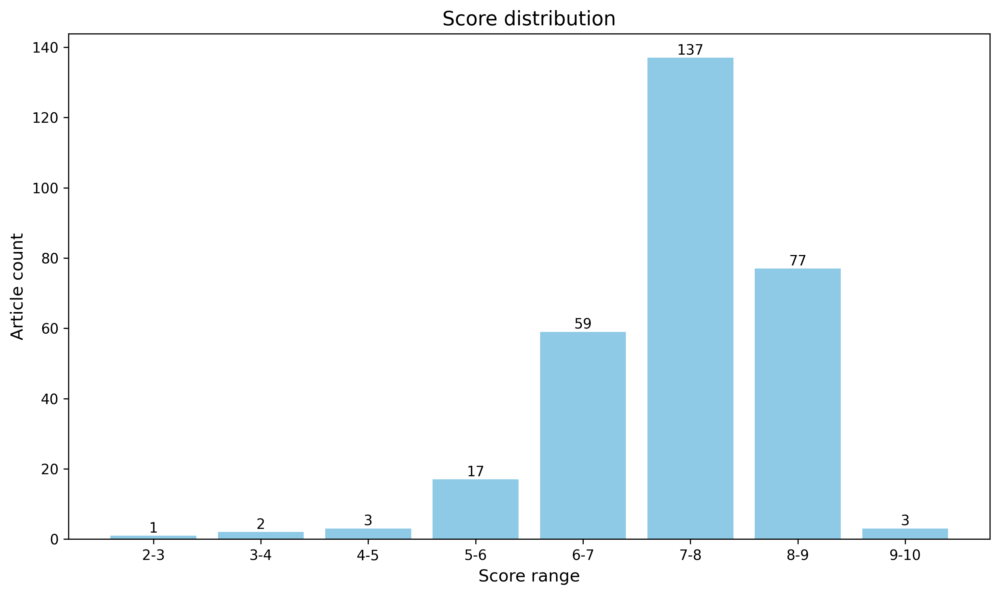

神经科学快讯·第026期 神经科学周报：AI蛋白设计RNA递送载体、单细胞空间异构体测序与泛罗丹明荧光探针 (2026-09-06)
📊 本周概览
- 头条推荐: 2 篇
- 深度解读: 153 篇
- 简要提及: 118 篇
- 跨界启发: 0 篇
- 已过滤: 318 篇
🌏 环球视野

🌍 国家/地区分布 TOP 10
| 排名 | 国家 | 文章数量 |
|---|---|---|
| 1 | United States | 700 |
| 2 | China | 334 |
| 3 | United Kingdom | 174 |
| 4 | Germany | 129 |
| 5 | Canada | 71 |
| 6 | Switzerland | 70 |
| 7 | France | 55 |
| 8 | Japan | 44 |
| 9 | Australia | 41 |
| 10 | Korea | 39 |
总计: 1657 篇文章
🏢 研究机构 TOP 10
| 排名 | 机构 | 文章数量 |
|---|---|---|
| 1 | Chinese Academy of Sciences | 49 |
| 2 | Stanford University | 37 |
| 3 | University of Oxford | 29 |
| 4 | University of Pennsylvania | 28 |
| 5 | Fudan University | 28 |
| 6 | Tsinghua University | 25 |
| 7 | University of Cambridge | 25 |
| 8 | Peking University | 24 |
| 9 | Howard Hughes Medical Institute | 22 |
| 10 | University College London | 22 |
📊 评分分布
| 评分区间 | 文章数量 |
|---|---|
| 2-3 | 1 |
| 3-4 | 2 |
| 4-5 | 3 |
| 5-6 | 17 |
| 6-7 | 59 |
| 7-8 | 137 |
| 8-9 | 77 |
| 9-10 | 3 |
总计: 299 篇评分文章
📈 各领域文章分布
| 领域 | 深度解读 | 简要提及 | 总计 |
|---|---|---|---|
| 未知领域 | 0 | 60 | 60 |
| 系统与环路神经科学 | 44 | 7 | 51 |
| 认知神经科学 | 27 | 12 | 39 |
| 分子与细胞神经科学 | 23 | 6 | 29 |
| 临床与转化神经科学 | 13 | 10 | 23 |
| 感觉与运动神经科学 | 15 | 7 | 22 |
| 计算与理论神经科学 | 11 | 9 | 20 |
| 方法学 | 12 | 4 | 16 |
| 发育神经科学 | 7 | 2 | 9 |
| 社会与情感神经科学 | 1 | 1 | 2 |
合计: 深度解读 153 篇，简要提及 118 篇，共 271 篇
🥇 头条推荐（9.0+分）
中文标题: 从合成蛋白组装体构建自下而上的RNA转移载体
作者: Maren Kirstin Schuhmacher, Christoph Gruber, Wolfgang Wurst
关键词: AI蛋白质设计, 合成生物学, RNA递送, 载体工程, 人工设计
亮点: AI设计蛋白质组装体实现超高效RNA递送，可编程趋向性并推进DMD基因编辑治疗
核心优势: 综合了AI蛋白设计与临床应用，从设计到体内安全及猪模型基因编辑治疗，提供了RNA递送的全新非病毒平台，效率提升数个数量级。
研究局限: 尚未报道在灵长类中的完整毒理学和有效性数据，且长期免疫原性和规模化生产需要进一步验证。
目标读者: 基因治疗、RNA疗法、蛋白质设计、神经科学和转化医学研究者
推荐理由: 该研究展示了如何利用AI生成模型设计自然界中不存在的蛋白质组装体，并将其改造为RNA递送载体。这一成果对神经科学不仅是新工具：它允许研究者按需制造可化学修饰、可靶向特定细胞类型的核酸传输系统，有望为脑内基因编辑、RNA疗法和神经示踪提供更灵活、更低免疫原性的替代方案；同时，它也标志着人工蛋白质设计可以达到功能级复杂度，为跨尺度生命系统的理性工程奠定基础。
De novo pan-rhodamine binders for fluorescence microscopy from mammalian cells to extremophiles.
头条推荐 9.0/10中文标题: 从哺乳动物细胞到极端微生物的从头设计泛罗丹明结合剂用于荧光显微镜成像
作者: Chen Y, Yserentant K, Hong K et al.
关键词: 荧光显微镜, 罗丹明染料, 蛋白质设计, 活细胞成像, 跨物种验证, 高稳定性
亮点: 通用de novo设计的罗丹明荧光标签，兼具超高亮度、可逆结合与极端耐受性，有望重塑活细胞成像工具格局
核心优势: 打破传统荧光标签的工程化限制，通过泛罗丹明设计策略实现从哺乳动物到极端微生物的通用成像，并在STED和单分子成像中超越现有HaloTag
研究局限: 目前证据主要来自体外和有限细胞类型，其长期稳定性和体内深层组织应用尚需验证；泛结合重复使用可能对特定染料灵敏度略有牺牲
目标读者: 光学显微镜与超分辨成像专家、化学生物学与荧光探针开发者、细胞微生物学及神经科学研究人员
推荐理由: 该项研究采用从头设计策略开发出新型泛罗丹明结合蛋白，为活细胞荧光成像提供了兼具高亮度、可逆结合、小型化和化学稳定性的通用标签。对神经科学而言，该工具可适配多波长荧光显微镜，有望提升活体组织中神经元亚细胞结构和动态的可视化能力，并为从分子到系统的跨尺度成像提供更可靠的新技术路径。
📚 精选文献（按领域分类）
临床与转化神经科学
中文标题: 强迫症和慢性抽动障碍患者的全外显子测序识别出36个大效应风险基因
作者: Belinda Wang, Matthew N. Tran, Matthew W. State
关键词: 全外显子测序, 罕见变异, 三人家系, 人类, 强迫症, 抽动障碍
亮点: 大规模外显子测序揭示36个OCD与慢性抽动障碍高风险基因，打开病因与治疗新窗口。
核心优势: 通过大规模家系和病例对照分析，将高置信度风险基因从4个扩展到36个，并结合转录组与网络分析揭示神经发育机制汇聚。
研究局限: 缺乏功能实验验证这些基因的致病变异效应，且样本主要为欧洲血统，跨种族普适性有限。
目标读者: 神经遗传学、精神疾病基因组学、发育神经生物学及临床医生
推荐理由: 该研究基于大规模全外显子测序和家系设计，系统鉴定了36个与强迫症和慢性抽动障碍相关的罕见大效应风险基因，其中多个与突触传递、神经发育和染色质重塑相关。这项发现极大拓展了对OCD和CTD遗传结构的认识，为后续功能机制研究和潜在治疗靶点提供了重要候选基因，是精神疾病遗传学领域的高影响力进展。
中文标题: 青少年ADHD中关联网络结构连接的发育偏差预测症状与治疗结果
作者: Xiaoyu Xu, Zhao Fu, Zaixu Cui
资深研究者: Xiaoyu Xu (h指数=35); Zaixu Cui (h指数=34)
关键词: ADHD, 白质结构连接, 青少年, 纵向队列, 个体化偏差, 预后生物标志物
亮点: 基于大规模纵向影像构建个体白质连接偏差轨迹，为ADHD症状监测与药物分层提供潜在生物标志物
核心优势: 在超过一万例样本上结合发育队列与独立验证队列，并利用纵向治疗随访将连接偏差变化与症状改善和药物反应关联，证据链较为完整
研究局限: 结构连接偏差的特异性与因果机制尚不清晰，治疗预测仅限于atomoxetine短时程观察，且缺少与临床量表等易获取指标的对比，转化落地仍有距离
目标读者: 儿童精神病学、发展认知神经科学、神经影像学及计算精神病学研究者
推荐理由: 本研究通过大规模纵向队列与独立验证队列，刻画了ADHD青少年白质结构连接偏离正常发育轨迹的个体化特征，并揭示其与症状演变及治疗反应的关联。这种基于标准模型的偏差量化方法，为神经精神疾病的预后预测和精准干预提供了可推广的计算框架，对临床转化研究具有直接参考价值。
Priming of CD8+ T cells by peripheral dendritic cells exacerbates tau-mediated neurodegeneration
深度解读 8.1/10中文标题: 外周树突状细胞引发的CD8+ T细胞启动加剧tau介导的神经退行性变
作者: Hao Hu, Peter Bor-Chian Lin, David M. Holtzman
关键词: tau蛋白病, CD8+ T细胞, 树突状细胞, 外周免疫, 神经炎症, 转基因小鼠
亮点: 首次揭示外周cDC1细胞通过交叉呈递启动CD8+ T细胞，进而驱动tau蛋白介导的神经退行性病变的关键免疫机制。
核心优势: 利用多种tauopathy小鼠模型和条件性基因敲除，系统验证了cDC1依赖性外周priming在脑内CD8+ T细胞浸润和神经退行中的因果作用。
研究局限: 主要基于小鼠模型，尚缺乏人类病理样本的直接验证，且未深入探讨不同tauopathy背景下T细胞亚群和抗原特异性的异质性。
目标读者: 神经免疫学、神经退行性疾病、免疫学及阿尔茨海默病转化研究者
推荐理由: 本研究首次揭示外周cDC1树突状细胞通过交叉呈递抗原启动CD8+ T细胞，进而浸润脑实质加剧tau蛋白介导的神经变性。该发现将适应性免疫与tau蛋白病机制直接相连，为阿尔茨海默病和原发tau蛋白病提供了新的免疫治疗靶点与生物标志物思路，对神经免疫交叉领域具有重要推动作用。
中文标题: DNA甲基化谱识别成簇原钙粘蛋白的长程表观遗传沉默是脑膜瘤进展的关键决定因素
作者: Daniel J. Merk, Peter Paßlack, Ghazaleh Tabatabai
单位: Tabatabai@Med; Department Of Neurology And Interdisciplinary Neuro-Oncology, Hertie Institute For Clinical Brain Research, University Hospital Tübingen, Eberhard Karls University Tübingen, Tübingen, Germany; Ghazaleh 等
研究地区: Germany
关键词: DNA甲基化, 表观遗传学, 脑膜瘤, 原钙粘蛋白, 临床队列, 基因沉默
亮点: 从甲基化图谱到功能机制，揭示脑膜瘤进展的新型表观遗传驱动和精准预后标志
核心优势: 基于大样本横断面与纵向队列，整合全基因组DNA甲基化分析和体外功能实验，首次揭示聚集原钙粘蛋白的表观遗传沉默通过调节β-catenin信号驱动脑膜瘤进展，并建立了优于现有分类的预后预测模型。
研究局限: 机制验证主要依赖关联分析和有限的细胞学实验，缺乏体内模型或干预策略；队列可能收到选择偏倚，且未明确甲基化特征与其他遗传学改变的上下游关系。
目标读者: 神经肿瘤学、表观遗传学、神经病理学和计算系统生物学研究者
推荐理由: 这项研究通过大规模跨时段人类脑膜瘤样本的DNA甲基化谱分析，发现表观遗传变异与肿瘤临床进展密切相关，并揭示了聚集原钙粘蛋白基因簇的长距离表观沉默是驱动恶性转化的关键机制。研究将组学层面的表观特征与临床终点紧密关联，为脑膜瘤的精准预后分层提供了新候选标志物，同时为理解肿瘤异质性背后的长距离基因调控提供了重要线索。
中文标题: 颈动脉体功能障碍导致Rett综合征的呼吸不稳定
作者: Strain ML, da Silva EN, Olsen ML et al.
关键词: Rett综合征, MECP2, 颈动脉体, 呼吸不稳定, 小鼠模型
亮点: 揭示颈动脉体功能障碍而非单纯中枢机制驱动RTT呼吸不稳定，提出外周化学感受器作为新治疗靶点。
核心优势: 通过多种互补方法（纯氧抑制、MeCP2特异性敲低、转录组分析和多巴胺受体激动剂）确证颈动脉体多巴胺信号缺陷在RTT呼吸不稳定中的因果作用。
研究局限: 作为动物模型研究，尚需人类颈动脉体功能数据验证；且MeCP2敲低的特异性方式、实验时长及对全身的影响需更多细节。
目标读者: Rett综合征研究人员、呼吸生理学与外周化学感受器学者、神经发育疾病相关研究者。
推荐理由: 该研究挑战了Rett综合征呼吸障碍单纯源于中枢神经系统的传统认识，揭示外周颈动脉体功能障碍是呼吸不稳定的关键驱动因素。通过结合MeCP2缺陷小鼠模型与高氧干预，证明降低外周化学感受器输出可稳定呼吸，为Rett综合征的呼吸管理提供了全新靶点，也为神经发育疾病中外周-中枢相互作用提供了范例。
中文标题: 赛洛西宾通过维持线粒体运输预防化疗诱导的周围神经病变
作者: Heles M, Pasvolsky L, Sathishkumar H et al.
关键词: 小鼠, 化疗神经病变, 裸盖菇素, 线粒体运输, 轴突, 行为学
亮点: 仅两剂裸盖菇素可通过维持线粒体转运预防化疗引起的周围神经病变，且不障碍抗肿瘤疗效。
核心优势: 在多种化疗模型中严谨验证了psilocybin的预防效果，并从外周和中枢双层面阐明TrkB-Akt-PAK5-MAP2-KIF5B通路介导的线粒体运输保护机制，具有高度临床转化潜力。
研究局限: 为临床前动物模型研究，缺乏临床试验验证；psilocybin的精神活性与管制状态可能限制其在预防性用药中的实际应用。
目标读者: 神经科学、肿瘤神经生物学、周围神经病变及抗肿瘤药物研发研究者
推荐理由: 这项研究发现仅在化疗前给予两次裸盖菇素即可在铂类和紫杉烷类模型中持久预防周围神经病变，且不影响抗肿瘤疗效。机制上，裸盖菇素通过维持轴突线粒体运输与分布，保护表皮内神经纤维末梢。该结果不仅为化疗诱导神经病变提供了潜在防治手段，也拓展了经典迷幻药在神经保护领域的作用机制，为转化研究开辟了新方向。
中文标题: 用肽偶联红细胞治疗多发性硬化可诱导抗原特异性调节性T细胞
作者: Lutterotti A, Ludersdorfer T, Docampo MJ et al.
关键词: 多发性硬化, 免疫耐受, Treg细胞, 肽偶联红细胞, 细胞治疗, 小鼠
亮点: 利用肽偶联红细胞诱导抗原特异性调节性T细胞，为多发性硬化症提供了一种新型抗原特异性免疫耐受策略。
核心优势: 首创将肽偶联红细胞用于MS患者，展示了特异性免疫耐受的可行性和安全性，为自身免疫病治疗开辟了新途径。
研究局限: 样本量较小且为开放标签研究，临床疗效指标和长期效应仍需更大规模随机对照试验验证。
目标读者: 神经免疫学家、临床神经病学家、自身免疫病研究人员及细胞治疗开发者。
推荐理由: 该研究开发了一种利用肽偶联红细胞诱导抗原特异性Treg细胞的新策略，并在多发性硬化模型中展示了治疗潜力。其核心创新在于通过红细胞偶联实现抗原靶向免疫耐受，避免了传统免疫抑制的广谱副作用，为神经免疫疾病提供了一种更具特异性、可转化的治疗路径。对关注自身免疫机制及细胞疗法的神经科学读者具有重要启示。
中文标题: KRAS 是丛状神经纤维瘤形成所必需的，并代表已确立肿瘤中的可靶向弱点
作者: Liang Hu, Niousha Ahmari, Abby Schaeper et al.
单位: Department Of Epidemiology And Biostatistics, Ucsf, 1450 3Rd Street, San Francisco, Ca 94143, Usa; Division Of Experimental Hematology And Cancer Biology, Cancer And Blood Diseases Institute, Cincinnati Children'S Hospital Medical Center, 3333 Burnet Ave, Cincinnati, Oh 45229, Usa; Pediatric Oncology Branch, National Cancer Institute, Bethesda, Md 20892, Usa 等
研究地区: United States
关键词: 神经纤维瘤, KRAS, 施万细胞, 基因敲除, MAPK信号, 小鼠模型
亮点: 揭示KRAS而非HRAS是NF1驱动神经纤维瘤形成的关键开关，并证明KRAS抑制可为已发生肿瘤提供新的治疗策略。
核心优势: 首次在体内模型中证明KRAS对NF1缺失引发的神经纤维瘤发生具有亚型特异性必需性，并将遗传学证据与临床相关的KRAS抑制剂疗效及免疫微环境重塑直接衔接。
研究局限: 主要基于单一小鼠模型和单一KRAS抑制剂；对人类肿瘤异质性、长期用药毒性与免疫调节机制的深度解析仍有待后续工作。
目标读者: NF1相关肿瘤与周围神经疾病研究者、RAS信号通路与靶向治疗开发人员、临床前转化医学与肿瘤免疫方向科学家。
推荐理由: 该研究通过遗传学手段证明KRAS而非HRAS是神经纤维瘤形成所必需，并在已建立的肿瘤中验证了KRAS作为治疗靶点的潜力。这一发现为NF1患者的治疗提供了超越MEK抑制剂的替代策略，同时深化了对RAS亚型功能特异性的理解，对神经肿瘤学和RAS信号通路研究均有重要意义。
中文标题: 当大脑过早老化：衰老与衰老作为多发性硬化进展的驱动因素
作者: Drake SS, Zaman A, Fournier AE
关键词: 多发性硬化, 细胞衰老, 神经退行性变, 神经炎症, 抗衰老治疗
亮点: 整合衰老与细胞衰老文献，提出‘脑过早衰老’作为多发性硬化进展的新驱动力假说。
核心优势: 将MS进展中的神经退行性病变与细胞衰老机制连接，可能为治疗提供新靶点与综合框架。
研究局限: 缺乏对文章具体内容的完整评估，仅依据标题与框架推测，无法验证证据的严谨性及批判深度。
目标读者: 神经免疫学家、多发性硬化研究者、衰老生物学及细胞衰老领域科学家
推荐理由: 该研究将细胞衰老视为多发性硬化（MS）进展的核心驱动因素而非单纯伴随现象，为理解MS的慢性神经退行阶段提供了新框架。通过整合衰老生物学与神经免疫学，文章系统阐述衰老细胞如何加剧神经炎症、破坏微环境稳态，并探讨了senolytics等抗衰老干预的前景。这一视角不仅拓宽了MS的病理机制认知，也为其他年龄相关神经退行性疾病的共病机制研究提供了新范式，值得神经科学和临床研究者关注。
中文标题: 可解释的脑动力学AI潜在空间揭示精神分裂症症状的小脑-前额叶特征
作者: Bonhoeffer, M., Muratore, P., Mathis, M. W. et al.
关键词: 静息态fMRI, 深度学习, 可解释性, 精神分裂症, 小脑-前额叶环路, 生物标志物
亮点: 可解释AI驱动的脑动力潜空间揭示精神分裂症个体症状严重度的脑小脑-前额叶特征，迈向精准解码
核心优势: 采用自监督对比学习构建无标签低维流形，结合新归因方法提供解剖学可解释的个体水平症状预测，识别出新的小脑-前额叶病理痕迹
研究局限: 预印本未经同行评审，关键细节如样本量、统计控制和跨站稳健性未充分披露，证据强度待验证
目标读者: 计算精神病学、精神分裂症神经影像、可解释AI在脑疾病中的应用研究者及临床转化科学家
推荐理由: 该研究构建了基于自监督对比学习的可解释AI框架，将精神分裂症患者的静息态动态映射到低维潜在空间，并通过新的归因方法定位最具解码能力的脑区。在独立数据集中验证了个体水平的症状严重程度标记，同时保持了神经解剖可解释性，揭示了小脑-前额叶环路在精神分裂症症状维度中的特异性贡献。这项工作弥合了复杂AI模型与临床神经影像解释之间的鸿沟，为精神疾病的精准诊断和症状机制研究提供了方法学新范式。
中文标题: 新辅助PD-1联合CTLA-4免疫检查点阻断治疗可手术切除的复发性胶质母细胞瘤：一项随机手术机会窗试验
作者: Lu Sun, Lauren F. Markus, Patrick Y. Wen
关键词: 胶质母细胞瘤, 免疫检查点抑制, 新辅助治疗, 临床试验, 随机对照, 肿瘤微环境
亮点: 首个在复发胶质母细胞瘤中评估新辅助PD-1联合CTLA-4阻断的随机手术窗口试验，直接揭示肿瘤微环境免疫重塑
核心优势: 随机化设计结合手术窗口期活检，在人体内直接评估双重免疫检查点抑制的生物学和临床效应，为复发GBM的免疫治疗提供高质量转化证据
研究局限: 手术窗口试验通常样本量有限，主要终点多为免疫学指标而非生存期，长期临床获益和安全性需更大规模验证
目标读者: 神经肿瘤学、肿瘤免疫学、胶质瘤基础和转化研究者
推荐理由: 这项随机手术窗试验在复发性胶质母细胞瘤中评估了PD-1联合CTLA-4新辅助免疫治疗的疗效与免疫生物学效应。研究采用严格随机化设计，结合手术前后肿瘤组织分析，为免疫检查点阻断在脑肿瘤中的适用性提供了高等级临床证据，并提示联合治疗可重塑肿瘤免疫微环境。对关注神经肿瘤免疫治疗和临床转化研究的读者具有重要参考价值。
中文标题: 肌萎缩侧索硬化-额颞叶谱系障碍的生物型生物标志物谱研究进展
作者: Strong MJ, Donison N, Al-Chalabi A et al.
关键词: 生物标志物, 蛋白质组学, 人类, 额颞叶, 运动神经元, 神经退行性疾病
亮点: 整合ALS-FTD谱系统的体型生物标志物概念，推动疾病异质性分类和个体化诊疗
核心优势: 提出将临床、影像和体液标志物纳入统一生物型框架，明确指向精准医学和临床试验分层，具有突出的转化导向。
研究局限: 以进展综述为主，缺乏对各项候选标志物信效度和验证数据的深入评述，概念的临床可操作性尚未充分支撑。
目标读者: ALS/FTD临床医生、神经退行性疾病生物标志物研究者、神经病理学及计算神经科学专家
推荐理由: 本研究聚焦于肌萎缩侧索硬化-额颞叶谱系疾病（ALS-FTSD）的'生物型'标志物框架，尝试在跨临床表型基础上建立客观分子分型依据。若成功，将突破当前依赖临床评分的诊断局限，为早期识别、预后分层和靶向治疗提供可量化的生物学参考。对神经退行性疾病研究者及临床转化人员均有重要参考意义。
Brain-cognition relationships and treatment outcome in treatment-resistant late-life depression
深度解读 7.3/10中文标题: 难治性晚年抑郁症的脑-认知关系与治疗结果
作者: Peter Zhukovsky, Meryl A. Butters, Aristotle N. Voineskos
关键词: 难治性抑郁, 老年, 执行功能, 记忆, 神经影像, 治疗结局
亮点: 基于多中心RCT研究，多模态MRI揭示治疗抵抗性老年抑郁中的脑-认知网络关联，并证实认知和灰质结构可预测治疗抵抗。
核心优势: 在同一受试者中综合了静息态功能连接、白质完整性和灰质结构，并用弹性网络纵向预测治疗缓解，形成了从脑表型到临床结局的可解释链条。
研究局限: MRI亚组样本完成率约59%，可能与总人群存在选择偏倚；主要关联效应量较小（r=0.27–0.38），且缺乏外部验证。
目标读者: 老年精神病学、神经影像学、认知老化和临床试验设计领域的研究者
推荐理由: 这项研究聚焦难治性晚年抑郁，一个临床棘手且高致残的群体。基于多中心随机对照试验的纵向数据，系统探究执行功能和记忆相关的神经基础与后续治疗应答之间的关联。通过结合神经影像和神经心理学评估，有望识别出可预测治疗效果的认知与脑指标，为个性化干预提供循证依据。该工作不仅拓展了对难治性抑郁认知神经机制的认知，也为临床精准决策提供了值得关注的转化证据。
中文标题: 海洋细菌Kocuria rhizophila通过抑制铁死亡减轻线虫帕金森病病理
作者: VERMA, S., Singh, S., Damodaran, A. et al.
摘要: 海洋细菌Kocuria rhizophila通过抑制铁死亡减轻帕金森病线虫模型的病理特征
优势: 利用多模态证据（包括转录组、脂质过氧化检测和行为学），系统揭示了海洋细菌通过抑制铁死亡途径发挥神经保护作用的机制。 局限: 研究仅限于线虫模型，缺乏哺乳动物及人体证据，其临床转化意义不明。 受众: 神经退行性疾病研究者、铁死亡生物学研究者、天然产物药理学与线虫模式生物科学家
中文标题: 语音脑机接口通信的共同度量
作者: Dulhan Jayalath, Benjamin Ballyk, Oiwi Parker Jones
摘要: 提出开放词汇互信息（OVMI）作为统一的通信度量，解决语音BCI领域跨系统不可比问题。
优势: 以信息论工具构建可比较的通信尺度，并实证展示改进词汇表设计可提升准确率。 局限: 基于离线数据分析，缺乏在体验证，且依赖于对用户语言意图参考分布的建模假设。 受众: 语音BCI研究者、神经工程、计算神经科学和信息论领域学者
中文标题: 探索慢性卒中个体运动皮层中间神经元传导时间及其与运动功能的关系
作者: Rajendran A, Denyer R, Rubino C et al.
摘要: 利用方向性TMS揭示卒中后运动皮层中间神经元传导时间失衡与运动功能损伤的直接关联
优势: 首次将AP-PA方向性MEP潜伏期差作为中间神经元传导时间指标，并发现其半球间失衡是慢性卒中后运动功能障碍的重要解释因素，为皮层内回路病理提供了非侵入性生物标志物。 局限: 样本量较小（n=20）且缺乏健康对照组，横断面设计无法推断因果关系；未结合多模态成像或生理记录验证中间神经元来源的解剖学基础。 受众: 运动生理学、脑刺激技术、卒中康复和神经影像领域的研究者
White matter lesions disrupt cholinergic transmission to impact cognition in Parkinson's disease.
简要提及 6.8/10中文标题: 帕金森病中的白质病变破坏胆碱能传递，从而影响认知
作者: Murphy PT, Zarkali A, Weil RS
摘要: 将白质病变与基底前脑胆碱能通路损伤相整合，为帕金森病认知障碍提供新的影像学机制假说。
优势: 从白质结构损伤切入胆碱能神经传递，为帕金森病认知障碍提供了血管-神经化学交叉视角。 局限: 缺少研究设计与主要效应的详细摘录，无法对因果方向和效应量进行严格验证。 受众: 帕金森病、胆碱能成像、脑小血管病及认知障碍研究者
Complementary vertebrate Wac models exhibit phenotypes relevant to DeSanto-Shinawi Syndrome.
简要提及 6.3/10中文标题: 互补的脊椎动物Wac模型表现出与DeSanto-Shinawi综合征相关的表型
作者: Lee KH, Stafford AM, Pacheco-Vergara M et al.
摘要: 互补脊椎动物模型刻画Wac基因在发育与行为层面的跨物种表型，为罕见病机制提供新线索
优势: 利用多种互补的脊椎动物模型（可能包括小鼠/斑马鱼等）从多角度验证Wac基因缺失与DeSanto-Shinawi综合征相关表型的因果关系，提升证据的广度和可靠性。 局限: 缺乏具体实验细节，可能仅为单一基因的表型描述而未深入分子机制或提供治疗靶点，核心创新性有限；具体证据强度需看体内数据是否充分。 受众: 罕见病遗传学、神经发育生物学及斑马鱼/小鼠模型研究者
中文标题: 致幻剂作为预防性神经保护剂
作者: Maiarú M
摘要: 蘑菇中的迷幻化合物或可预防化疗引起的神经损伤
优势: 提出迷幻化合物作为预防性神经保护药物的新策略，具有临床转化潜力。 局限: 摘要信息极有限，缺乏方法学、实验证据和机制细节，无法充分评估结论可靠性。 受众: 神经药理学、神经肿瘤学及化疗相关神经病变研究者
中文标题: 生物力学能量采集改善中风后活动能力
作者: Qiqi Pan, Yuyan Luo, Zhengbao Yang
摘要: 利用生物力学能量采集技术为卒中后康复设备供电，探索自供能移动辅助的新路径
优势: 将能量采集与卒中后移动能力改善相结合，指向可持续、自供能的康复辅助技术。 局限: 缺乏全文和实验数据，无法评估临床效果及能量采集效率的实际贡献。 受众: 康复工程、可穿戴设备、生物医学工程和神经康复研究者
中文标题: 人类TSC1和TSC2基因非同义单核苷酸多态性的综合分析：一种计算机模拟方法
作者: Alam T, Akther S
摘要: 整合多工具系统预测TSC1/TSC2非同义SNP的致病性，为结节性硬化症的分子筛查提供基线线索。
优势: 覆盖两个基因全部非同步编码SNP并利用多种计算算法交叉验证，有助于快速缩小候选致病位点范围。 局限: 无体外/体内实验印证预测结论；算法预测欠准确且人群遗传变异缺失，可能产生假阳性/假阴性。 受众: 结节性硬化症临床研究人员、医学遗传学和计算生物学从业者。
中文标题: 包含电子竞技的多成分项目对老年人身体和认知功能的影响及可行性：一项非随机预试验
作者: Nemoto Y, Otsuka F, Suzuki S et al.
摘要: 首次探索电子竞技作为多组分干预组成部分对老年人身体与认知功能的可行性与初步效果
优势: 结合现代电子游戏元素与传统老年运动干预，题材新颖，关注健康老龄化新途径。 局限: 非随机试点设计、样本量小且无对照，证据级别低，结论外推受限。 受众: 老年医学、健康促进及运动神经科学领域的研究者和干预设计人员
中文标题: 脑刺激技术旨在改善女性健康
作者: Smith JE
摘要: 概述非侵入性脑刺激在孕产妇健康中的试验方向
优势: 指向一个被忽视的研究人群，主题具有潜在社会意义 局限: 为新闻摘要级内容，缺乏实质科学细节和方法学支撑 受众: 对该交叉领域感兴趣的普通科学读者
分子与细胞神经科学
中文标题: 跨物种纹状体单细胞图谱定义细胞类型和亚区疾病易感性
作者: Linville RM, James BT, Galani K et al.
关键词: 单细胞测序, 跨物种, 纹状体, 神经元亚型, 区域异质性, 疾病易感性
亮点: 跨物种单细胞纹状体图谱定义细胞类型与亚区疾病易感性，整合多组学揭示亨廷顿病脆弱性机制。
核心优势: 大规模多模态单细胞数据整合（109人+22小鼠），系统刻画纹状体亚区转录梯度与罕见神经元亚群，并直接关联遗传风险、药物靶点和体细胞重复扩增疾病易感性，为理解纹状体疾病机制提供高分辨率资源。
研究局限: 以转录组特征为主导，缺乏蛋白表达、功能验证或活体神经元活动的直接证据，细胞亚群的功能意义和跨物种差异的认知验证仍有限。
目标读者: 神经科学家、单细胞基因组学、神经遗传学和计算生物学研究者，尤其关注纹状体功能与神经精神疾病机制的人群。
推荐理由: 该研究通过跨物种（人类与小鼠）的单核RNA测序，构建了覆盖背腹侧纹状体的精细细胞图谱，揭示了此前未明确定义的稀有神经元亚群和连续转录梯度。其将转录状态与疾病相关基因表达模式对应起来，为理解亨廷顿病、帕金森病及精神疾病中不同纹状体亚区的选择性脆弱性提供了关键的分子基础，是神经细胞图谱领域的代表性工作。
中文标题: 在人视杆CNG通道中，PIP2结合变构位点阻断激活
作者: Taehyun Park, Crina M. Nimigean
资深研究者: Taehyun Park (h指数=25); Crina M. Nimigean (h指数=35)
关键词: PIP2调控, CNG通道, 视杆细胞, 变构位点, 电生理, 人类
亮点: 首个解析PIP2调控人源视杆CNG通道的变构机制，为光感受器适应及药物靶点提供结构基础。
核心优势: 结合电生理、单通道记录与cryo-EM多构象分析，直接揭示PIP2通过空间位阻稳定非导电态的结构机制，证据链条完整。
研究局限: 研究主要基于孤立的CNGA1同源四聚体，未纳入完整视杆CNG通道的亚基组成及体内光感受器功能验证，机制推广需谨慎。
目标读者: 离子通道结构生物学、光转导与视觉生理学、脂质-膜蛋白相互作用及药理学研究者
推荐理由: 该研究揭示了PIP2通过变构位点抑制人视杆CNGA1通道的分子机制，为理解磷脂调控光感受器cGMP敏感性及其对光适应和动态范围的影响提供了关键结构-功能证据。工作将脂质调节与通道门控联系起来，对视觉信号转导和离子通道药理学均有重要启示。
中文标题: 三元Neurexin-T178-PTPR复合物代表神经元突触组织的前突触核心模块
作者: Spyros Thivaios, Jochen Schwenk, Bernd Fakler
关键词: 突触前, 粘附分子, 质谱, 免疫电镜, 蛋白质复合体, 小鼠
亮点: 揭示神经突触组织的一个通用核心组件：跨膜绑定的Neurexin-T178-PTPR三元复合物，将主要突触粘附家族连接到协调的突触网络。
核心优势: 结合系统化亲和纯化、定量质谱和免疫电镜，鉴定了新型突触组织中心，并首次连接Neurexins与LAR-PTPRs及T178，且功能验证支持其在突触装配中的核心作用。
研究局限: 主要依赖生化及结构分析，对突触功能与行为的直接调控缺乏证据；T178缺失引起的效应可能包含未特异的次级影响，核心概念仍需在活体水平及不同物种中进一步验证。
目标读者: 突触和组织生物学、细胞神经科学以及分子相互作用和质谱蛋白组学领域的研究者。
推荐理由: 本研究通过大规模多表位亲和纯化结合定量质谱和免疫电镜，揭示Neurexin-T178-PTPR构成三元复合物，作为突触前组织化的核心模块。该发现填补了突触细胞粘附分子协同工作机制的空白，为理解突触形成和维持的分子逻辑提供了重要新视角，并对突触疾病机制研究有潜在贡献。
中文标题: 小鼠大脑中RNA周转动力学的空间图谱
作者: Qi Qiu, Hongjie Zhang, Hao Wu
资深研究者: Hao Wu (h指数=95)
关键词: 空间转录组, RNA代谢, 代谢标记, 小鼠, 齿状回, 全脑
亮点: 空间解析RNA合成与降解动态，揭示小鼠脑中RNA代谢的分子景观
核心优势: 开发新型空间转录组学方法spatial NT-seq，实现无转基因代谢标记下全组织RNA更新速率的空间图谱绘制，并与计算模型结合揭示RNA稳定性的调控逻辑。
研究局限: 方法分辨率与通量受到空间转录组平台限制，且摘要中未提供跨脑区验证的定量深度，计算模型预测的调控因子需要更多功能实验佐证。
目标读者: 空间转录组学、RNA动力学、神经科学和计算生物学家
推荐理由: 这项研究开发了spatial NT-seq，首次将无转基因代谢RNA标记与空间转录组技术结合，实现了小鼠全脑水平上新合成与原有RNA的同时空间定位。利用该方法，作者揭示了不同脑区RNA更新速率的显著异质性，并发现齿状回作为一个独特的动态热点，其基础RNA合成与降解被协同上调。该方法为在完整组织中研究转录调控的时间维度提供了通用工具，对理解脑区特异性基因表达维持和可塑性机制有重要意义。
中文标题: 细胞内补体因子H在CNS炎症期间保护神经元
作者: Christina Mayer, Marcel S. Woo, Manuel A. Friese
资深研究者: Marcel S. Woo (h指数=16); Manuel A. Friese (h指数=60)
关键词: 神经炎症, 补体系统, 视网膜神经节细胞, 单核RNA测序, 多发性硬化, 神经保护
亮点: 颠覆传统认知，揭示补体因子H在神经元内的非经典抗氧化保护功能，为炎症性神经退行性疾病提供新机制和治疗思路。
核心优势: 将人类MS样本的单核RNA测序与机制研究相结合，首次揭示CFH作为关键的神经元内在保护因子，独立于补体C3发挥抗铁死亡作用，开辟了神经免疫与脂质过氧化交叉研究的新方向。
研究局限: 主要基于视网膜神经节细胞模型，细胞内CFH的下游分子靶点及与其他应激通路的互作机制尚未完全阐明；跨中枢其他区域及病理阶段的验证仍需更多空间和时间维度证据。
目标读者: 神经免疫学、补体系统、细胞应激与铁死亡、神经退行性疾病转化研究领域的科研人员。
推荐理由: 该研究在视网膜神经节细胞中揭示了胞内补体因子H（CFH）的神经元固有保护作用，为理解多发性硬化等中枢神经系统炎症中神经元亚型差异脆弱性提供了全新机制。通过单核RNA测序等高分辨手段，将补体系统与非经典胞内功能联系起来，拓展了补体在神经退行中的认知边界，也为靶向胞内补体通路的神经保护策略奠定了概念基础。
中文标题: 谷氨酸浓度通过电导状态占据调节AMPA受体功能
作者: Gokulakrishna Banumurthy, Reagan L. Pennock, Jacques I. Wadiche
关键词: 谷氨酸, AMPAR, 电生理, 突触传递, 中间神经元, 构象状态
亮点: 揭示谷氨酸浓度如同开关般调制AMPAR功能，打破仅由亚基组成决定受体功能的传统范式
核心优势: 结合突触与单通道电生理记录及数值模拟，证明谷氨酸浓度通过占据不同传导状态调控AMPAR的整流、多胺阻断和钙通透性，开放了突触谷氨酸动态变化编码信号的新维度。
研究局限: 研究主要在中间神经元突触和离体系上完成，体内突触间隙谷氨酸浓度变化是否达到同等效应、以及机制在不同脑区和受体亚型间的普适性仍需直接验证。
目标读者: 突触传递与离子通道研究者、神经药理学及计算神经科学学者
推荐理由: 该研究揭示突触间隙谷氨酸浓度本身即可调节AMPAR的电导状态占据，从而影响突触传递的关键生理特征。传统上，AMPAR的功能差异被归因于亚基组成，而这项工作提出浓度依赖的构象机制，为理解突触可塑性、信号整合及神经精神疾病中谷氨酸稳态失衡的后果提供了全新视角，具有重要的基础转化意义。
Structural basis for modulation of group III mGlu receptors by transsynaptic interactions
深度解读 8.2/10中文标题: 组III代谢型谷氨酸受体经跨突触相互作用调节的结构基础
作者: William G. Ludlam, Chu-Ting Chang, Kristina Cechova et al.
单位: Department Of Physiology And Biophysics, University Of Miami, Miller School Of Medicine, Miami, Fl 33136, Usa; Department Of Molecular Biosciences, Northwestern University, Evanston, Il 60208, Usa; The Herbert Wertheim Uf Scripps Institute For Biomedical Innovation And Technology, University Of Florida, Jupiter, Fl 33458, Usa 等
研究地区: United States, Canada
关键词: 代谢型谷氨酸受体, 冷冻电镜, 突触黏附, ELFN蛋白, 受体调节
亮点: 首次解析ELFN-mGluR复合物冷冻电镜结构，揭示跨突触调控的变构机制与疾病因果联系
核心优势: 以高分辨率结构为核心，结合功能分析和疾病突变，阐明mGluR与ELFN互作的分子机制及其病理意义
研究局限: 基于摘要信息，具体实验统计学严谨性、体内功能验证的深度及疾病因果关系的直接证据尚需进一步确认
目标读者: 结构生物学家、突触生理学家、神经药理学研究者及神经遗传病机制研究人员
推荐理由: 本研究借助冷冻电镜高分辨率结构，首次揭示了III型代谢型谷氨酸受体与跨突触黏附蛋白ELFN复合物的组装模式。该结构不仅阐明了ELFN如何通过胞外域结合并调节mGlu受体的活性与定位，还为理解谷氨酸能突触的逆向信号调控提供了分子基础。对神经递质受体的结构生物学和突触功能研究均具有重要推动作用，亦为相关神经精神疾病的药物设计提供了新模板。
中文标题: 核心生物钟基因控制夏威夷钩虾的分子与行为潮汐节律
作者: Louis V, Bellido Z, Helfenbein A et al.
关键词: 海洋片脚类, 潮汐节律, 昼夜节律, 时钟基因, 基因编辑, 节律行为
亮点: 首次在甲壳动物中证明跨昼夜与潮汐节律共享同一套核心时钟基因但转录调控机制分道扬镳
核心优势: 系统敲除四个核心时钟基因并同时检验昼夜与潮汐行为及分子节律，揭示两种节律的共享核心与差异化调控回路。
研究局限: 基于单一物种和诱变策略，尚需在多类潮汐生物和更高分辨率方法中验证；未解答上游光照/潮汐信号如何分选至不同神经元时钟。
目标读者: 节律生物学、海洋生物学、比较基因组学与时间生物学研究者
推荐理由: 该研究通过CRISPR基因编辑系统突变海洋片脚类动物Parhyale hawaiensis的核心生物钟基因，发现它们同时控制昼夜节律与潮汐节律的分子和行为表现。这一发现打破了潮汐节律独立于昼夜节律的传统框架，提出两种内源性时间节律共享高度保守的分子时钟机制。对神经科学中关于节律产生、时间感知和生物钟适应性的理解具有重要启示。
Astrocytic PI3Kα controls synaptic plasticity and cognitive function via serine metabolism
深度解读 8.0/10中文标题: 星形胶质细胞PI3Kα通过丝氨酸代谢控制突触可塑性和认知功能
作者: Alba Fernández-Rodrigo, Celia García-Vilela, José A. Esteban
关键词: 星形胶质细胞, 海马, 长时程增强, 认知行为, 基因敲除, D-丝氨酸
亮点: 海马星形胶质细胞PI3Kα通过调控丝氨酸代谢驱动NMDA受体依赖的LTP及认知功能
核心优势: 首次揭示星形胶质细胞特异性PI3Kα通过糖酵解-丝氨酸合成通路维持D-丝氨酸水平，进而调节NMDA受体和突触可塑性，并用体内L-丝氨酸挽救行为缺陷，建立胶质代谢与认知功能的直接联系。
研究局限: 证据主要来自成年小鼠海马区及基因敲除模型，缺少对人脑或疾病状态的直接验证；糖酵解通量与丝氨酸合成酶之间具体的分子调控细节尚不充分，机制链条有待更精细解析。
目标读者: 神经科学、胶质细胞生物学、代谢组学、突触可塑性与认知研究者
推荐理由: 该研究揭示了星形胶质细胞中PI3Kα信号在突触可塑性与认知中的关键作用。通过成年小鼠海马星形胶质细胞特异性敲除p110α，作者发现LTP受损且伴随D-丝氨酸水平下降，证明PI3Kα通过维持D-丝氨酸供给NMDA受体来支持LTP诱导。这一发现连接了星形胶质细胞代谢与神经元可塑性，为理解胶质-神经元互作提供了新机制，并为神经精神疾病中D-丝氨酸代谢异常提供潜在靶点。
中文标题: 线粒体钙内流驱动的生物能量学选择性促进药物成瘾
作者: Jun Gao, Haixin Zhao, Xin Pan
资深研究者: Jun Gao (h指数=29)
关键词: 线粒体钙, 伏隔核, 多巴胺释放, 药物成瘾, 光遗传, 小鼠
亮点: 揭示药物成瘾特异性依赖线粒体MCU钙通道介导的生物能量供应，为分离药物奖赏与自然奖赏提供全新靶点。
核心优势: 发现MCU介导的线粒体钙内流和快速ATP生成选择性支持药物诱导的多巴胺释放，MCU缺失或抑制可预防成瘾行为且不影响自然奖赏，机制具有高度特异性。
研究局限: 该摘要未提供实验细节，且潜在混杂因素（如成瘾模型中摄食/运动行为与药物特异性分离、长期可塑性变化）有待进一步验证。
目标读者: 成瘾神经科学、线粒体生物学、多巴胺信号研究及药物开发人员
推荐理由: 这项研究揭示了一个有别于自然奖赏的成瘾特异性生物能量学通路——阿片类与甲基苯丙胺可通过线粒体钙单向转运体（MCU）以线粒体钙内流选择性地驱动伏隔核多巴胺末端能量供应，促进成瘾性多巴胺释放及相关行为。该发现提供了既能打击药物成瘾又不干扰自然奖赏功能的全新靶点，是成瘾治疗的潜在范式突破。
中文标题: 抑制性辅助亚基及癫痫相关疾病突变对AMPA受体激活的调节
作者: Thomas P. Newton, Maria V. Yelshanskaya, Alexander I. Sobolevsky
关键词: AMPA受体, 辅助亚基, 癫痫突变, 兴奋性突触传递, 离子通道
亮点: 抑制性辅助亚基在不加剧兴奋性毒性的同时调谐AMPAR激活的新视角，连接癫痫突变机制
核心优势: 结合结构生物学和电生理学揭示抑制性辅助亚基对AMPAR门控的调谐机制，并阐明癫痫突变如何解除这种调谐。
研究局限: 未能提供摘要；可能只聚焦特定受体亚型，普适性需谨慎。
目标读者: 神经递质受体生物学、癫痫遗传学、结构药理学者
推荐理由: 本研究聚焦AMPA受体的精细调控机制，揭示抑制性辅助亚基如何调节受体激活，并阐明癫痫相关突变对该过程的干扰。这一发现不仅深化了对兴奋性突触传递可塑性的理解，也为癫痫等神经系统疾病的病理机制提供了新的分子靶点，兼具基础科学价值与临床转化潜力。
中文标题: 线粒体功能障碍作为端粒酶缺陷小鼠脑衰老的标志
作者: Palomares, D., Jorgji, J., Saleki, S. et al.
关键词: 端粒, 线粒体, 脑衰老, 转录组, 蛋白质组, 小鼠
亮点: 衰老驱动因素与脑能量代谢障碍新连接
核心优势: 多组学结合功能生化和组织学，系统揭示端粒磨损导致的线粒体功能障碍及区域脆弱性。
研究局限: 基于小鼠模型且属预印本，尚未经同行评审；分子机制因果关系尚需反向遗传学验证。
目标读者: 衰老生物学、线粒体代谢、神经退行性疾病和神经科学研究者
推荐理由: 该研究利用端粒酶缺陷小鼠模型，整合转录组与蛋白质组分析，揭示了端粒缩短驱动的脑衰老中线粒体功能障碍的核心角色。研究不仅验证了脑内衰老标志物，还系统刻画了与神经退行性过程相关的分子级联，为理解阿尔茨海默病等衰老相关疾病的病理机制提供了重要线索，并为靶向线粒体或端粒轴的治疗策略奠定了理论基础。
中文标题: 一个单一的细胞外聚糖将AMPA受体门控与突触可塑性和记忆持久性联系起来
作者: Midorikawa R, Wakazono Y, Basnet SKC et al.
关键词: AMPA受体, 糖基化, 突触可塑性, 记忆巩固, 海马, 电生理
亮点: 单个聚糖修饰将AMPA受体门控与长期记忆维持联系起来，揭示新的调控机制。
核心优势: 聚焦于单一细胞外糖基化表位，提出其直接桥接AMPA受体动力学与突触可塑性/记忆持久性的新机制，概念明确且具有潜在深远意义。
研究局限: 缺乏摘要和全文信息，无法评估实验设计严谨性、多模态验证证据以及结论的普适性。
目标读者: 突触生理学、分子神经科学、学习记忆机制研究者。
推荐理由: 本研究鉴定出位于AMPA受体胞外结构域的一个关键糖链，证明其直接参与调节受体门控特性，并进一步影响突触可塑性长时程增强与记忆的持久保持。这一发现将特定翻译后修饰与受体生物物理学特性、环路可塑性及认知行为联系起来，为理解记忆存储的分子基础提供了新的切入点，也可能为相关认知障碍的治疗提供潜在靶点。
High-resolution structures of human NHE6 and NHE9 elucidate endosomal ion and lipid interactions
深度解读 7.7/10中文标题: 人类NHE6和NHE9的高分辨率结构揭示内体离子与脂质相互作用
作者: Jesper S. Hansen, Ashley C. W. Pike, Kilian V. M. Huber
关键词: 冷冻电镜, 人类, 内体, 离子转运, 脂质相互作用, NHE6/NHE9
亮点: 高分辨率结构揭示人类内体NHE6/NHE9如何感知离子与脂质，为神经发育障碍提供结构基础
核心优势: 首次解析人类NHE6和NHE9的高分辨率结构，阐明其与脂质及离子的直接相互作用
研究局限: 基于体外重构结构，缺乏与体内动态功能变化的直接耦合证据
目标读者: 结构生物学、膜转运研究、神经遗传学与神经发育疾病研究者
推荐理由: 这项研究通过高分辨率冷冻电镜结构解析，揭示了人类NHE6和NHE9作为内体阳离子/质子交换器如何选择性识别离子与脂质，并阐明了其构象变化与脂质调控的分子基础。鉴于NHE6/9突变与自闭症谱系障碍等神经发育疾病密切相关，该结构为理解内体离子稳态如何影响神经元功能提供了关键框架，也为靶向干预提供了结构依据。
中文标题: Synaptopodin KO大鼠用于评估突触可塑性、发育和行为中的树突棘器与轴突池状细胞器
作者: Kuwajima M, Ostrovskaya OI, Kirk LM et al.
关键词: 基因敲除, 大鼠模型, 突触可塑性, 发育, 行为学, 树突棘
亮点: 首个Synaptopodin敲除大鼠模型系统解析棘突触复合体在可塑性、发育与行为中的关键作用
核心优势: 在大鼠模型中结合超微结构、可塑性、发育和行为多维度评估，为研究树突棘装置和轴突池状细胞器提供了有价值的遗传工具和综合表型数据。
研究局限: 基于摘要和有限信息判断，可能主要侧重模型构建与表型验证，而非机制性突破；长期敲除导致的代偿效应可能限制因果推论，且缺乏与小鼠模型的系统性比较。
目标读者: 突触可塑性研究者、超微结构生物学家、神经遗传学和行为神经科学学者。
推荐理由: 该研究制备并利用Synaptopodin基因敲除大鼠，系统解析树突棘器和轴突池器在突触可塑性、脑发育及行为输出中的功能贡献。与常规急性敲降或体外模型不同，该遗传模型可在完整环路中追踪Synaptopodin缺失对突触结构与功能可塑性的长期影响，为理解学习记忆的细胞生物学基础以及相关神经精神疾病的病理机制提供了关键工具。
中文标题: 转座子激活与帕金森病中区域和细胞类型特异性的干扰素反应相关联
作者: Raquel Garza, Anita Adami, Arun Thiruvalluvan et al.
关键词: 单核RNA测序, 人类, 多脑区, 小胶质细胞, 转座子, 帕金森病
亮点: 从转座子激活角度揭示帕金森病区域特异性神经炎症的新机制
核心优势: 首次在PD中系统刻画多种脑区不同细胞类型的TE表达谱，并整合死后组织与干细胞模型提供机制证据，发现TE激活与干扰素反应共定位。
研究局限: 基于死后脑组织的相关性研究，TE激活与神经炎症的因果方向尚未充分证明，且样本量与患者详细临床信息的不足会影响泛化性。
目标读者: 帕金森病及神经退行性疾病研究者、神经炎症与免疫神经科学学者、转座子/基因组稳定性方向科学家，以及单细胞组学和干细胞模型领域从业者
推荐理由: 本研究利用多脑区的bulk和单核RNA测序，系统揭示了帕金森病中转座子（TE）转录激活的细胞类型及区域特异性。研究发现微胶质细胞和神经元中TE表达上调，并伴随干扰素反应增强，提示TE激活可能是神经炎症的重要触发因素。这一结果将转座子失调纳入PD病理机制框架，为理解神经退行性疾病的炎症根源提供了新视角，也为开发靶向TE或干扰素通路的干预策略奠定了基础。
中文标题: 从野生到家养：单细胞转录组学视角下的海马体调控与进化
作者: Hu LR, Wang YM, Xie JY et al.
关键词: 单细胞测序, 驯化, 海马, 进化, 基因调控
亮点: 借助单细胞转录组从野生到家养的比较视野，系统梳理海马调控与演化研究新维度。
核心优势: 将进化视角与单细胞组学结合，为理解海马调控及家养化相关的脑变化提供整合性框架。
研究局限: 基于标题推测为综述类文章，缺乏摘要细节；其对可比性和文献选择的具体论述尚不可知。
目标读者: 比较神经科学、单细胞基因组学、海马功能与演化研究者
推荐理由: 该研究以海马为切入点，利用单细胞转录组学比较野生与家养动物的基因表达差异，揭示驯化如何驱动海马相关分子通路和细胞类型的可塑性变化。这种从微观到进化的多尺度视角，为理解环境-基因-行为互作提供了新证据，也可能为应激、记忆及神经精神疾病的动物模型选择提供重要参考。
中文标题: 稀疏神经元C4升高诱导皮层微环境中整体转录组和脂滴重塑
作者: Sanchez-Carbonell, M., Bolshakova, S., Avila-Pagan, J. E. et al.
关键词: 小鼠, 前额叶, 补体C4, 稀疏神经元, 脂质滴, 精神分裂症
亮点: 稀疏神经元C4升高通过非细胞自主机制重塑局部皮层环境中的脂滴和免疫相关程序
核心优势: 揭示稀疏补体表达改变可引发邻近细胞脂滴反应并影响多种稳态程序，将C4风险机制从单纯突触消除拓展至代谢和胶质交互
研究局限: 仅基于单一稀疏过表达模型，缺乏因果干预与功能验证，且部分结论依赖预印本数据整合
目标读者: 精神遗传学、神经炎症、脂质代谢、皮层微环境与回路功能研究人员
推荐理由: 本研究通过在约2%前额叶神经元中稀疏过表达补体C4，利用转录组与脂质滴分析揭示单细胞局部的免疫分子扰动如何引发整个皮层微环境的广泛重塑。这一发现对理解精神分裂症风险基因C4的致病网络具有重要意义，也为补体介导的突触修剪失调提供了新的非细胞自主机制视角，值得关注。
Dissecting the cell biology of the ISR in cognitive disorders at the single-cell resolution.
深度解读 7.3/10中文标题: 单细胞分辨率解析认知障碍中整合应激反应的细胞生物学
作者: Kaang BK
关键词: 单细胞测序, 综合应激反应, 认知障碍, 细胞异质性, 应激颗粒, 阿尔茨海默病
亮点: 单细胞分辨率下整合应激反应在认知障碍中的细胞生物学作用
核心优势: 以单细胞分辨率为切入口，系统解析ISR在不同细胞类型中的动态变化，可能为认知障碍治疗提供新思路。
研究局限: 仅基于标题评估，缺乏摘要与实验细节，无法判断方法原始性及证据强度，评分不确定性极高。
目标读者: 研究应激反应、认知障碍、神经退行性疾病的细胞与分子神经科学家，以及关注单细胞组学技术的计算生物学家
推荐理由: 本研究以单细胞分辨率系统解析认知障碍中综合应激反应（ISR）的细胞类型特异性机制，揭示不同细胞亚群在应激信号处理中的差异，为理解ISR在神经退行性和认知功能中的重要角色提供了精细的分子基础。该工作不仅深化了我们对ISR细胞生物学的认识，还为靶向特定细胞类型或信号节点的治疗策略开辟了新的视角，值得关注。
中文标题: 使用脑源性酮体在无葡萄糖代谢条件下维持神经活动
作者: Yaseen H, Cisneros K, Wright R et al.
关键词: 脑源性酮体, 葡萄糖代谢, 能量代谢, 神经活动, 神经保护, 生酮饮食
亮点: 揭示脑源性酮体可作为葡萄糖之外的替代能源驱动神经活动，颠覆传统神经能量代谢依赖葡萄糖的观点
核心优势: 直接展示神经活动在没有葡萄糖代谢的情况下可依赖脑原位产生的酮体，为脑能量底物可塑性提供新证据。
研究局限: 缺少摘要细节，难以判断实验范式、样本与机制验证的全面性，且是否适用于在体病理条件不明。
目标读者: 从事神经能量代谢、胶质细胞-神经元互作、神经保护与代谢性疾病研究的科研人员
推荐理由: 该研究揭示了脑源性酮体可作为葡萄糖的替代代谢底物，直接支撑神经元的电活动，挑战了神经能量代谢完全依赖葡萄糖的传统观点。研究从分子机制到网络活动层面系统阐述了酮体在代谢应激条件下的代偿路径，为理解大脑的能量灵活性和神经保护机制提供了重要证据，也为生酮饮食在癫痫、脑缺血等疾病中的应用提供了分子与细胞层面的理论支持。
中文标题: Dlg5和钙粘蛋白协同确保外周胶质细胞和隔膜连接的完整性
作者: Das M, Cheng D, Matzat T et al.
关键词: 胶质细胞, 隔膜连接, 钙粘蛋白, 外周神经, 细胞极性, 果蝇
亮点: 揭示Dlg5与钙黏蛋白协同维持外周胶质细胞及隔膜连接的分子机制
核心优势: 明确了Dlg5与钙黏蛋白在胶质细胞完整性中的协同作用，为理解外周胶质细胞发育和屏障功能提供了新见解。
研究局限: 研究主要基于果蝇模型，哺乳动物中的保守性和功能相关性尚需进一步验证；机制细节仍较为初步。
目标读者: 神经胶质生物学、发育神经科学、细胞连接与屏障功能研究者
推荐理由: 本研究揭示Dlg5与钙粘蛋白协同调控外周胶质细胞及隔膜连接的完整性，为理解胶质屏障形成的分子机制提供了新视角。通过解析二者在细胞连接处的协作关系，这项工作不仅推动了胶质细胞生物学的基础认知，也可能对神经发育障碍或神经退行性疾病中的屏障功能异常研究具有重要启示。
中文标题: 果蝇大脑中增强子-启动子接近度预测转录能力而非转录输出
作者: Olivier Messina, Loucif Remini, Christopher H. Bohrer et al.
关键词: 染色质示踪, 单细胞, 果蝇, 脑, 增强子-启动子, 转录调控
亮点: 单细胞染色质追踪揭示增强子-启动子接近性建立转录许可状态而非调控输出强度
核心优势: 首次在成人果蝇脑中以单细胞分辨率同时分析三维染色质构象与细胞身份，发现E-P接近性与转录活性状态相关但不能预测定量输出，进而提出许可性结构模型
研究局限: 作为预印本未经同行评议，样本量与统计细节未给出；果蝇模型的普适性及潜在混杂因素可能限制结论外推
目标读者: 神经基因组学、三维基因组结构与转录调控领域的研究者
推荐理由: 该研究利用多重染色质示踪技术，在单细胞水平解析了成年果蝇大脑中的三维基因组结构，将增强子-启动子空间邻近性直接与神经元亚型的转录状态联系起来。研究揭示E-P接近性的开关样分布：活跃神经元富集在近端状态，但在活跃神经元之间却无法区分转录输出。这种空间架构与转录活性的微妙关系，为3D基因组如何指导神经细胞类型特异性基因表达提供了新证据，也为单细胞染色质结构分析方法在复杂组织中的应用树立了范式。
中文标题: 小胶质细胞-星形胶质细胞-神经元乳酸穿梭模型
作者: Zimmer ER, Bouzier-Sore AK, Pellerin L
摘要: 聚焦微胶质-星形胶质-神经元乳酸穿梭模型，阐述神经能量代谢与认知的新连接
优势: 将微胶质细胞纳入经典乳酸穿梭模型，强调细胞间协同对运动学习的意义 局限: 基于单篇研究，可能缺乏全面性和深度批判，且未提供独立实验验证 受众: 神经能量代谢、胶质细胞生物学及学习记忆机制研究者
中文标题: Shank3突变扰乱发育过程中嗜睡状态的分子特征
作者: Wald, E., Medina, E., Ottaway, C. et al.
摘要: 跨越发育阶段揭示Shank3突变如何扭曲困倦的分子编码，为自闭症共病失眠提供新的病理轴
优势: 将自闭症高置信基因突变与睡眠剥夺的年龄依赖转录程序直接关联，发现突变既能上调氧化应激又能阻断成熟相关通路，提供双重机制解释 局限: 仅雄性、单模型、皮层混合细胞测序，且未做相应功能或蛋白验证，因果证据与细胞特异性有限 受众: 研究自闭症机制、睡眠神经生物学、发育转录组及利用小鼠模型评估基因-环境互作的课题组
中文标题: 胶质细胞来源的Upd1通过神经元JAK/STAT-CK2α信号促进树突重塑
作者: Huang E, Yuan Y, Wang S et al.
摘要: 揭示胶质细胞通过Upd1配体直接调控神经元JAK/STAT-CK2α信号，驱动树突重塑的全新跨细胞机制
优势: 清晰的分子通路阐明胶质细胞-神经元间通讯对树突形态可塑性的影响，提供了具象的机制新见解。 局限: 缺少摘要与实验细节，无法判断方法普适性与证据充分性；标题信息可能过于狭窄，需要更多上下文。 受众: 神经发育生物学、胶质细胞生物学、信号转导及树突可塑性研究者
中文标题: MTHFR*677C>T在晚发性阿尔茨海默病小鼠模型中产生独特的前驱疾病特征
作者: Kotredes, K. P., Pandey, R. S., Reagan, A. M. et al.
摘要: 整合人类遗传风险因素的多基因小鼠模型，捕捉不依赖淀粉样蛋白的AD前驱特征
优势: 人类化多基因组合（APOE4、TREM2 R47H、MTHFR 677C>T）在缺乏典型淀粉样病理和神经炎症的情况下，仍能重现人LOAD的脑血管、髓鞘化和突触相关分子特征，为探讨LOAD早期基因风险互作提供了新资源。 局限: 未报告认知行为缺陷或核心病理变化，且主要依赖转录组蛋白质组数据，缺乏功能机制和人类验证。 受众: 阿尔茨海默病动物模型、神经基因组学、神经系统疾病转化研究和计算系统生物学者
中文标题: 葡萄糖低代谢门控tau依赖性坏死性凋亡
作者: Sassano ML, De Strooper B
摘要: 由领域权威解读代谢与tau协同激活坏死性凋亡的双重打击机制，为阿尔茨海默病神经元死亡提供新视角。
优势: 作者为顶级神经科学专家（De Strooper），对最新发现提出简洁而权威的机制整合，突出葡萄糖低代谢与磷酸化tau协同作用的创新性。 局限: 作为短评，缺乏系统性综述的广度和深入数据评估，全面性不足，且未提供原始实验证据。 受众: 阿尔茨海默病、神经代谢和细胞死亡通路研究者
中文标题: 线粒体钙：稳态突触可塑性的潜在传感器
作者: Pekala D, Safar M, Lampert M et al.
摘要: 从线粒体钙动态角度解析稳态突触可塑性的新潜在机制
优势: 聚焦线粒体钙作为新型传感器，为稳态可塑性的代谢-钙耦联提供新概念。 局限: 缺少摘要与实验细节，无法评估方法学和证据强度；标题表明结论尚属推测阶段。 受众: 研究突触可塑性、线粒体功能和钙成像的神经科学家
发育神经科学
中文标题: 杏仁核兴奋性在发育过程中的变化：机制、环境影响和行为结果
作者: Ehrlich I, Lauri SE
关键词: 杏仁核, 神经元兴奋性, 情感记忆, 发育可塑性, 神经环路, 啮齿类
亮点: 整合杏仁核兴奋性机制与发育轨迹，揭示早期逆境对情感记忆环路的影响
核心优势: 系统梳理BLA主神经元兴奋性的多重调控机制，提出发育阶段特异性模型，并连接遗传与环境风险因素
研究局限: 主要基于啮齿类模型，对人类BLA发育与病理的转化推断需谨慎；且兴奋性调控各层面之间的因果关系整合仍待验证
目标读者: 杏仁核神经生理、情感记忆、神经发育障碍领域的科学家，以及关注神经环路发育与早期逆境的读者
推荐理由: 该综述系统整合了基底外侧杏仁核主神经元兴奋性的发育调控机制，揭示其如何通过动态调节神经环路编码情感记忆，并强调环境因素在发育不同阶段的影响。内容从离子通道、突触传递到环路和行为层面，为理解青少年期情绪易感性和情感障碍的发育起源提供了多维度框架，兼具机制深度与临床转化思考。
中文标题: 发育中人类皮层胶质细胞类型的三维表观基因组
作者: Ian R. Jones, Li Wang, Yin Shen
资深研究者: Li Wang (h指数=101)
关键词: 3D表观基因组, 胶质细胞, 发育人脑皮层, 染色质折叠, 基因调控
亮点: 整合多组学与功能验证，系统描绘发育中人脑胶质细胞类型的3D表观基因组及其疾病关联
核心优势: 首次对vRG、oRG、OPC和小胶质细胞进行3D表观基因组分析，结合增强子报告实验和人类加速区域，为理解皮层发育与神经精神疾病风险提供重要资源
研究局限: 样本数量和脑区覆盖可能有限，功能验证主要在转基因小鼠胚胎中进行，人体内直接验证证据需进一步扩展
目标读者: 发育神经科学、表观遗传学、计算基因组学、神经精神疾病遗传学研究者
推荐理由: 该研究利用3D表观基因组学手段，在发育期人类皮层中精细解析了不同胶质细胞类型的染色质空间结构，揭示径向胶质细胞等如何通过特定染色质环调控谱系特异基因表达。这不仅为理解神经发生与胶质发生的时空调控机制提供了新视角，也为神经精神疾病的非编码风险变异赋予了细胞类型特异的调控解释。
中文标题: TRPA1单点突变驱动卵生胚胎的热适应性
作者: Tian-Yu Feng, Wenqi Dong, Dong Zheng et al.
单位: College Of Wildlife And Protected Areas, Northeast Forestry University, Harbin 150040, China; State Key Laboratory Of Wetland Conservation And Restoration, National Observations And Research Station For Wetland Ecosystems Of The Yangtze Estuary, Ministry Of Education Key Laboratory For Biodiversity Science And Ecological Engineering, And Institute Of Eco-Chongming, School Of Life Sciences, Fudan University, Shanghai 200438, China
研究地区: China
关键词: TRPA1, 热适应, 点突变, 胚胎发育, 跨物种比较, 进化神经科学
亮点: 单点突变让卵生动物胚胎'自带空调'：TRPA1热敏开关在发育中的意外角色
核心优势: 揭示了TRPA1孔域单氨基酸替换在脊椎动物热适应中的进化意义，并首次将热激活TRPA1与胚胎期DRG轴突生长和髓鞘形成的钙-SP1-CADM1/MDGA1通路联系起来。
研究局限: 摘要中未充分展示相比胚胎表型的电生理和分子进化证据的全面性；机制关联是否在多种卵生物种中普遍成立有待进一步验证。
目标读者: 神经发育、进化神经科学、离子通道与感觉生理、生态适应研究人员
推荐理由: 这项研究在卵生脊椎动物中发现TRPA1通道孔区的单个氨基酸残基决定了其热激活能力，并揭示该热敏感通道在胚胎发育中充当高温保护因子。通过跨物种比较与功能实验，作者将分子进化事件与生态适应表型直接联系起来，为理解感觉通道如何在生殖策略演化中发生功能重塑提供了清晰范例，也为TRPA1相关发育机制研究开辟了新视角。
中文标题: 缺陷的EV介导SHH转运改变EPM1癫痫中的神经命运特化
作者: Andrea Forero, Veronica Pravata, Fabrizia Pipicelli et al.
单位: Physiological Genomics, Biomedical Center (Bmc), Lmu Medizin, Lmu Munich, Munich, Germany; Max Planck Institute Of Psychiatry, Munich, Germany; Fondazione Irccs Istituto Neurologico Carlo Besta, Milan, Italy 等
研究地区: Germany, Italy
关键词: 类脑器官, 单细胞测序, 电生理, 细胞外囊泡, SHH信号, 人类
亮点: 类脑器官模型揭示CSTB缺陷通过破坏SHH的细胞外囊泡转运导致腹侧神经命运畸变，是EPM1兴奋/抑制失衡的关键机制。
核心优势: 利用患者来源类脑器官结合单细胞测序和电生理，多维度证实CSTB-SHH-EV轴为EPM1中神经发育缺陷的上游调控节点，提供潜在治疗靶点。
研究局限: 基于类脑器官的体外发现缺少在体动物及临床干预验证，CSTB-SHH-EV轴在整体脑成熟和慢性癫痫病程中的实际因果作用仍需进一步确认。
目标读者: 神经发育生物学、癫痫病学、类器官技术与细胞外囊泡研究领域的科研人员。
推荐理由: 该研究利用患者来源的脑类器官模型，揭示了EPM1癫痫中CSTB突变通过破坏细胞外囊泡介导的SHH转运，导致腹侧前体细胞命运异常及兴奋/抑制失衡。研究整合电生理、单细胞转录组与类脑器官技术，为发育性癫痫的病理机制提供了新视角，并提示EV介导的形态素运输在神经发育中的关键作用。
Thalamic NRXN1-mediated input to human cortical progenitors drives excitatory neurogenesis.
深度解读 7.8/10中文标题: 丘脑NRXN1介导的对人类皮层祖细胞的输入驱动兴奋性神经发生
作者: Nguyen CV, Martija A, Jaklic DC et al.
关键词: 脑类器官, 单核RNA测序, 人类, 皮层-丘脑, NRXN1, 神经发生
亮点: 揭示丘脑输入通过NRXN1介导的细胞接触促进人类皮层兴奋性神经发生的新机制
核心优势: 利用人源皮层-丘脑融合类器官结合单核RNA测序和基因敲除，多模态揭示特定分子及细胞机制
研究局限: 基于类器官模型且机制细节及体内生理意义仍待进一步验证
目标读者: 发育神经生物学、神经类器官、神经遗传学及神经疾病研究者
推荐理由: 这项研究通过融合人类皮层和丘脑类器官，构建了体外模型以解析丘脑输入对皮层发育的直接影响。利用单核RNA测序和细胞学验证，作者发现丘脑来源的NRXN1介导物理接触信号，能增加皮层兴奋性神经元的生成。该工作不仅揭示了一条非突触的跨脑区信号通路，还为体外重演早期人脑区域间相互作用提供了新的范式，对理解神经发育障碍中兴奋/抑制失衡的起源具有参考价值。
中文标题: 大脑皮层折叠模式的基序：从出生到成年
作者: Yourong Guo, Mohamed A. Suliman, Emma C. Robinson
关键词: 皮层折叠, 人类, 神经影像, 发育轨迹, 形态学, 计算建模
亮点: 追踪大脑皮层折叠基序从出生到成年的发育轨迹，为皮层结构演化提供新视角
核心优势: 系统聚焦皮层折叠的基序层面并评估其发育阶段变化，可能为脑发育建模提供更精细的表型描述
研究局限: 因未提供摘要及细节，无法评估具体方法学创新与证据强度；评估仅基于标题与一般背景，不确定性高
目标读者: 神经影像、发育神经生物学和计算神经科学研究者
推荐理由: 这项研究系统描绘了从出生到成年阶段大脑皮层折叠构型的变化规律，通过识别关键的折叠基序，揭示了皮层形态发育的时空逻辑，为理解脑结构成熟与认知发展之间的关系提供了新的解剖学线索。其分析框架有望为后续研究不同疾病状态下的发育偏离建立参考标准。
中文标题: 磷酸化依赖的转录因子活性调控皮层细胞命运特化的时间模式
作者: Arun Mahesh, Anuj Kumar Dwivedi, Vijay K. Tiwari
关键词: 小鼠, 大脑皮层, 神经发生, 转录因子, 磷酸化, 细胞命运
亮点: 揭示磷酸化信号通过调控转录因子活性来精确编排皮层神经元生成的时序命运决定机制
核心优势: 聚焦翻译后修饰（磷酸化）与转录因子动态调控的交叉点，为皮层细胞命运规范的时序控制提供了新颖的分子机制视角。
研究局限: 因可获取信息有限（摘要缺失），无法确认实验设计的深度、体内因果证据的强度以及该机制在皮层区域或物种间的普遍性。
目标读者: 发育神经生物学、皮层发育与进化、转录调控和神经干细胞命运决定领域的研究者
推荐理由: 本研究揭示磷酸化修饰对转录因子活性的动态调控，是皮层兴奋性神经元正常时间序列生成的关键。通过精细调控转录因子的功能窗口，而非仅仅表达水平，为皮层发育中细胞命运决定的时序机制提供了新视角，对理解神经发生进程中命运特化的分子逻辑具有重要意义。
Population morphology implies a common developmental blueprint for Drosophila motion detectors.
简要提及 6.3/10中文标题: 果蝇运动检测器的群体形态学暗示共同的发育蓝图
作者: Drummond N, Zhao A, Borst A
摘要: 群体形态计量表明果蝇运动方向选择性神经元共享一个保守的发育程序
优势: 利用群体表型特征提出统一起源的发育蓝图，概念上可引发讨论 局限: 仅凭标题无法判断证据深度，缺少功能验证和分子机制的因果证据 受众: 神经发育与果蝇视觉环路研究者
Pregnancy diet based on ancestral patterns increases growth in subcortical fetal brain regions.
简要提及 6.0/10中文标题: 基于祖先模式的孕期饮食增加胎儿皮层下脑区生长
作者: Iannotti LL, Vintimilla Andrade G, Tipanquiza Piedra S et al.
摘要: 联结祖先饮食模式与胎儿皮层下脑区生长的独特视角，向读者展示孕期营养对神经发育的跨代影响。
优势: 针对人口学上易被忽视的饮食模式，并用胎儿脑影像指标评估生长，营养-神经科学交叉。 局限: 缺少具体研究设计和对干预机制的翔实报道，且证据强度存疑，需更多神经科学专业细节。 受众: 营养神经科学、发育生物学、围产期公共卫生和胎儿影像研究者。
感觉与运动神经科学
Sensory plasticity of dorsal horn silent neurons as a critical mechanism for neuropathic pain
深度解读 8.4/10中文标题: 背角静默神经元的感觉可塑性作为神经病理性疼痛的关键机制
作者: Ahmed Negm, François Gabrielli, Cedric Peirs
关键词: 神经病理性疼痛, 脊髓背角, 伤害性感受, 感觉可塑性, 异常性疼痛, 动物模型
亮点: 神经病理性疼痛源于休眠回路激活而非伤害性神经元转化
核心优势: 揭示了一个先前未知的静默脊髓回路作为神经病理性疼痛的核心机制，颠覆了传统NS→WDR转化模型。
研究局限: 结论主要基于离体制备和神经损伤模型，体内验证及人类相关性尚需进一步证实。
目标读者: 疼痛神经科学、脊髓感觉处理、计算神经科学研究者
推荐理由: 该研究聚焦脊髓背角沉默神经元在神经损伤后的可塑性变化，揭示了这类细胞如何从无害触觉通路切换到伤害性感知回路，从而将触觉刺激转化为疼痛信号。作者在神经病理性疼痛模型中识别出关键分子与环路机制，为阻断机械异常性疼痛提供了新的治疗切入点。对于从事疼痛基础研究和感觉处理的读者，这项工作提供了重新理解背角功能可塑性与慢性疼痛因果关系的生动范例。
中文标题: 遗传学证据与跨物种功能特征将CNN2与年龄相关性黄斑变性易感性联系起来
作者: Cheng FF, Mou H, Liu Z et al.
关键词: 视网膜, 黄斑变性, 遗传关联, 跨物种, 功能表征
亮点: 遗传证据结合跨物种功能研究将CNN2鉴定为年龄相关性黄斑变性新易感基因，为视网膜退行性疾病的分子机制提供新见解。
核心优势: 遗传关联与跨物种功能表征形成完整证据链，增强了对CNN2在AMD中因果作用的可信度。
研究局限: 摘要未提供具体效应量、组织特异性及机制细节，且缺乏对CNN2下游信号通路的深入解析。
目标读者: 遗传学、视网膜神经生物学及AMD转化医学研究者
推荐理由: 该研究整合人类遗传学证据与跨物种功能实验，成功将CNN2基因与年龄相关性黄斑变性易感性联系起来。对神经科学读者而言，其价值在于不仅拓展了AMD的遗传风险图谱，更通过功能验证提示CNN2可能参与视网膜损伤应答等关键病理过程，为理解视觉系统退行性疾病机制提供了新视角，并有望指引后续治疗靶点的开发。
中文标题: 光感受器记录揭示小型独居蜂相较于大型蜂种具有非凡的视觉敏锐度
作者: Rigosi E, Wiederman SD, Gutiérrez D et al.
关键词: 蜜蜂, 光感受器, 电生理记录, 视觉锐度, 比较研究
亮点: 突破眼睛尺寸限制的既有认知，以光感受器记录首次揭示小型独居蜜蜂具有与大型蜜蜂相当甚至更高的视觉敏锐度。
核心优势: 运用多种光感受器电生理记录手段，在多个蜂种间进行对比，直接挑战视觉敏锐度受限于眼尺寸的传统范式。
研究局限: 缺乏行为学验证，且物种范围限于蜜蜂类群，结论向其他昆虫或一般尺度定律的推广需谨慎。
目标读者: 视觉神经科学、比较生理学、生态学与进化生物学研究者
推荐理由: 该研究通过记录光感受器电位，系统比较了小型独居蜂与大型蜂类的视觉分辨率，揭示了体型限制下依然存在的非凡视觉锐度。这一发现挑战了关于眼睛尺寸与视觉 acuity 之间关系的传统假设，为理解感觉系统在生态适应中的演化权衡提供了新的神经元层面证据，对视觉神经科学与比较生物学均有重要意义。
中文标题: 情境推断驱动运动记忆的保护与干扰
作者: Sannamath, S., Kaur, R., Kumar, A. D. et al.
关键词: 运动记忆, 记忆再巩固, 上下文推断, 计算建模, 行为学
亮点: 发现外显或隐性的情境推断信号（如大预测误差）才是决定运动记忆是否被破坏还是被保护的关键，打破‘重激活必致易损’的单一视图。
核心优势: 通过包含直接干扰、重激活后干扰、冲洗、渐进转换及显式上下文线索的系列实验，系统性解耦了干扰、重激活和预测误差，实验逻辑严谨而完整。
研究局限: 仅依赖行为范式和摘要层面的结果，缺乏神经生理或成像证据，且过程对运动记忆之外的可推广性和预印本状态下未披露统计细节是主要疑虑。
目标读者: 运动学习、记忆再巩固和认知神经科学研究者，特别是对干扰边界条件与情境计算感兴趣的系统与计算神经科学家
推荐理由: 该研究系统探究运动记忆再激活后的动态变化，揭示"上下文推断"如何决定记忆是被干扰还是受到保护，甚至被强化。通过将计算模型与行为学实验结合，为运动学习中记忆稳定性的个体差异提供了统一解释框架。这项工作对理解运动技能保持、干扰适应及康复训练策略具有重要理论价值。
中文标题: 视觉运动不会偏倚灵长类小脑小结和蚓垂中重力参照的前庭编码
作者: Gómez LJ, Mildren RL, Karmali F et al.
关键词: 电生理, 灵长类, 小脑, 前庭编码, 视觉运动, 感觉整合
亮点: 视觉运动与前庭重力信号的独立性为小脑多感觉整合机制提供关键制约
核心优势: 直接检验视觉刺激对灵长类小脑重力参考编码的调制作用，基于高水平实验室的电生理数据，挑战了既有多感觉整合假说，为感觉权重分配提供了清晰证据。
研究局限: 阴性发现可能局限于特定视觉运动范式和小脑区域，缺乏完整数据时难以评估其跨物种与行为情景的普适性；此外视觉刺激参数覆盖范围有限可能影响结论的全面性。
目标读者: 前庭神经科学、多感觉整合、运动控制及小脑功能研究者
推荐理由: 这项研究通过在清醒灵长类上系统比较视觉运动刺激与前庭刺激对小脑小结和蚓垂神经元反应的影响，表明重力参考系下的前庭编码不受视觉运动信息的显著调节。这为理解小脑在多重感觉整合中维持姿态与空间知觉稳定性提供了关键的神经生理学证据，也为前庭-视觉相互作用的计算模型设定了重要约束。
Motor learning driven by sensory prediction errors is insensitive to task performance feedback.
深度解读 7.5/10中文标题: 由感觉预测误差驱动的运动学习对任务表现反馈不敏感
作者: Panthi G, Mutha P
关键词: 运动学习, 感觉预测误差, 行为学, 计算建模, 人类, 小脑
亮点: 利用实验分离感觉预测误差与绩效反馈，揭示运动学习主要由前者独立驱动，挑战反馈依赖性观点。
核心优势: 在行为层面巧妙区分两类学习信号，直接检验其因果关系，贴近自然运动学习过程。
研究局限: 仅凭标题与元数据无法核实具体实验控制、样本量及神经机制证据，外部效度难以确认。
目标读者: 运动学习、感觉运动控制、计算神经科学与认知神经科学研究者
推荐理由: 该研究通过精巧的行为学实验和计算建模，揭示了运动学习主要依赖感觉预测误差而非任务表现反馈，挑战了传统强化学习在运动适应中的核心地位。这一发现对理解运动的神经编码、感觉-运动整合以及神经系统康复训练的设计具有重要理论价值，也为区分不同学习信号提供了可参照的实验范式。
中文标题: R9AP-Bradyopsia的光视网膜成像揭示G蛋白激活与去激活在人视锥细胞伸长反应中的关键作用
作者: Weiss C, Liu T, Pandiyan VP et al.
关键词: 视网膜, 视锥细胞, 光传导, G蛋白信号, 光学相干断层扫描, 人类
亮点: 直接在患者视网膜层面解析G蛋白信号动力学与视锥伸长反应的关系
核心优势: 结合人类遗传病与新型光学视网膜成像技术，为G蛋白激活与失活机制提供了难得的在体功能证据
研究局限: 依赖罕见疾病模型，样本量和可推广性可能受限；主要聚焦早期光转导过程，对下游视网膜通路影响未知
目标读者: 视觉神经科学、光转导与视网膜成像、遗传性视网膜疾病研究者
推荐理由: 本研究利用光学视网膜成像技术，在R9AP-Bradyopsia患者中直接观察视锥细胞的光诱发延长反应，从而在人体内揭示了G蛋白激活与失活对光反应动力学的重要调控作用。这一创新方法将分子机制与临床表型联系起来，为视网膜信号转导研究提供了新的无创手段，也为理解罕见视网膜疾病的病理生理机制提供了关键视角。
中文标题: 正常听阈并不能确认耳蜗放大功能完整：压缩非线性揭示早期耳蜗变化
作者: Aryal S, Mishra SK
关键词: 听觉系统, 耳蜗放大, 压缩非线性, 听力图, 耳声发射, 早期诊断
亮点: 通过压缩非线性检测听力图正常个体中隐藏的耳蜗损伤，推动精细听觉诊断。
核心优势: 提出用压缩非线性作为比纯音听力图更敏感的耳蜗放大功能指标。
研究局限: 缺乏具体数据支撑，评分基于标题推断；实际证据强度和方法需详读全文。
目标读者: 听觉神经科学、耳鼻喉科、听力学家、心理声学研究者。
推荐理由: 这项研究挑战了临床听力评估中的一项基本假设：正常听力图并不等价于完整的耳蜗放大功能。通过测量压缩非线性，作者揭示了在传统听力阈值尚未显著变化之前，耳蜗已存在细微的功能损伤。这一发现为听觉神经科学提供了更精细的耳蜗状态评估指标，也为噪声损伤、耳毒性药物监测及老年性听力损失等领域的早期干预开辟了新路径，兼具机制洞察与临床转化价值。
Targeting TLR4-lipid rafts reverses hyper-excitability in pain-associated human dorsal root ganglia.
深度解读 7.3/10中文标题: 靶向TLR4-脂筏逆转人类背根神经节中的疼痛相关高兴奋性
作者: Li Y, Uhelski ML, North RY et al.
资深研究者: Li Y (h指数=60)
关键词: 背根神经节, TLR4, 脂筏, 疼痛, 人类, 电生理
亮点: 通过干预人疼痛背根神经节中的TLR4-脂筏微结构域，验证其作为逆转伤害性神经元异常放电的可操作靶点，为外周疼痛治疗提供人体转化证据。
核心优势: 直接利用人源背根神经节标本证明脂筏-TLR4相互作用对神经元兴奋性的功能性必要，紧密衔接基础机制与临床镇痛治疗，具有显著转化价值。
研究局限: 缺乏在体慢性疼痛行为与完整下游信号级联证据，TLR4在神经元和胶质细胞中的区分及脂筏干预特异性尚未充分阐明；人源样本稀有性也可能限制系统深入验证。
目标读者: 疼痛神经科学、神经免疫与TLR功能、膜脂筏与脂质信号、外周感觉生理及镇痛药物研发人员
推荐理由: 该研究聚焦人类背根神经节（DRG）中TLR4信号与脂筏微结构域的相互作用，发现靶向TLR4-脂筏组装可逆转疼痛状态下DRG神经元的过度兴奋性。研究不仅揭示了脂筏在伤害性感受器敏化中的核心作用，还提供了一种潜在的抗疼痛干预策略，具有较强的临床转化意义。
中文标题: 超极化激活阳离子通道在耳蜗核中赋予声音频率时间编码的音频拓扑特化
作者: Owusu-Nyantakyi K, Hamlette LS, Ashida G et al.
关键词: 耳蜗核, HCN通道, 音调拓扑, 时间编码, 电生理, 听觉通路
亮点: 揭示HCN通道在耳蜗核内沿音调拓扑差异调节声音频率时间编码的新作用
核心优势: 首次将HCN通道功能与听觉脑干音调拓扑化的时间编码机制直接关联，可能为频率选择性发放模式提供内在离子机制解读。
研究局限: 未能获取摘要与详细实验数据，难以严格评估证据力度和普适性；结论可能局限于特定细胞类型或动物模型。
目标读者: 听觉神经科学、离子通道生物物理、系统神经科学及计算神经科学研究者
推荐理由: 该研究揭示超极化激活阳离子通道（HCN）在耳蜗核不同频率区域的功能差异，为音调结构中的时间编码提供了新的分子基础。研究者将HCN通道的表达与生物物理特性梯度同音频拓扑分布对应起来，提示离子通道可塑造感觉回路中神经元的频率选择性及相位锁定精度。这一发现不仅深化了对听觉脑干如何精确编码声音频率的理解，也为感觉系统利用离子通道梯度实现功能特化提供了重要范例。
中文标题: RAGE 介导脂多糖诱导的人皮肤炎症性疼痛——一项双盲、随机、安慰剂对照的完全交叉研究
作者: Felix J. Resch, Sibylle Pramhas, Michael J. M. Fischer
关键词: 人类, 皮肤, 疼痛, 炎症, RAGE, 随机对照试验
亮点: 严格的人体级双盲交叉试验将RAGE受体与LPS诱导的皮肤炎症性疼痛因果联系起来，为镇痛药物开发提供新靶点依据
核心优势: 双盲、随机、安慰剂对照的完全交叉研究设计，在人体验证中提供高等级因果证据。
研究局限: 仅凭标题与摘要信息无法评估样本量、机制深度及临床转化细节；且单一人体模型与通路代表性可能有限。
目标读者: 疼痛机制研究者、皮肤神经与药理学专家、转化医学及麻醉学临床研究者
推荐理由: 本研究通过双盲、随机、安慰剂对照的交叉设计，首次在人类皮肤中证实RAGE介导LPS诱导的炎症性疼痛，将基础疼痛机制与临床转化直接衔接。其严谨的人体实验设计和药理学干预为开发新型镇痛策略提供了关键靶点，对疼痛研究者和转化医学团队均有重要参考价值。
中文标题: 听觉脑干反应潜伏期而非幅度与老年人听觉通路灰质体积相关
作者: San-Martin, S., Aedo, C., Vidal, V. et al.
关键词: 听觉脑干反应, 灰质体积, 神经影像, 老龄化, 人类, 听觉通路
亮点: 不依赖经典波起源假设，发现老年听觉脑干反应潜伏期与听觉通路多级灰质结构广泛相关。
核心优势: 整合多核团结构MRI与ABR，揭示波I和波V潜伏期反映分布式解剖差异，优于传统单发生器框架。
研究局限: 横断面设计无法推断因果；未提及多重比较校正，且脑干小核团体积累计算受MRI空间分辨率限制。
目标读者: 听觉神经科学与神经影像研究者、老年医学与认知衰退领域学者
推荐理由: 该研究在老年人群中细致考察了听觉脑干反应（ABR）潜伏期与听觉通路灰质体积的关联，发现潜伏期而非波幅与多个皮层下及皮层听觉结构体积呈显著相关。这一结构-功能映射有助于厘清外周与中枢因素对听觉老化的不同贡献，也为ABR作为老年听觉及认知衰退的生理标志物提供了基于神经解剖学的证据。方法上结合电生理与结构MRI，展示了跨模态分析在人类听觉研究中的价值。
Flexible modulation of premotor mu rhythm waveform shape predicts human motor sequence learning.
深度解读 7.2/10中文标题: 前运动皮层mu节律波形形状的灵活调制预测人类运动序列学习
作者: Suresh T, Khatri U, Hussain SJ
关键词: EEG, 人类, 运动前区, mu节律, 运动序列学习, 波形分析
亮点: 揭示前运动皮层mu节律波形形状的动态调制可作为人类运动序列学习的行为预测指标，为神经振荡研究开辟新维度。
核心优势: 创新性地脱离了传统功率和频率分析，聚焦于神经振荡的波形形状特征，并将这种柔性调制与学习行为预测直接关联，方法学上具有新颖性。
研究局限: 基于有限的摘要信息，实验设计、统计方法和波形计算的生理学解释尚不清晰，且缺乏对皮层下结构的因果性证据；结论的普适性需要多范式验证。
目标读者: 运动控制、学习记忆、脑电信号分析和脑机接口领域的研究人员
推荐理由: 这项研究通过分析人类EEG中运动前区mu节律的波形形状，发现其灵活调制与运动序列学习能力的个体差异密切相关。与传统仅关注振荡功率或频率的方法不同，该工作聚焦波形形态的动态变化，为运动学习过程中神经振荡的生理意义提供了新见解，并可能为运动技能获得的神经预测指标开发开辟新途径。
中文标题: 注意与疼痛最大位置相互作用改变伤害性处理中侧向抑制与空间易化的平衡
作者: Nastaj, J., Szikszay, T. M., Skalski, J. et al.
关键词: 疼痛, 空间总和, 侧抑制, 注意力, 心理物理学, 人类
亮点: 注意状态和疼痛最强烈部位归属决定空间痛觉是易化还是抑制
核心优势: 实验设计巧妙分离了注意调控与空间布局对痛觉整合的交互影响，表明空间相互作用并非固定属性。
研究局限: 样本量有限且依赖自我报告评分，未结合神经生理学证据；电刺激与自然痛觉的生态效度有限。
目标读者: 研究疼痛的神经科学家、心理物理学家、系统神经科学家和计算模型研究者。
推荐理由: 本研究通过巧妙的心理物理实验，揭示了注意力和疼痛最大刺激位置如何动态调控伤害性处理中的侧抑制与空间总和之间的平衡。这一发现挑战了疼痛空间编码的静态观点，为理解疼痛的上下文依赖调制提供了新机制，并对疼痛评估和干预策略的设计具有潜在启示。
中文标题: 手到脚感觉运动重映射后视觉-触觉逼近刺激处理的神经变化
作者: Girondini, M., Madonna, G., Boffi, P. et al.
关键词: 虚拟现实, 感觉运动重映射, 跨模态可塑性, 视觉-触觉整合, 人类
亮点: 动作驱动的视触觉空间重映射是否影响被动感觉加工的行为学与电生理证据
核心优势: 将VR运动重映射训练与EEG事件相关电位相结合，直接考察学习经验对后续被动刺激加工的迁移效应，设计精巧（同步/异步控制）。
研究局限: 作为预印本，样本量较小且结论部分基于零结果，跨情境推广性有限，缺少行为学佐证。
目标读者: 认知神经科学、多感官整合、身体表征与预测编码研究者
推荐理由: 本研究利用虚拟现实感觉运动训练范式，将右手动作重新映射为对侧脚的触觉反馈，考察了空间重映射对后续视觉-触觉逼近刺激加工的神经影响。结果提示，动作经验形成的空间预期即使在无运动操作情境下也能调节多感觉整合的神经反应，为感觉运动系统的可塑性及其迁移机制提供了新证据。该工作结合虚拟现实与神经监测手段，对理解适应性空间表征的神经动态具有重要的方法学参考价值。
中文标题: 运动执行的练习依赖性精进具有保留性和广泛可迁移性，但受运动方向约束
作者: Gastrock RQ, Nezakatiolfati S, Henriques DYP
摘要: 反驳运动执行改善泛化有限的观点，证明广泛迁移但存在运动方向固有局限。
优势: 通过两个行为实验系统展示运动执行学习的保留、泛化及其方向依赖约束，为理解运动学习机制提供新视角。 局限: 纯行为研究，缺乏神经机制证据；任务范式限制，样本量中等，未考察离线增益。 受众: 运动学习、运动控制、行为神经科学及康复干预研究者。
中文标题: 耳聋成人视觉系统的视网膜拓扑重映射
作者: Levine AT, Yuen K, Gouws A et al.
摘要: 首次系统刻画聋人视觉皮层视网膜拓扑重映射，拓展跨模态可塑性的空间维度
优势: 以早聋人群为对象，结合视觉拓扑测量，为听觉剥夺后的视觉系统重组提供了精确空间证据 局限: 缺乏样本量、统计与具体脑区细节，结果是否具有普遍性仍待验证 受众: 跨模态可塑性、感觉神经科学、神经影像学、聋人认知研究群体
中文标题: 颜色空间的经验三维度量场
作者: Koenderink JJ, van Doorn AJ, Braun DI et al.
摘要: 基于经验数据提出一种色空间的三维度量场建模，为颜色感知几何提供新视角。
优势: 提出三维度量场以经验的方式描述颜色空间，创建了新的感知几何框架。 局限: 摘要内容不详，具体实验逻辑与适用范围难以评估，可能受限于特定观察条件和配色样本。 受众: 视觉科学、颜色感知心理测量、感知建模与视觉神经科学研究者
中文标题: 颜色作为验证的门控：眼动脱离中的超加性成本
作者: Stefani M, Saalwirth C
摘要: 用颜色作为认知验证的探针，揭示眼动脱离中的超加性成本。
优势: 概念上鲜明地结合色彩处理与眼动控制，可能提出新的实验范式。 局限: 缺乏摘要和正文，无法验证实际实验严谨性与理论推广性。 受众: 视觉科学、眼动研究、认知控制研究者
No evidence for modulation of the readiness potential by respiratory phase during natural breathing.
简要提及 4.4/10中文标题: 自然呼吸期间呼吸相位对准备电位无调节作用的证据
作者: Jeay-Bizot L, Chishti R, Maoz U et al.
摘要: 用自然呼吸记录检验准备电位与呼吸节律的关系，得出明确'无证据'结论。
优势: 直接以自然呼吸条件检验一个关于运动前准备与呼吸耦联的假设，提供阴性结果，有助于调节相关理论的范围。 局限: 从标题无法判断统计分析强度、样本规模和呼吸相位对齐方法；作为阴性结果，若缺乏贝叶斯等效性检验，则结论的可信度受限。 受众: 运动控制、意识神经科学和呼吸-脑交互研究者
方法学
中文标题: 单细胞分辨率的空间异构体测序揭示多种脑细胞类型中细胞类型特异性的空间异构体变异性
作者: Lieke Michielsen, Andrey D. Prjibelski, Hagen U. Tilgner
关键词: 空间转录组, 长读长测序, 单细胞, 异构体, 小鼠, 大脑
亮点: 实现500纳米分辨率单细胞空间长读长测序，揭示脑内细胞类型特异性的空间异构体变异
核心优势: 开发了Spl-ISO-Seq2及配套算法，将空间长读长测序推进到单细胞分辨率，通量提升逾5000倍，首次在亚微米尺度揭示细胞类型特异性的空间异构体多样性，并证明其不单纯由细胞类型组成决定。
研究局限: 研究主要集中在正常成年小鼠脑，其在不同发育阶段、疾病模型及人类样本中的适用性和生物学意义尚待进一步验证；此外，技术对设备和数据分析流程要求较高，可能限制其快速普及。
目标读者: 空间转录组学、RNA亚型生物学、神经科学、计算生物学及疾病基因组学研究者
推荐理由: 该研究开发了Spl-ISO-Seq2，将空间长读长测序的分辨率提升至500纳米，并配套两款分析软件，大幅提升了条形码通量（超过4.5亿），实现了单细胞水平的空间异构体分析。研究在成年小鼠脑中发现不同脑区间的差异异构体丰度并非仅由细胞组成差异驱动，还揭示了特定细胞类型内空间分布不均一的异构体模式，为理解细胞类型特异性转录调控提供了新视角。方法学突破与生物学发现并重，对脑组织转录组多样性和细胞类型功能研究具有重要价值。
中文标题: 荧光蛋白纸条（FPTT）：活细胞和体内的转录动态多重记录
作者: Ruizhao Wang 王瑞钊, Jian Jiang 蒋健, Zhuoyuan Li et al.
单位: School Of Life Sciences, Westlake University, Hangzhou, China; School Of Mathematical Sciences, Peking University, Beijing, China
研究地区: China
关键词: 荧光蛋白, 转录动态, 海马神经元, cFos, 活体成像, 多路记录
亮点: 多重转录动态实时记录：荧光蛋白磁带式工具实现活体多通路信号历史追踪
核心优势: 原创性整合多光谱荧光蛋白与自组装纤维，实现单细胞水平多通路转录动态的高时空调控记录，并成功用于神经元和活体肝损伤模型。
研究局限: 转录报告的时间分辨率受蛋白成熟和纤维稳定性限制，活体组织中的长期成像深度和通量可能受限。
目标读者: 神经科学、分子系统生物学、合成生物学和细胞信号转导研究者
推荐理由: 该研究开发了基于荧光蛋白的“磁带记录”技术，可在活细胞和体内同时记录多种启动子的动态转录历史，以3小时分辨率连续追踪8天。在神经元中成功记录了cFos的剂量依赖和可逆转录事件，为理解基因调控、信号传导与神经活动的关系提供了一种前所未有的多尺度工具，有望推动神经科学从静态组学走向动态时序研究。
中文标题: 大规模单分子tau蛋白形式分析
作者: James Joly, Vivekananda Budamagunta, Parag Mallick
关键词: 单分子分析, tau蛋白, 蛋白形式, 免疫荧光, 高通量, 神经退行性疾病
亮点: 大规模单分子解析tau蛋白形式，揭示磷酸化事件的有序而非随机
核心优势: 创新性地将迭代荧光抗体探测与单分子技术结合，实现了百万至十亿级别蛋白的并行分析，并以高灵敏度和可重复性在多种生物样本中鉴定出130种tau蛋白形式，确认磷酸化修饰的非随机有序性。
研究局限: 方法依赖特定抗体panel，只能检测已知位点，且迭代探测可能引入抗体结合干扰或蛋白丢失，尚未完全解决单分子层面的定量绝对性问题。
目标读者: 蛋白质组学、神经退行性疾病研究者、单分子生物物理学家及计算生物学家
推荐理由: 该研究开发了Iterative Mapping技术，通过迭代荧光抗体探针实现单蛋白分子水平上蛋白形式的大规模并行分析。研究聚焦tau蛋白，在神经退行性疾病的病理机制中，tau蛋白的翻译后修饰和剪接变异体被认为起着关键作用，但传统方法难以解析单个分子上的复合修饰模式。该方法以数百万至数十亿级的通量，结合12个位点特异性抗体，首次实现了tau蛋白形式的系统解码。这不仅为理解tau病理异质性提供了前所未有的分辨率，也为其他神经退行性相关蛋白的蛋白形式研究提供了可扩展的方法学框架，有望推动精准医学诊断与治疗策略的开发。
中文标题: 哺乳动物组织的空间染色质架构和可及性联合分析
作者: Ping Wang, Juan Wang, Feng Yue
关键词: 空间组学, 染色质可及性, 3D基因组, 微流控, 大脑, 小鼠
亮点: 首个实现空间分辨的三维基因组与染色质可及性联合分析的技术，开启组织水平表观遗传调控研究新维度。
核心优势: 微流控平台创新性地在同一组织切片上同时获得三维基因组结构和染色质可及性，并成功应用于脑组织和肿瘤研究，揭示空间异质性。
研究局限: 摘要中未提及空间分辨率的极限、通量限制及不同组织类型的普适性，技术复杂度和前处理要求可能限制其广泛应用。
目标读者: 表观遗传学、空间组学、神经基因组学、肿瘤生物学及计算生物学研究者
推荐理由: 该研究开发了Spatial-ATAC-Hi-C平台，首次实现组织切片上三维基因组结构与染色质可及性的空间联合分析，并成功应用于小鼠和人类大脑。这一方法填补了空间表观组学与三维基因组之间的空白，为解析细胞类型特异性的基因调控机制提供了新工具，对神经科学中理解脑区特异性和疾病相关染色质变化具有重要价值。
中文标题: 一种追踪神经元中雌激素反应动力学的双功能光学报告器
作者: Cara AL, Guthman EM, Mishra A et al.
关键词: 荧光报告器, 活体成像, 雌激素, 神经元, 纵向追踪, 行为学
亮点: 新型双功能荧光报告基因使活体追踪雌激素反应与行为/神经活动动态成为可能
核心优势: 开发了可直接在活体行为动物中纵向监测雌激素反应时空动态的创新工具，并揭示了下丘脑水平的细胞异质性与个体差异。
研究局限: 报告基因反映的是雌激素受体活性而非绝对雌激素浓度，且可能对内源性信号产生扰动，需谨慎解释为‘雌激素响应’而非直接‘雌激素水平’。
目标读者: 神经内分泌学家、系统神经科学家、基因编码荧光探针/工具开发领域研究人员
推荐理由: 该研究开发了一种新型荧光双功能报告器neuro-seeER，使得在体外和体内、包括行为动物中长期追踪神经元中的雌激素反应动态成为可能。该报告器活性依赖雌激素受体表达，对雌二醇具有高度特异性，并能对外源性雌激素做出动态响应。这一工具为理解雌激素在神经调控中的时空动态及其与行为、生理变量的关系提供了重要的方法学支撑，有望推动神经内分泌与行为神经科学的研究。
中文标题: EASI-PASS：一种将功能成像与mRNA谱分析连接起来的可访问流程
作者: Singh Alvarado, J., Massengill, C. I., Stern, J. et al.
关键词: 功能成像, 原位杂交, 基因表达, 小鼠, 脑片, 细胞身份
亮点: 将功能成像与单细胞分子谱分析无缝对接的可扩展工作流程，使常规实验室也能进行细胞类型与功能关联研究。
核心优势: 开发了在厚组织样本中进行大规模细胞匹配的流水线，避免了薄切片重建，显著提高了效率，且仅用常规显微镜即可实现。
研究局限: 虽然恢复了约78%的细胞，但仍有一定比例损失，且流程对组织质量和成像条件的依赖可能影响广泛适用性，缺乏与其他高通量方法的基准比较。
目标读者: 从事功能成像与转录组学交叉研究、细胞类型鉴定、神经环路图谱和成像方法学的科研人员。
推荐理由: EASI-PASS提供了一种高吞吐、可靠的流程，将活体功能成像与固定组织的mRNA分析直接关联，无需薄切片即可在大型成像区域中恢复约78%细胞的分子身份。该方法结合扩展与透明化技术，显著简化了功能-分子谱系映射的流程，适用于急性脑片等复杂样本，为从基因表达层面解析功能性神经环路提供了实用工具。
Detection and Removal of Hyper-synchronous Artifacts in Massively Parallel Spike Recordings.
深度解读 7.8/10中文标题: 大规模并行峰电位记录中高同步伪影的检测与去除
作者: Oberste-Frielinghaus J, Morales-Gregorio A, Essink S et al.
关键词: 电生理, 大规模并行记录, 伪影去除, 信号处理, 数据分析
亮点: 大规模并行锋电位记录中超同步伪影的自动化检测与去除，提升神经元放电提取的可信度。
核心优势: 面向高密度记录中常见且棘手的超同步伪影，提供了系统性的算法框架，有望直接改善spike sorting数据质量和下游分析可靠性。
研究局限: 文章的验证范围和泛化性尚不明确，不同记录系统、电极构型和神经活动状态下伪影形态差异可能影响方法的普适性，且算法时间复杂度可能限制超大通道数据场景的应用。
目标读者: 电生理学方法开发者、高密度探针用户、计算神经科学与系统神经科学研究者
推荐理由: 这项研究针对大规模并行锋电位记录中常见但容易被忽视的超同步伪影，提出了一套系统化的检测与去除流程。它直接提升了神经集群数据的信噪比与下游解码分析的可靠性，对于依赖高通量电生理技术研究感觉运动编码的实验室具有重要的实用价值。方法清晰、验证充分，是神经数据预处理流程改进的一个扎实贡献。
中文标题: 缩小解析便利刺激与自然刺激之间的差距
作者: Victor JD
关键词: 刺激设计, 自然主义, 实验控制, 人类, 神经影像
亮点: 弥合传统简约化刺激与自然场景刺激之间鸿沟的理论框架，为视觉神经科学提供了新思路。
核心优势: 概念上整合了分析严谨性与生态效度，并为刺激设计提供了可操作的原则。
研究局限: 作为观点/综述性质的文章，缺乏系统实证验证，且基于标题的推断成分较大。
目标读者: 视觉神经科学、计算神经科学、心理物理学和人工智能研究中的研究者。
推荐理由: 该研究直面神经科学实验中刺激简化和真实场景之间的经典矛盾，提出在维持分析可处理性的前提下更贴近自然的范式改进路径。对依赖严格变量控制但追求生态效度的认知与系统研究，提供了有价值的实验设计思路，有助于提升神经影像和行为学结论的普适性。
中文标题: 慢-快脑机接口：防止AI介导的神经界面中的神经自适应过拟合
作者: Aarthy Nagarajan
关键词: 脑机接口, 人工智能, 神经自适应, 闭环系统, 意图保真度, 神经康复
亮点: 提出神经自适应过拟合概念和慢-快BCI辅助框架，重新定义AI介导BCI的评估目标
核心优势: 原创性地指出'神经自适应过拟合'这一被忽视的闭环失效模式，并提出以用户长期目标为导向的分层辅助框架
研究局限: 属于观点论文，缺乏实证数据支持；框架的具体参数和适用条件尚未细化
目标读者: 脑机接口、神经工程、AI系统设计、神经康复与神经伦理研究者
推荐理由: 该研究提出'神经自适应过拟合'这一关键概念，指出AI介导的BCI在优化短期代指标时可能损害意图保真度、个体控制感及长期临床康复效果。通过区分神经慢速可塑性与AI快速在线适应，为闭环神经接口的设计与评价提供了新的理论框架。对从事脑机接口、闭环调控和神经可塑性研究的学者兼具警示意义与范式启发。
中文标题: ZenReg：一个用于快速且内存高效的N维显微镜图像配准的模块化Python平台
作者: Musacchio, F., Fuhrmann, M.
关键词: 图像配准, 显微成像, 运动校正, Python平台, 神经成像
亮点: 模块化开源配准平台，统一多类显微图像运动校正并提供可追踪、内存高效的解决方案
核心优势: 构建标准化、可复现且面向显微镜图像流的几何保持配准框架，在多尺度真实数据上展示亚像素精度与强鲁棒性
研究局限: 创新多体现在工程组合而非算法原理层面，真实数据测试规模有限，仍需独立更大规模应用检验
目标读者: 计算生物图像分析、活体成像和系统神经科学研究人员
推荐理由: 该研究提出ZenReg，一个模块化、内存高效的Python平台，专为多维显微图像配准设计，可有效解决功能时间序列与结构体积成像中的运动伪影问题。对神经科学家而言，该工具为钙成像、电压成像等长时程活体数据提供了稳健的预处理方案，有助于提升下游定量分析的可靠性。
中文标题: Hex-MASP用于绘制全组织空间蛋白质组和单克隆抗体脑内分布
作者: Huo S, Ma M, Qian S et al.
关键词: 空间蛋白质组学, 组织透明化, 单克隆抗体, 全脑, 脑内药物递送
亮点: 一种可同时绘制全组织空间蛋白质组与脑内单克隆抗体分布的新方法
核心优势: 提出Hex-MASP技术，有望实现对复杂组织的蛋白质空间信息和高通量抗体递送进行可视化，服务于神经科学与药物开发交叉领域。
研究局限: 未提供摘要和实验细节，难以评估该方法在实际样本中的表现、适用范围及与现有方法的对比验证。
目标读者: 空间蛋白质组学、神经科学、抗体工程和生物治疗药物研究者
推荐理由: Hex-MASP技术为神经科学提供了一种全新的空间蛋白质组学工具，可在全组织尺度上同时解析蛋白分布与单克隆抗体的脑内定位。这一方法不仅有望推动脑疾病中治疗性抗体穿透机制的研究，也为绘制精细脑图谱提供了可扩展的高通量平台，兼具基础研究与转化应用价值。
中文标题: 联合破坏多种细胞因子信号通路使水疱性口炎病毒能够进行一步顺行示踪
作者: Ma X, Cepko CL
关键词: 病毒示踪, 顺行追踪, 细胞因子, 神经环路, 基因工程, 小鼠
亮点: 一种通过同时干扰多种细胞因子信号通路来制备一步顺行追踪VSV的新策略
核心优势: 创新性地利用多条细胞因子通路的组合失活来降低病毒神经毒性并增强顺行运输能力，可能简化传统多步示踪流程
研究局限: 多重信号通路干扰可能增加病毒载体构建的复杂度；在体应用时的跨突触转移效率和特异性尚需更多模型验证
目标读者: 神经环路示踪技术开发者、病毒载体工程研究者、系统神经科学家
推荐理由: 该研究通过同时破坏多种细胞因子信号通路，基于水疱性口炎病毒开发了一步式顺行神经示踪工具。相比传统双病毒或跨突触系统，该方法简化了神经环路顺行标记流程，降低了解剖学追踪的技术门槛。对需要精确定义下游投射的系统神经科学研究具有重要意义。
中文标题: 基于张量的脑表面建模与分析
作者: Moo K. Chung, Keith J. Worsley, Steve Robbins et al.
资深研究者: Moo K. Chung (h指数=47)
摘要: 将表面建模、扩散平滑与统计检验统一为张量形态度量全流程，实现皮层局部生长/萎缩的鲁棒检测。
优势: 首次将显式估计的Laplace-Beltrami扩散平滑嵌入张量表面形态学框架，显著提高信噪比并保持空间一致性。 局限: 仅用儿童纵向MRI作示意，缺乏与金标准或多模态数据的系统验证及统计功效评估。 受众: 神经影像方法学、计算神经生物学及发育脑影像研究人员
中文标题: 利用皮层几何特征模态在欠定神经系统中对源成像估计施加时间约束
作者: Pok Him Siu, Philippa J. Karoly, Artemio Soto-Breceda et al.
摘要: 将几何特征模态的时间传递函数作为EEG源成像的动态约束，并揭示经验耦合项对提升定位精度的关键作用
优势: 创新性地将神经场理论的时间演化与空间特征模态结合，通过模拟系统比较明确指出了理论传递函数的缺陷及引入耦合项的必要性，为动态源成像提供了新思路。 局限: 仅基于模拟癫痫数据验证，尚缺乏真实EEG数据的支持，且从实验数据中估计模态耦合极为困难，实用性有待证明。 受众: 从事EEG/MEG源成像、脑网络动力学及计算神经科学的研究人员
中文标题: 从通道对连接到脑网络：一个用于fNIRS超扫描的开放图论分析流水线
作者: Moshe, Y. H., Sharma, M., Dahan, A. et al.
摘要: 面向研究者的开源、配置驱动的fNIRS超扫描图论网络分析流程，可直接适配多种数据集。
优势: 提供高度灵活且可复现的标准化工具链，将成对通道连接提升到双脑/单脑网络分析水平。 局限: 仅通过单一母子样本展示，缺乏大规模多数据集验证或与既有工具的系统比较。 受众: 从事fNIRS超扫描研究的人际交互神经科学和计算系统生物学者
中文标题: 稳健的圆形聚类统计方法用于呼吸-大脑耦合分析
作者: Berther T, Balestrieri E, Saltafossi M et al.
摘要: 提供圆形簇统计的稳健解法，拟推进呼吸-脑耦合的相位分析。
优势: 标题显示作者关注并改进了有关呼吸-脑耦合分析的统计方法，有一定应用潜力。 局限: 缺乏摘要/正文，无法核验方法的执行细节、验证实验与实际贡献。 受众: 神经影像统计方法学、计算神经科学及生理节律信号分析的研究者。
社会与情感神经科学
中文标题: 个体差异驱动雄性小鼠社会中的社会等级
作者: Reinwald J, Ghanayem S, Wolf D et al.
关键词: 雄性小鼠, 社会等级, 个体差异, 行为学, 社会竞争
亮点: 从个体差异出发解释小鼠社会等级的形成，突破传统等级后果论视角
核心优势: 将个体行为特征定位为社会结构的驱动因素，而非仅仅看作等级结果
研究局限: 缺乏摘要细节，实验设计、样本量和因果证据强度无法准确评估
目标读者: 行为神经科学、社会决策、系统神经科学及计算生物学家
推荐理由: 本研究聚焦雄性小鼠社会群体中个体差异对社会等级的决定性作用，将研究视角从群体平均转向个体行为表型，系统解析不同性格特质如何驱动等级地位的形成。这一工作为理解社会结构的个体发生机制提供了关键行为学证据，有助于揭示社会支配与认知、情绪功能之间的内在关联，对社交障碍相关神经机制研究具有启示意义。
中文标题: 情感标签仅在主导母语中下调杏仁核
作者: Davydova T, Marin Marin L, Cherednichenko A et al.
摘要: 语言依赖的情感调节：母语优势效应在杏仁核反应中的独特体现
优势: 聚焦母语与外语在情感标签调节杏仁核活动上的差异，为情绪调节的跨语言机制提供新视角。 局限: 仅凭标题和未完整披露的摘要，难以评估实验控制、样本量及统计严谨性，证据充分性存疑。 受众: 情绪神经科学、心理语言学、双语认知及情感调节研究者
系统与环路神经科学
中文标题: 下行甘氨酸能回路通过脊髓GluN3A兴奋性甘氨酸受体驱动阿片类药物耐药的机械性疼痛
作者: Dong D, Huo J, Yin G et al.
资深研究者: Cheng L (h指数=75)
关键词: 小鼠, 脊髓背角, 下行环路, 机械痛, GluN3A, 行为学
亮点: 发现一条从RVM至脊髓的甘氨酸能下行回路通过兴奋性GluN3A-NMDAR介导阿片耐药性机械痛，为疼痛治疗开辟全新靶点。
核心优势: 综合运用跨突触示踪、光/化学遗传学、药理学和行为学等手段，从回路、cell-type和分子层面完整证明该回路的必要性与充分性，并揭示非典型兴奋性甘氨酸信号机制。
研究局限: 所有结论均来自小鼠模型，人类中GluN3A介导的兴奋性甘氨酸信号及疼痛回路保守性尚未验证；且缺乏雄性/雌性差异的系统分析及更长程慢性痛的演化数据。
目标读者: 疼痛神经环路、脊髓背角突触生理、神经药理和成瘾/止痛药物开发领域的研究者
推荐理由: 这项研究鉴定了一条从RVM甘氨酸能神经元下行至脊髓背角SOM+神经元的新环路，并证明其足以驱动阿片抵抗的机械性痛觉过敏。更关键的是，作者揭示了脊髓GluN3A兴奋性甘氨酸受体在该环路中的核心作用，将下行疼痛调控机制与新颖的受体靶点联系起来，为临床难以控制的机械性疼痛提供了潜在干预策略。
中文标题: 成年果蝇完整味觉连接组揭示味觉如何指导取食、觅食和社会行为
作者: Tastekin I, de Haan Vicente I, Beresford RJ et al.
关键词: 连接组, 果蝇, 味觉, 电镜重建, 神经环路, 社会行为
亮点: 首个成年果蝇味觉系统完整连接组，绘制了从味觉感知到摄食、觅食与社会行为的全链路神经通路
核心优势: 以目前最完整的果蝇味觉连接组图谱，整合分子身份、性别二态性与全脑/腹神经索突触级电路，解决了味觉系统长期缺失的结构基础问题。
研究局限: 该连接组主要基于雄性样本且偏重结构证据，对电路的功能验证和雌雄差异的功能解读仍显不足；面对大规模EM重建，存在个体间差异与误差不确定性。
目标读者: 神经连接组学、果蝇遗传学、味觉/感觉系统、运动控制与社会行为领域的系统神经科学家
推荐理由: 该研究首次呈现果蝇成年味觉系统的完整突触级连接组，涵盖从外周感觉器官至中枢所有脑区的GRN投射，并整合跨性别数据集构建了全CNS的连接图谱。它填补了味觉连接组空白，为从感觉编码到摄食、觅食与社会行为的环路机制提供了结构基础，也确立了连接组学驱动行为解析的范式。
中文标题: 完整雄性果蝇中枢神经系统连接组的性别二态性
作者: Berg S, Beckett IR, Costa M et al.
关键词: 果蝇, 全脑连接组, 神经环路, 性别二态, 突触分辨率, 神经元类型
亮点: 首个雄性果蝇全中枢神经系统连接组资源，系统解析性别二态性神经回路
核心优势: 提供完整雄性CNS连接组及与雌性脑的突触级比较，揭示性别特异性回路组织原则。
研究局限: 雌性参照仅覆盖脑而非完整CNS，限制全神经系统性别差异的完整比较；同时连接组数据可能来自单样本，个体差异未纳入。
目标读者: 神经科学、果蝇遗传学、系统与计算神经科学领域的研究者，特别是关注连接组与性别二态性的团队。
推荐理由: 该研究构建了首个完整的雄性果蝇中枢神经系统连接组，包含166,700个神经元和11,710种类型，并完成fruitless/doublesex表达注释。通过与雌性脑连接组的全突触级比较，揭示了性别二态环路的组织原则，为理解基因如何塑造行为差异提供了前所未有的结构基础。其全脑重建和注释流程也为大规模连接组学树立了新标准。
中文标题: 背侧纹状体内源性阿片样物质动力学塑形神经活动以促进目标导向行为
作者: Gowrishankar R, Hjort MM, Elerding AJ et al.
资深研究者: Tian L (h指数=57)
关键词: 背内侧纹状体, 强啡肽, KOR信号, 目标导向行为, 神经肽动态, MSNs
亮点: 该研究借助生物传感器和光遗传学，揭示了纹状体内源性强啡肽的快速释放通过突触前抑制调控目标导向行为，为神经肽的突触样动态提供了因果证据。
核心优势: 结合神经肽生物传感器、双光子成像和光遗传学，实现内源性神经肽释放的实时监测和操控，展示了快速时间尺度下的因果作用。
研究局限: 研究主要基于背内侧纹状体和特定通路，是否广泛适用于其他脑区和神经肽系统尚不明确；行为范式单一，需在不同行为任务中验证。
目标读者: 神经肽信号、基底节/纹状体环路、行为神经科学及GPCR研究的研究者
推荐理由: 该研究通过监测背内侧纹状体内源性强啡肽的动态释放，结合行为学时间锁定分析，在毫秒到秒尺度上揭示dynorphin-KOR信号对目标导向行为的因果贡献。研究发现强啡肽能实时调控中型多棘神经元的活性，进而促进动作选择与流畅执行，突破了以往神经肽多被视为慢速背景调节的刻板印象。这一策略也为在自然行为中追踪其他内源性神经肽的时空动态提供了可推广范式。
中文标题: 小脑样回路感觉预测的连接组分析
作者: Krista E. Perks, Mariela D. Petkova, Nathaniel B. Sawtell
关键词: 连接组学, 电鱼, 小脑样结构, 感觉预测, 抑制性通路, 多层级可塑性
亮点: 结合连接组学、电生理与计算建模，揭示小脑样回路中分布式可塑性协同实现快速准确感觉预测的结构基础
核心优势: 首次在多层级小脑样回路中系统解析抑制与去抑制通路、层间投射和循环连接，并整合功能模型证明它们如何共同解决信用分配与加速学习等问题
研究局限: 研究基于电鱼这一模式物种，结论向哺乳动物等更高物种的推广性仍有待验证，且连接组学仅提供静态结构快照，缺乏对学习过程中动态变化的直接观察
目标读者: 系统神经科学、计算神经科学、连接组学、类脑学习算法研究者
推荐理由: 该研究运用连接组学精细绘制电鱼小脑样结构中与感觉预测相关的多层回路，揭示了抑制性和去抑制性感觉输入通路如何满足理论模型要求。这种将网络结构、细胞类型与学习算法相结合的研究范式，为理解分布式突触可塑性如何实现多层级连续学习提供了前所未有的结构基础，也为其他感觉运动系统的预测性编码研究提供了可借鉴的连接组分析路径。
中文标题: 人脑皮层中状态依赖的信号流层级
作者: Younghyun Oh, Yejin Ann, Seok-Jun Hong
关键词: fMRI, 人类, 大脑皮层, 有效连接, 信号流, 层级结构
亮点: 数据驱动地重建大脑皮层有向信号流层级，并揭示其随内外部认知状态灵活重组的原则。
核心优势: 首次在活体人脑中通过无假设的集成有效连接分析，验证了与组织学通路一致的信号流层级及其状态依赖性。
研究局限: 基于fMRI的有效连接存在时空分辨率局限，层级重组与真实突触层面的因果机制仍需进一步验证。
目标读者: 系统神经科学、神经影像、脑网络与计算建模研究者
推荐理由: 该研究提出整合有效连接（iEC）与无约束信号流映射的新框架，突破传统基于静态结构或任务态的功能连接分析，实现了人脑皮层功能层级的数据驱动刻画。模拟与实证共同验证其能恢复连接组方向性并与组织学通路一致，为理解状态依赖的信息流动提供了可量化的层级图谱。
中文标题: 果蝇大脑中视觉通路的结构组织
作者: Hoeller J, Zhao A, Nern A et al.
关键词: 果蝇, 连接组学, 视叶, 视觉通路, 网络分析, 平行处理
亮点: 首次在果蝇全脑尺度描绘视觉信号从光感受器到中央脑的组织逻辑，提出通路类别多层架构
核心优势: 基于全脑连接组，以神经元分辨率系统解析视觉通路，结合网络分析与生理验证
研究局限: 关注果蝇雄性连接组，可能缺乏性别差异及行为验证，且生理预测尚待更广泛验证
目标读者: 神经科学、计算神经科学、神经连接组学研究者
推荐理由: 此项研究利用雄性果蝇全脑连接组，从光感受器至中央脑完整追踪视觉信号的走向，揭示了视觉通路的多层架构与平行处理模式。其网络分析方法为在完整脑尺度理解感觉信息路由提供了新范式，也为跨物种比较视觉系统的组织原则奠定了基础。
中文标题: 雄性偏倚的下丘脑回路调节小鼠交配后睡眠抑制
作者: Jin Zhao, Linhao Jiang, Qian Zhang et al.
单位: Lingang Laboratory, Shanghai 200031, China; Department Of Anesthesiology, Ruijin Hospital, Shanghai Jiao Tong University School Of Medicine, Shanghai 200025, China; Institute Of Neuroscience, Center For Excellence In Brain Science And Intelligence Technology, Chinese Academy Of Sciences, Shanghai 200031, China 等
研究地区: China
关键词: 小鼠, 交配行为, 睡眠调控, 下丘脑视前区, Rxfp1神经元, 单细胞转录组
亮点: 雄性特异的下丘脑环路将交配信号与睡眠抑制行为直接联系起来，为生殖行为与睡眠调控的性别差异提供了神经机制解释。
核心优势: 多模态证据链完整：单细胞转录组学、纤维光度法、化学遗传学、光遗传学与病毒示踪结合，系统验证了BNSTpr→POA^Rxfp1环路的雄性特异性功能。
研究局限: 睡眠抑制仅在小鼠中检测，且雄性特异效应的行为学和生理学意义（如是否影响繁殖适应性）未被深入探讨；睡眠阶段细分（如REM/NREM差异）未详述。
目标读者: 睡眠神经环路、下丘脑功能、性别差异生物学和生殖行为研究者。
推荐理由: 该研究揭示雄性小鼠交配后睡眠抑制的性别特异性神经机制，通过单细胞转录组鉴定出视前区表达Rxfp1的促睡眠神经元群，并发现交配行为选择性抑制这些神经元活性。化学遗传学解除抑制可阻断交配后睡眠减少，而雌性无此效应。研究首次将特定下丘脑环路、性别差异与生殖行为后的睡眠调控联系起来，为理解进化上保守的生殖-睡眠权衡提供了重要细胞和环路基础。
中文标题: 神经系统作为癌症相关恶病质的系统性组织者
作者: Weng Z, Cai S, Zhu H et al.
关键词: 癌症恶病质, 神经免疫, 中枢神经回路, 外周神经, 能量代谢, 肿瘤微环境
亮点: 将神经系统定位为癌症恶病质的系统性组织者，提出“肿瘤劫持神经-外周-中枢回圈驱动全身消耗”的统一框架，兼具机制整合与转化导向。
核心优势: 超越局部器官机制，创造性提出神经系统作为多器官恶病质协调者的自我强化回路框架，并整合患者与动物模型证据，为早期检测和干预提供了新路径。
研究局限: 作为综述无原创实验数据支持因果性结论；对神经与其他系统(如免疫、代谢)之间的层级和时序关系仍待更精准验证。
目标读者: 神经肿瘤学、癌症代谢、系统神经科学、恶病质基础与临床转化研究者
推荐理由: 这篇综述将癌症恶病质重新定义为神经系统介导的全身性协调紊乱，而非单纯的代谢或炎症后遗症。作者系统梳理了肿瘤衍生因子如何扰乱中枢神经回路，并通过改变外周神经支配驱动厌食和多器官消耗，提出存在一个自我强化的恶性循环。该视角整合了肿瘤生物学与神经环路调控两个领域，为开发针对神经通路的干预策略提供了概念框架，对理解系统性疾病的神经基础具有重要启发。
中文标题: 学习诱发的激活机制依赖性神经可塑性：基于皮层内微刺激任务的研究
作者: Robin Kim, Roy Lycke, Pavlo Zolotavin et al.
关键词: 微刺激, 活体成像, 学习可塑性, 慢性记录, 皮层, 小鼠
亮点: 结合长期双光子成像与电生理，揭示学习依赖的ICMS诱发可塑性异质性
核心优势: 在同一微刺激学习模型中联合慢性成像和电生理记录，清晰区分直接激活与多突触募集神经元的截然不同可塑性模式，为神经假体刺激策略提供了新机制依据。
研究局限: 局限于单一脑区、单一检测任务以及特定的电刺激参数与电极类型，且长期队列中可追踪的神经元数量有限，可能低估网络级重组的多样性。
目标读者: 系统神经科学、神经工程与脑机接口、皮层可塑性以及计算神经科学研究者
推荐理由: 这项研究结合超柔性电极与纵向成像，在ICMS检测任务中追踪小鼠皮层神经元随学习的动态变化，发现学习在降低感知阈值的同时，还导致固定电流下刺激募集范围的扩大，且这种可塑性依赖于激活机制。研究揭示了人工感觉输入如何通过经验重塑皮层回路，也为设计自适应神经假体和理解脑机接口中人工信号的编码规则提供了新的实验框架。
中文标题: 伏隔核的单神经元连接组
作者: Liu Y, Song W, Shi X et al.
关键词: 单神经元分辨率, 狂犬病毒示踪, 伏隔核, 中型多棘神经元, 输入输出环路, 小鼠
亮点: 首次系统绘制伏隔核D1/D2多棘神经元亚型的单神经元输入-输出连接图谱，揭示亚区拓扑规律。
核心优势: 以单细胞分辨率为核心，结合多重病毒示踪与分子标记，明确区分不同MSN亚型的精细输入来源与分流投射特征。
研究局限: 研究基于雄性小鼠且以解剖学描述为主，缺乏对连接的功能验证或行为学关联；单细胞级全脑覆盖仍受追踪技术限制。
目标读者: 基底节环路、单神经元连接组学、神经解剖图谱及奖赏/动机功能研究人员
推荐理由: 该研究以单细胞分辨率系统绘制伏隔核中型多棘神经元的输入与投射图谱，揭示了其在无名质亚区的拓扑分布原则。工作突破了传统区域水平连接组分析的粒度限制，为理解奖赏与动机相关环路的细胞类型特异性组织提供了关键参考，也为整合单细胞转录组与环路追踪提供了方法论示范。
中文标题: 水螅（Hydra vulgaris）通过神经整合控制水分排泄
作者: Yamamoto W, Yuste R
关键词: 水螅, 渗透调节, 神经网, 行为成像, 电生理, 水通道蛋白
亮点: 揭示简单神经系统通过神经元整合与肽能信号协调渗透调节行为的新机制
核心优势: 首次在刺胞动物中建立从基因表达、神经元活动到行为输出的完整因果链，包含双光子激活和消融实验验证，并提出了可计算的时间积分模型
研究局限: 模型基于单一行为的较小神经元群体，RP2整合算法的普遍性及其在自然复杂环境中细节仍需更多证据
目标读者: 神经科学家、比较生理学家、系统生物学家及进化学研究者
推荐理由: 该研究以淡水刺胞动物水螅为模型，通过行为成像、比较遗传学和内胚层电生理记录，揭示了神经整合控制水分蓄积与周期性排泄的机制。研究显示，简单神经网通过节律性电活动协调上皮水通道表达和囊泡释放，实现类似内脏运动的功能调控。这不仅拓展了我们对渗透调节神经基础的理解，也为探索分散神经系统如何执行整合功能提供了进化维度的新视角，对系统神经科学和比较生理学均具有启示意义。
中文标题: 基因梯度揭示跨物种定向结构连接
作者: Sipes, B. S., Arab, F., Nagarajan, S. et al.
关键词: 基因梯度, 跨物种, 结构连接, 网络模型, 全脑
亮点: 从基因共表达梯度中提取有向脑连接，突破无向连接组学瓶颈，揭示宏观功能层级植根于源—汇组织。
核心优势: 跨线虫、小鼠、猕猴和人类数据验证了基因梯度对网络方向性的编码，并衍生出与功能梯度耦合的角流指标。
研究局限: 对真实方向性的恢复率有限（r=0.46–0.70），结论依赖于基因表达与突触方向性的关联假设，且全脑基因图谱的分辨率和物种差异可能影响泛化。
目标读者: 连接组学与神经影像研究者、计算神经科学家、系统神经生物学和脑网络建模学者。
推荐理由: 该研究将基因共表达梯度与结构连接相结合，提出了一种在宏观尺度上推断神经连接方向性的新框架。通过将基因梯度嵌入复杂网络扩散模型，作者展示了基因表达的局部偏好如何决定区域成为网络源或汇，从而为理解脑动力学背后的方向性约束提供了跨物种的理论基础。这种方法突破了传统神经影像无法直接测量突触方向性的限制，为系统神经科学提供了新的分析范式和洞见。
中文标题: 活动依赖性的有髓轴突结构可塑性调节其兴奋性
作者: Bennett, D. J.
关键词: 髓鞘可塑性, 轴突兴奋性, 胶质细胞, 小鼠, 活体成像, 电生理
亮点: 髓鞘轴突在单节点亚阈值刺激下快速局部变细并持续改变兴奋性，揭示了一种全新的活性依赖结构可塑性机制。
核心优势: 多模态实验结合电缆理论预测，确立了结构变化与功能变化的直接因果关系，并提出潜在的脊髓刺激临床关联。
研究局限: 基于小鼠离体或急性准备，缺乏在体行为层面的验证；潜在临床机制多为推测性，且预印本未经同行评审。
目标读者: 神经科学、神经可塑性研究、神经调控与临床神经科学、计算神经生物学研究者
推荐理由: 这项研究颠覆了传统上认为髓鞘化轴突是几何结构固定的被动电缆的观点。通过在小鼠背柱轴突上施加短暂阈下刺激，研究人员观察到轴突在相邻结间段迅速变细，且髓鞘周围胶质细胞同步扩张，这种结构变化持续数小时并显著增强轴突兴奋性，与电缆理论的预测一致。这一发现揭示了活动依赖的髓鞘结构可塑性作为轴突兴奋性调节的全新机制，为理解神经环路动态调控提供了重要线索，也对脱髓鞘疾病和神经修复研究具有深远启示。
中文标题: 大脑通过下丘脑室旁核中表达Bdnf外显子I的神经元控制肝胆汁酸稳态
作者: Mengfei Sun, Haochen Zhu, Bai Lu
关键词: 下丘脑, Bdnf, 胆汁酸, 代谢调控, 神经环路, 肝脏
亮点: 揭示PVH中Bdnf外显子I阳性神经元通过交感神经调控肝脏胆汁酸稳态，确立脑-肝轴的全新神经通路。
核心优势: 将特定下丘脑神经元亚群与肝脏胆汁酸代谢直接联系起来，提供了从分子、环路到生理功能的全面证据链。
研究局限: 对Bdnf及其外显子I在该通路中的具体下游分子机制和翻译调控仍欠深入，且实验主要依赖小鼠模型，灵长类验证缺失。
目标读者: 神经代谢交叉领域、下丘脑功能研究、肝肠生理及神经环路领域的研究者
推荐理由: 这项研究聚焦下丘脑室旁核中表达Bdnf外显子I的特定神经元，揭示其通过神经环路直接调控肝脏胆汁酸稳态的分子与电路机制。工作将经典中枢代谢控制区与外周胆汁酸代谢联系起来，为理解脑-体轴提供了新的具体通路，也为代谢性疾病的中枢干预策略提供了潜在靶点。
中文标题: 内侧内嗅皮层中theta扫描的背腹侧梯度
作者: Zilong Ji, Huiwen Zhang, Callum Marshall et al.
单位: Ucl Sainsbury Wellcome Centre For Neural Circuits And Behaviour, University College London, London, Uk; Ucl Institute Of Cognitive Neuroscience, University College London, London, Uk
研究地区: United Kingdom
关键词: 内嗅皮层, 网格细胞, theta振荡, 空间导航, 神经电生理, 解码分析
亮点: 内嗅皮层背腹轴theta扫描梯度的机制性发现
核心优势: 结合神经解码与连续吸引子模型，揭示theta扫描的空间组织规律及其与网格尺度的关系。
研究局限: 基于摘要无法评估体数据质量和显著性，且需更多直接电生理证据。
目标读者: 空间导航与内嗅皮层研究者、计算神经科学家
推荐理由: 该研究揭示了内嗅皮层theta扫描沿背腹轴的拓扑梯度，将网格细胞的空间尺度组织与theta周期的前向扫描方向联系起来。通过解码分析，作者发现扫描角度随模块尺寸梯度性增加，且与theta调制的方向细胞梯度协同存在。这一发现为理解空间表征如何在多个尺度上形成连续映射提供了重要的环路机制线索，也凸显了内嗅皮层内功能组织的空间梯度原则。
Structured experience shapes strategy learning and neural dynamics in the medial entorhinal cortex
深度解读 8.0/10中文标题: 结构化经验塑造内侧内嗅皮层的策略学习与神经动力学
作者: John C. Bowler, Dua B. Azhar, James G. Heys
关键词: 内嗅皮层, 小鼠, RNN, 电生理, 行为学, 策略学习
亮点: 基于循环神经网络与动物实验的双向验证，揭示结构化早期经验如何塑造内侧内嗅皮层的任务表征和策略灵活性。
核心优势: 模型预测与小鼠行为、内嗅皮层记录密切结合，将经验结构影响学习这一概念在神经动态层面加以机制阐明。
研究局限: 当前证据来自单一嗅觉定时任务及内侧内嗅皮层，向更广泛任务域、脑区与经验类型的推广仍需验证。
目标读者: 系统神经科学、计算神经科学、学习与记忆、人工智能与认知科学交叉研究者
推荐理由: 该研究结合循环神经网络（RNN）建模与小鼠气味时间任务的行为学和内嗅皮层电生理记录，系统探讨经验结构如何塑造策略学习。模型预测与神经数据相互验证，揭示早期训练顺序影响抽象与泛化的神经机制，为理解认知灵活性提供了计算与实验融合的新范式。
中文标题: 调控果蝇社会行为的性别二态性神经元网络
作者: Rubin GM, Managan CM, Dreher M et al.
关键词: 果蝇, 性二态, 社会行为, 连接组, 神经环路, 行为学
亮点: 呈现果蝇性别二态性神经元pC1/pC1x前所未有的连接组多样性与行为功能分化图谱
核心优势: 整合连接组学与遗传工具，系统解析48种pC1/pC1x细胞类型，并揭示其在社会行为中的不同功能角色
研究局限: 结论基于果蝇模型，其与哺乳动物社会行为机制的关联仍需验证；摘要未展示行为实验的具体效应量和统计细节
目标读者: 神经遗传学、行为神经科学、连接组学和比较神经生物学研究者
推荐理由: 该研究通过连接组学解析了果蝇雄性pC1/pC1x神经元网络的精细结构，揭示48种连接组定义细胞类型整合多种感觉输入并调控求偶与攻击行为。这一工作为理解性二态社会行为的神经环路基础提供了前所未有的突触级图谱，并展示了连接组与行为遗传学结合的策略，是系统神经科学领域的重要进展。
中文标题: 压缩作为前额叶皮层记忆组块的神经机制
作者: Chiang FK, Rich EL
关键词: 猕猴, 背外侧前额叶, 工作记忆, 组块化, 神经表征, 电生理
亮点: 揭示前额叶组块化的神经压缩机制，作为有损编码提升记忆保持
核心优势: 行为与神经双层面证据，结合表征几何分析揭示组块化的有损压缩本质
研究局限: 仅基于一种任务和单一脑区，组块化压缩机制的普适性需跨情境验证
目标读者: 工作记忆与执行功能研究者、系统神经科学家、计算神经科学建模者
推荐理由: 该研究通过猕猴自我排序视觉空间工作记忆任务，揭示了dlPFC中组块化通过压缩神经表征来提升记忆效率的机制：行为上组块化改善整体表现但降低单个项目准确性并延长反应时间，神经层面则表现为对组块内信息的压缩编码。这一发现将抽象的认知分组概念锚定到具体的群体编码动态上，为理解前额叶如何组织记忆信息提供了关键证据，也为计算模型中的表征效率假说提供了直接神经支持。
The larvalDrosophilamushroom body balances lateralized sensing and interhemispheric integration
深度解读 8.0/10中文标题: 果蝇幼虫蘑菇体平衡偏侧化感觉与半球间整合
作者: David M. Zimmerman, Benjamin L. de Bivort, Aravinthan D. T. Samuel
关键词: 果蝇幼虫, 蘑菇体, 半球间整合, 钙成像, 连接组学, 光遗传学
亮点: 揭示果蝇幼虫蘑菇体如何通过偏侧保留与跨半球整合的平衡来协调感觉处理与行为决策
核心优势: 整合钙成像、单侧扰动、连接组和光遗传学手段，系统性地描绘了从嗅觉输入到蘑菇体输出再到行为的偏侧信息流，揭示了感觉侧化和跨半球整合的神经架构原则。
研究局限: 研究局限于幼虫嗅觉系统及特定行为情境，对稳态下其余感觉模态和更高阶脑区的普适性仍需更多验证；部分结论依赖相关性与特定遗传操作，因果链完整性有待进一步巩固。
目标读者: 系统神经科学、果蝇遗传学、感觉信息处理、连接组学和计算神经科学研究人员
推荐理由: 该研究利用钙成像、连接组分析和光遗传学，揭示了果蝇幼虫蘑菇体如何同时处理单侧嗅觉输入并实现跨半球整合。发现Kenyon细胞响应几乎完全同侧，而调节性输入神经元提供双侧对称信号，从而在神经环路上实现了感觉侧化与全局整合的平衡。这一机制有助于理解脑半球间信息协调的基本原则，也为研究小型脑环路的感觉整合提供了范式。
中文标题: 人类皮层网络在通信效率与计算可靠性之间进行权衡
作者: Kayson Fakhar, Danyal Akarca, Andrea I. Luppi et al.
单位: Mrc Cognition And Brain Sciences Unit, University Of Cambridge, Cambridge, Uk; Developmental Imaging, Murdoch Children'S Research Institute, Parkville, Australia; Institute Of Computational Neuroscience, University Medical Center Hamburg-Eppendorf, Hamburg, Germany 等
资深研究者: Andrea I. Luppi (h指数=31)
研究地区: United Kingdom, Australia, Germany
关键词: 人类皮层, 博弈论, 储层计算, 网络效率, 计算建模, 自组织
亮点: 挑战脑网络效率假设，揭示计算可靠性可能才是塑造人类皮层连接组的首要驱动力
核心优势: 通过博弈论建模和虚拟病变结合储层计算，为“可靠性-效率”权衡提供了新颖的定量框架，强调分布式的rich-club组织比高效但“寡头化”的网络更稳健。
研究局限: 纯计算研究，缺乏直接神经数据验证，且“计算可靠性”的度量能否真实反映生物脑的可靠性仍存疑。
目标读者: 网络神经科学、理论神经科学、系统神经科学及神经影像学领域的研究者
推荐理由: 这项研究挑战了大脑作为成本最优通信网络的经典观点，提出人类皮层网络在自组织过程中以牺牲通信效率为代价换取更高的计算可靠性。通过博弈论模型和储层计算框架，作者展示了这种看似“次优”的结构选择其实对信息处理具有功能性优势。对系统神经科学而言，它不仅提供了新的网络组织理论，也为理解脑网络拓扑与计算能力的权衡关系提供了可验证的建模思路。
中文标题: 独特神经活动状态预测视觉威胁下的行动选择
作者: Zucker-Scharff I, Brezovec BE, Hao YA et al.
关键词: 果蝇, 视觉威胁, 行为选择, 神经活动状态, 群体编码, 环路由活动状态介导
亮点: 全脑成像揭示初始神经状态可预测果蝇面对视觉威胁时的行为选择，并发现感知与行动解耦的静止状态。
核心优势: 通过行为果蝇中的体积双光子成像，将全脑神经活动与不同行为选择直接关联，发现刺激前的初始神经状态能够预测后续动作，凸显了特定脑区的预测信号。
研究局限: 主要基于相关性分析，未对预测性脑区进行因果操纵，且研究限于单一的视觉威胁范式；对一般性动作选择机制的普适性尚需进一步验证。
目标读者: 系统神经科学、果蝇神经遗传学、计算神经科学和感觉-运动整合研究者
推荐理由: 该研究以果蝇逼近视觉刺激为模型，系统解析了威胁感知如何通过跨脑区神经活动状态的重构驱动适应性行为选择。其亮点在于将既往聚焦于特定环路激活的视角，扩展为全脑层面的状态动态，揭示了感觉信息与行为决策之间的状态性耦合。对从事环路机制与行为决策研究的读者具有直接参考价值。
中文标题: 猴子在学习基于强化的视觉运动关联任务时，Crus I 和 II 中的浦肯野细胞编码视觉刺激和即将做出的选择
作者: Ipata AE, Fascianelli V, De Zeeuw CI et al.
关键词: 猴子, 小脑, 浦肯野细胞, 电生理, 强化学习, 选择编码
亮点: 揭示小脑浦肯野细胞在学习过程中同时编码视觉刺激和即将做出的选择，为小脑在认知决策中的角色提供直接证据。
核心优势: 针对小脑Crus I/II浦肯野细胞在强化学习任务中的活动记录，发现其表征视觉刺激和预期选择，支持小脑在高级认知功能中的参与。
研究局限: 缺乏摘要细节，难以充分评估实验设计和方法学创新；结论可能局限于特定任务和小脑区域。
目标读者: 小脑神经生理学、决策行为学和计算神经科学研究者。
推荐理由: 该研究在猴子学习视觉运动关联任务过程中，记录了小脑Crus I和II区浦肯野细胞的单细胞活动，发现这些细胞不仅编码视觉刺激特征，还表征即将做出的选择，且其表征随学习进程动态变化。这一发现为小脑参与高级认知功能和基于强化的行为选择提供了直接证据，打破了小脑仅负责运动协调的传统观念。对于理解小脑−皮层环路在学习和决策中的作用具有重要意义。
中文标题: 单细胞谱分析识别肥胖破坏的脑葡萄糖感知
作者: Jenny M. Brown, Marie A. Bentsen, Tune H. Pers
关键词: 单细胞测序, 小鼠, 下丘脑, 葡萄糖感知, 肥胖, 神经代谢
亮点: 单细胞水平揭示肥胖如何破坏脑内葡萄糖感知机制
核心优势: 利用单细胞谱系分析精准锁定肥胖相关脑区葡萄糖感应障碍的细胞和分子特征，提供高分辨率证据
研究局限: 研究基于动物模型和特定脑区，是否适用于人类及跨脑区普遍性尚需验证；机制解析可能偏于关联性
目标读者: 代谢神经科学、单细胞基因组学和肥胖相关代谢病研究者
推荐理由: 该研究通过单细胞转录组谱系分析，系统解析了肥胖背景下大脑葡萄糖感知神经元的变化，揭示了特定细胞类型和分子通路的紊乱。其创新之处在于将单细胞分辨率与代谢调控的神经网络整合，为理解中枢性血糖失衡和肥胖相关代谢障碍提供了新的机制视角。对系统与环路研究方向，提供了一条从分子标记到神经环路功能和行为的可追踪研究路径；也为开发针对特定神经元的代谢干预策略奠定基础。
Brain-Wide Circuitry Underlying Altered Auditory Habituation in Zebrafish Models of Autism.
深度解读 7.8/10中文标题: 自闭症斑马鱼模型中听觉习惯化改变的全脑环路基础
作者: Wilde M, Ghanbari A, Mancienne T et al.
关键词: 斑马鱼, 自闭症模型, 听觉习惯化, 全脑成像, 神经环路, 行为学
亮点: 以斑马鱼模型整合全脑功能成像与行为范式，揭示自闭症相关听觉习惯化缺陷的跨脑区神经环路机制
核心优势: 利用斑马鱼在体全脑成像优势，将宏观脑区活动与微观神经环路相结合，直接观察自闭症模型中的听觉习惯化功能异常。
研究局限: 斑马鱼与哺乳动物脑结构差异较大，其跨物种翻译价值需更多证据；且文章信息有限，方法细节和验证深度尚不明确。
目标读者: 自闭症神经生物学、听觉感觉处理、比较神经科学及全脑成像技术研究者
推荐理由: 该研究通过斑马鱼自闭症模型在全脑尺度解析听觉习惯化异常背后的神经环路，将自闭症风险基因与感觉门控障碍的回路机制联系起来。结合全脑功能成像与行为学分析，不仅为理解自闭症谱系中常见的感觉处理异常提供了新的跨物种视角，也展示了斑马鱼模型在神经发育疾病机制研究中的独特价值。
中文标题: 沙鼠听觉皮层在声音类别中表征家庭身份
作者: In 't Zandt EE, Peterson RE, Sanes DH
关键词: 沙鼠, 听觉皮层, 电生理记录, 自然发声, 类别表征, 家庭身份
亮点: 揭示听觉皮层能否在大量自然变体中同时编码叫声类别与家庭身份
核心优势: 使用超过1500种自然变体并系统性操控家系来源，证明了核心听觉皮层群体活动可同时解码类别和身份，且身份解码依赖类别特异的声学特征。
研究局限: 仅局限于沙鼠听觉皮层，未涉及更高阶皮层区域或行为验证，且“家庭身份”是否具有生态效价仍需进一步确认。
目标读者: 听觉神经科学、计算神经科学、动物行为学研究者
推荐理由: 本研究通过记录沙鼠听觉皮层神经元对大量自然发声的反应，揭示了皮层如何在声学类别与发声者身份之间实现并行表征。研究发现，单个神经元的活动可以同时反映声音的类别归属和家庭身份，且这两种信息可能基于不同的声学特征维度，为感觉系统如何同时实现泛化与识别提供了直接证据。这一工作对理解听觉皮层的编码机制及社会交流的神经基础具有重要意义。
中文标题: 通过环路示踪工具ds-Tango揭示果蝇求偶行为的趋同嗅觉回路
作者: Fisher JD, Crown AM, Sorkaç A et al.
关键词: 果蝇, 嗅觉回路, 求偶行为, ds-Tango, 神经环路示踪, 侧角
亮点: 开发双突触追踪工具ds-Tango，揭示果蝇求偶嗅觉回路向侧角输出神经元的汇聚节点。
核心优势: ds-Tango作为trans-Tango的串联改进，实现了双突触特异性追踪，并成功鉴定出调控雄性果蝇求偶行为的关键侧角输出神经元。
研究局限: 证据主要基于行为沉默实验，缺乏多模态验证；工具适用性仅在果蝇中展示，跨物种及长期稳定性需进一步确认。
目标读者: 神经环路追踪、果蝇行为神经遗传学、嗅觉系统研究者
推荐理由: 本研究通过开发新型环路示踪工具ds-Tango，将trans-Tango的两种构型串联以实现多级突触追踪，从而解析雄性果蝇中性别二态嗅觉通路如何汇聚至侧角输出神经元并调控求偶行为。该工作不仅揭示了求偶行为背后的收敛性环路架构，也为在复杂神经系统中追踪长程多突触连接提供了重要方法学突破，对行为神经环路研究具有广泛参考价值。
Frequency and laminar profile of feature-specific visual activity revealed by interleaved EEG-fMRI.
深度解读 7.5/10中文标题: 通过交错EEG-fMRI揭示的特征特异性视觉活动的频率与分层剖面
作者: Clausner T, Marques JP, Scheeringa R et al.
关键词: EEG-fMRI, 特征选择性, 视觉皮层, 层特异性, 神经振荡
亮点: 融合EEG的高时间分辨率与fMRI的层特异性，精确定位视觉特征加工在皮层层次和频域中的联动模式。
核心优势: 采用交错EEG-fMRI技术结合层状分析，展现了特征选择性视觉响应在频率和皮层深度上的协调活动。
研究局限: 由于无创神经影像的分辨率有限，脑电与fMRI的插值匹配可能引入误差，且研究结果是否适用于其他视觉特征与脑区尚需验证。
目标读者: 系统与认知神经科学、神经影像方法学、视觉功能成像及计算神经科学研究者
推荐理由: 该研究通过交错采集EEG与fMRI，在无创条件下同时解析了视觉特征选择性活动的频率特征与皮层层级分布。这种跨模态、跨尺度的联合方法填补了宏观血流信号与神经振荡之间的鸿沟，为理解视觉信息处理的层特异性动态提供了高精度证据，也为后续可迁移的无创层特写研究树立了新范式。
Adaptation shapes the representational geometry in mouse V1 to efficiently encode the environment
深度解读 7.5/10中文标题: 适应塑造小鼠V1的表征几何以高效编码环境
作者: Dipoppa, M., Nogueira, R., Bugeon, S. et al.
关键词: 视觉皮层, 小鼠, 群体编码, 适应, 表征几何, 噪声相关性
亮点: 揭示适应效应通过重塑群体表征几何而非单纯神经响应幅度，增强行为相关刺激的区分度，将代谢约束与编码效率统一。
核心优势: 在单试次群体水平上整合表征几何、噪声结构和运动状态分析，发现适应后刺激分辨率的提升源于平均响应几何变化，并用代谢约束ANN模型提供机制解释。
研究局限: 预印本未经同行评审，且仅针对小鼠V1单个适应刺激（方向光栅），缺乏对不同刺激类型、脑区和行为状态下的泛化验证；单细胞电生理可能未覆盖全部神经元类型。
目标读者: 视觉神经科学、群体编码与表征几何、适应性与高效编码理论、计算神经科学研究者
推荐理由: 本研究通过记录小鼠V1群体神经元活动，揭示了感觉适应如何在单次试验水平重塑表征几何与噪声结构，从而更高效地编码当前环境。与以往关注平均响应变化不同，该工作直接关联感知判别能力，为理解适应在皮层编码中的计算角色提供了新视角，也为群体编码理论提供了实验证据。
Asymmetrical modulation of fear expression via GABA(B) receptors in the mouse medial habenula.
深度解读 7.5/10中文标题: 小鼠内侧缰核中GABA(B)受体对恐惧表达的不对称调节
作者: Önal C, Koppensteiner P, Muhia M et al.
关键词: 小鼠, 内侧缰核, GABA(B)受体, 恐惧表达, 行为学, 神经环路
亮点: 揭示内侧缰核中GABA(B)受体对恐惧表达的半球不对称调控，为恐惧环路提供新靶点。
核心优势: 首次在小鼠内侧缰核发现GABA(B)受体功能的偏侧化调控，结合行为学与药理学/遗传学手段，为恐惧表达的侧向化机制提供新证据。
研究局限: 研究局限于小鼠模型和特定恐惧范式，缺乏对下游神经通路及人类相关性的直接验证，且样本量及复制细节未在摘要中体现。
目标读者: 恐惧与焦虑神经环路研究者、GABA受体药理学专家、系统神经科学家及应激障碍转化研究人员
推荐理由: 该研究揭示了GABA(B)受体在小鼠内侧缰核中对恐惧表达的非对称调控作用，为理解恐惧相关神经环路的偏侧化机制提供了新证据。通过结合行为学与药理学手段，研究不仅明确了内侧缰核在恐惧调节中的因果角色，还提示了GABA(B)受体作为潜在干预靶点的价值。对于系统与分子神经科学交叉领域而言，这项工作在环路水平拓展了恐惧处理的理论模型，并为后续靶向内侧缰核的转化研究奠定了基础。
Evolutionary rise of a synaptic mechanism for creating and diversifying key reinforcement signals
深度解读 7.5/10中文标题: 突触机制演化兴起以产生并多样化关键强化信号
作者: Rodriguez-Sosa, N., Rios, L., Lin, Y.-H. et al.
关键词: 外侧缰核, 共传递, 强化学习, 时间差模型, 计算建模, 进化
亮点: 一条具演化深意的突触故事：GABA共释放可通过生成类时间差（TD）信号将外侧缰核纳入强化学习计算，为“智能”的突触演化提供细胞机制
核心优势: 整合电生理参数化建模、单细胞RNA测序和机器学习图像分析，将GABA/谷氨酸共释放的突触机制与强化学习的时间差计算联系起来，并揭示其跨物种演化扩展，具有跨尺度和跨学科的强综合力
研究局限: 核心TD样转换结论主要基于建模模拟，缺乏直接电生理或行为因果验证；跨物种演化推断基于转录组和形态分析，缺少跨物种功能比较实验
目标读者: 计算神经科学、强化学习、系统神经科学、突触传递与演化神经生物学研究者
推荐理由: 外侧缰核（LHb）的谷氨酸/GABA共释放一直是一个谜，因为两种递质对输出作用相反。这项研究利用实验数据约束的模拟，首次将这一共释放现象与时间差（TD）学习理论联系起来，提出GABA共释放可将输入活动转化为类TD的强化信号，并解释了其在不同输入通路中的异质性如何产生多样化的奖励预测误差。这种从突触分子机制直到行为优化算法的跨尺度整合，为理解强化信号的进化提供了新视角，也为计算神经科学与突触生理学的交汇点树立了范例。
Comparative atlas of PVN oxytocin and vasopressin systems reveals sex-conserved input-output wiring.
深度解读 7.5/10中文标题: 下丘脑室旁核催产素和加压素系统的比较图谱揭示了性别保守的输入-输出连接
作者: Freda SN, Lowe YF, Priest MF et al.
关键词: 催产素, 加压素, 室旁核, 输入输出图谱, 性别比较
亮点: 首个系统比较PVN催产素与加压素系统性别保守性的输入-输出连接图谱，揭示共享神经回路基础。
核心优势: 采用高通量病毒示踪和单细胞分辨率技术，构建了覆盖输入与输出的综合图谱，并直接比较两性，发现核心连接模式保守，提供重要资源。
研究局限: 研究主要基于静态解剖连接，缺乏对突触功能或行为层面的验证，且性别保守性可能仅限于结构层面；未涵盖发育和年龄变异。
目标读者: 神经内分泌学、系统神经科学、性别差异生物学及神经回路图谱研究者
推荐理由: 该研究构建了下丘脑室旁核（PVN）催产素与加压素神经元的全脑输入-输出连接图谱，并在雌雄个体中系统比较后揭示出性别保守的环路布线。这一发现挑战了以往强调这些神经肽系统显著性别差异的传统观点，提示它们在生理调节与行为控制中可能共享核心结构基础。研究为神经内分泌与社交行为的性别差异提供了关键的环路水平参考，也为理解神经肽系统的功能冗余与特异性铺设了重要框架。
中文标题: 习惯学习塑造杏仁核中央核的活动动态
作者: Amaya KA, Carmichael JE, Stott JJ et al.
关键词: 中央杏仁核, 习惯学习, 神经动态, 环路可塑性, 行为学, 小鼠
亮点: 揭示习惯学习过程中中央杏仁核神经活动动态的变化，将情绪相关核团与习惯化行为联系起来。
核心优势: 聚焦中央杏仁核这一常与恐惧而非习惯关联的脑区，提示其动态重组织可能是习惯学习的关键机制。
研究局限: 摘要信息过少，无法评估具体技术手段、实验样本量和参数设计；机制深度和跨脑区因果验证可能有限。
目标读者: 研究习惯化、目标导向行为、基底节-杏仁核环路及学习记忆可塑性的系统与行为神经科学家
推荐理由: 本研究聚焦习惯学习过程中中央杏仁核的神经活动动态变化，揭示了该脑区在自动化行为形成中的关键作用。通过追踪神经元群体活动随学习进程的演变，研究提供了习惯形成中环路层面可塑性的直接证据，为理解基底节之外的习惯相关脑区贡献了新视角。
中文标题: 海马CA2区抑制破坏前额叶与丘脑的连接性
作者: Franz, A. A., Ionescu, T. M., Kätzel, D. et al.
关键词: 化学遗传, 功能超声, 海马CA2, 前额叶, 丘脑, 社交行为
亮点: 功能超声成像与化学遗传学结合，揭示CA2抑制对前额叶和丘脑环路连接的广泛调控及其社会行为影响
核心优势: 结合化学遗传学抑制与全脑功能超声成像，系统展示了背侧CA2对前额叶与丘脑连接的多脑区调控，弥补了以往仅关注局部环路的研究缺口。
研究局限: 研究基于预印本，尚未经同行评审，且主要依赖化学遗传学慢时程调控和超声成像的空间分辨率，难以精确解析CA2投射的靶向特异性与突触级机制。
目标读者: 系统神经科学、神经环路与行为学研究者，尤其关注海马亚区功能障碍与精神疾病机制的学者。
推荐理由: 该研究借助化学遗传学精准抑制背侧海马CA2锥体神经元，结合功能超声成像在全脑尺度上揭示了CA2对前额叶和丘脑连接性的调控。研究发现慢性CA2抑制不仅破坏海马-前额叶-丘脑通路的功能通信，还导致社交行为异常，为理解精神疾病中社交缺陷的环路机制提供了新证据。这项工作整合了神经调控与全脑成像技术，拓展了CA2从局部处理到长程连接调控的功能图景，对系统与环路神经科学具有重要启示。
中文标题: 视觉感知学习增强视网膜拓扑空间中的功能连接
作者: Bejjanki VR, Turk-Browne NB
关键词: fMRI, 功能连接, 视觉皮层, 感知学习, 可塑性, 人类
亮点: 将功能连接的变化映射到视网膜拓扑空间，为视觉知觉学习的神经机制提供了新视角。
核心优势: 结合视网膜拓扑定位与功能连接分析，精细刻画了知觉学习诱导的皮层连接可塑性，深化了对学习特异性表征的理解。
研究局限: 缺乏更详细的方法学信息和因果操纵证据，且结论可能受限于该特定学习范式与视野位置，跨任务普适性有待验证。
目标读者: 知觉学习、视觉可塑性、系统神经科学和神经影像学研究者
推荐理由: 本研究通过精细的视网膜拓扑映射，揭示了视觉感知学习如何增强视觉皮层内部及跨区域的功能连接。这项工作将行为层面的学习效应与系统环路层面的连接变化直接关联，为理解成人脑可塑性提供了新证据。其方法学上对功能连接和拓扑空间的分析策略也值得借鉴。
中文标题: 海洛因成瘾严重程度在戒断期间及寻求海洛因与社会奖赏时的脑代谢相关性：大鼠PET研究
作者: D'Ottavio G, Sullivan A, Pilz E et al.
关键词: PET成像, 大鼠, 海洛因成瘾, 奖赏环路, 戒断代谢, 药物寻求
亮点: 运用大鼠PET成像，直接对比海洛因寻求与社会性寻求的脑代谢差异，揭示成瘾严重程度相关的神经特征。
核心优势: 将海洛因成瘾严重程度与脑代谢关联，并引入社会性寻求作为对照，有利于分离药物特异性与一般奖赏/动机环路的变化。
研究局限: 摘要信息有限，缺乏具体样本量与详细结果；啮齿类PET的空间分辨率限制对亚区精确解读，且向人类成瘾转化的生态效度尚需谨慎评估。
目标读者: 成瘾神经科学、分子影像学、系统神经生物学及转化医学研究者
推荐理由: 该研究利用PET成像在大鼠模型中刻画了戒断期海洛因成瘾严重程度与脑代谢的关系，并直接对比海洛因寻求与社交寻求行为背后的代谢激活模式。通过揭示成瘾个体对药物线索和自然奖赏线索不同的大脑反应特征，为理解成瘾的神经机制提供了代谢层面的新证据，也为开发戒断干预策略提供了潜在的生物标志物。
中文标题: 人脑皮层下大规模脑网络的功能分化
作者: Li J, Atalay AS, Olchanyi MD et al.
关键词: 人类, fMRI, 皮层下结构, 功能网络分割, 连接组学
亮点: 首次系统性揭示人脑皮层下大尺度脑网络的功能分化组织，为理解皮层下亚区在认知中的差异化角色提供新框架
核心优势: 聚焦于常被忽略的人脑皮层下结构，提出‘功能化分’（fractionation）概念，将全脑网络分割细化到皮层下功能区，具有新颖视角
研究局限: 由于只有标题和期刊信息，无法评估实验细节与证据强度，评分推断成分较大；若研究依赖单一成像模态需谨慎
目标读者: 人类神经影像学、系统神经科学、脑网络建模及临床神经病学研究者
推荐理由: 本研究聚焦人类皮层下结构的大规模脑网络功能分割，系统刻画了皮层下区域在功能连接中的差异化组织模式。该工作打破了传统以皮层为中心的网络研究视角，揭示了皮层下参与多系统整合的异质性，对理解皮层-皮层下环路在认知与行为中的分工具有重要价值，也为脑疾病的网络异常研究提供了新框架。
中文标题: GIRK通道调节视交叉上核Prokineticin 2神经元的兴奋性昼夜节律并调控行为昼夜节律
作者: Jung J, Maejima T, Yamasaki M et al.
关键词: 小鼠, 视交叉上核, 昼夜节律, GIRK通道, 电生理, 行为学
亮点: 揭示GIRK通道在SCN的PK2神经元中调控兴奋性昼夜节律并影响行为节律，提供离子通道对生物钟输出调控的关键证据。
核心优势: 将GIRK通道功能直接关联到SCN特定神经元群（PK2神经元）的昼夜节律放电和行为节律，建立从分子机制到行为输出的清晰因果链。
研究局限: 鉴于摘要信息有限，缺乏关于实验方法和统计详情的详细描述；该发现可能局限于特定神经元和通道类型，对全局昼夜节律网络整合的贡献尚需进一步验证。
目标读者: 昼夜节律生物学、离子通道功能、下丘脑神经调控及行为神经科学研究人员
推荐理由: 该研究揭示GIRK通道通过调节视交叉上核Prokineticin 2神经元的兴奋性昼夜节律，进而影响行为昼夜节律，将离子通道功能与神经环路节律调控直接联系起来。这一发现为理解昼夜节律的细胞和环路机制提供了新视角，并为节律紊乱相关疾病的治疗提供了潜在靶点。
中文标题: 现实性耦合实现小鼠皮层中灵活的宏观传播波
作者: Sun G, Hazelden J, Kim R et al.
关键词: 小鼠, 皮层, 宏观行波, 计算建模, 神经耦合, 环路动态
亮点: 揭示皮层真实连接耦合如何赋予宏观行波灵活性
核心优势: 整合真实皮层耦合数据，使行波模型更贴近生物现实
研究局限: 模型对皮层复杂性的简化可能限制其泛化，且未提供摘要细节难以评估验证深度
目标读者: 神经动力学、计算神经科学与皮层环路研究者
推荐理由: 这项研究将实验观测与计算建模相结合，揭示了小鼠皮层宏观行波的产生依赖于现实尺度的神经耦合结构。研究发现皮层网络的耦合特性决定了行波的空间与时间动态，使其能够灵活适应不同状态。该工作为理解大脑皮层的大规模通信机制提供了新见解，并对感觉处理与运动协调中的跨脑区动态研究具有重要参考价值。
Cell body position of Drosophila Moonwalker Descending Neurons regulates locomotor circuit function.
深度解读 7.2/10中文标题: 果蝇Moonwalker下行神经元胞体位置调控运动环路功能
作者: Lee K, Graciani J, Carvajal NR et al.
关键词: 果蝇, 运动控制, 下降神经元, 细胞体位置, 行为学, 神经环路
亮点: 揭示运动调控中一个被忽视的维度：下行神经元细胞体位置本身即是回路功能的关键调节参数
核心优势: 聚焦于细胞体位置这一新颖维度，可能超越单纯的连接图谱，为运动控制的神经编码提供新的组织原则。
研究局限: 仅有标题与会议信息，缺乏具体实验设计和数据细节，无法有效评估证据力度及因果机制的排除性解释。
目标读者: 运动控制、果蝇神经遗传学、系统神经科学研究者
推荐理由: 这项研究通过精细操控果蝇Moonwalker下降神经元的细胞体位置，揭示了神经元胞体空间坐标对运动环路功能的决定性影响。细胞体位置的改变显著干扰了行走行为，证明空间构型并非被动形态，而是主动参与环路整合。该工作为理解运动控制的形态-功能关系提供了新范例，也为研究其他神经元的拓扑组织启发了新问题。
中文标题: 内侧后顶叶皮层的介观功能结构
作者: Hira R, Townsend LB, Smith IT et al.
关键词: 后顶叶皮层, 中尺度成像, 功能构架, 空间编码, 小鼠, 神经调控
亮点: 内侧后顶叶皮层介观尺度的功能组织图谱揭示其异质性拼接结构
核心优势: 利用介观尺度成像揭示后顶叶皮层精细功能拓扑，填补了宏观与微观之间的空白。
研究局限: 基于标题和摘要未提供的信息，缺乏对实验设计、样本量和统计严谨性的充分评估。
目标读者: 系统神经科学、皮层功能成像、顶叶整合机制研究者
推荐理由: 该研究聚焦内侧后顶叶皮层的中尺度功能构架，揭示了这一脑区在空间知觉与运动规划中的模块化组织模式。通过系统性的功能图谱分析，研究不仅细化了后顶叶皮层内的亚区划分，还阐明了不同功能域之间的环路交互机制。对于理解感觉运动整合、空间导航及顶叶在认知中的角色具有重要的理论意义。其方法学路径也为探索其他皮层区域的中尺度组织提供了可借鉴的框架。
中文标题: 逐周期呼吸波形与神经振荡形态的耦合
作者: Kosik-Rose E, Zhou G, Sheriff A et al.
关键词: 呼吸耦合, 神经振荡, 逐周期分析, 脑电, 小鼠, 相位-幅值耦合
亮点: 揭示呼吸逐周期波形与神经振荡形态的动态耦合
核心优势: 人类颅内脑电与呼吸多模态同步记录的精细逐周期分析
研究局限: 缺乏摘要信息，无法证实突破性；可能只显示相关性，机制不明
目标读者: 神经振荡、呼吸生理与脑-体交互领域研究人员
推荐理由: 该研究从逐周期（cycle-by-cycle）视角揭示呼吸波形与神经振荡形态之间的双向耦合，突破了传统平均化分析对瞬态动态的掩盖。其方法学创新可用于精确刻画呼吸-脑轴在感觉、运动和认知状态中的时序关系，为理解呼吸节律如何塑造神经信息处理提供新工具和理论切入点。
Layer 5 and 6b Extratelencephalic Neurons Encode Distinct Sound Features in Auditory Cortex.
深度解读 7.1/10中文标题: 听觉皮层中第5层和6b层端脑外神经元编码独特的声音特征
作者: Ghimire M, Williamson RS
关键词: 听觉皮层, 小鼠, 投射神经元, 声音特征编码, 层流处理, 电生理
亮点: 解析听觉皮层深层两类投射神经元对声音特征的不同编码策略
核心优势: 针对Layer 5与6b extratelencephalic神经元亚型的功能分化，提供了新颖的听觉皮层回路分工证据。
研究局限: 摘要信息有限，未提供方法细节，可能仅基于单一模态或局部记录，结论普遍性尚需验证。
目标读者: 系统神经科学、听觉皮层回路和皮层投射神经元分类研究者
推荐理由: 本研究聚焦听觉皮层中两类端脑外投射神经元——第5层和6b层，揭示它们分别编码不同维度的声音特征，为理解皮层输出通路的并行处理与层级整合提供了关键证据。通过比较这些在解剖学上明确的亚群，论文推动了从“皮层柱”向“投射亚型特异性计算”的转向，对系统神经科学和听觉加工模型具有重要意义。
中文标题: 拦截计划过程中主动运动准备驱动皮质脊髓易化
作者: McCurdy JR, Jarvis B, Whitman E et al.
摘要: 通过分组和TMS时序设计，将主动运动准备与被动观察、眼动策略对皮质脊髓兴奋性的影响分离，突出主动计划的主导作用。
优势: 实验控制全面且将感知行为与电生理指标结合，能够明确归因主动运动准备，而非视觉追踪或注视，为拦截中的运动启动提供机制解释。 局限: 局限于单一靶肌/运动皮层下传信号，且缺少神经活动成像或因果扰动实验；摘要未报告样本量和效应量，限制证据力度。 受众: 运动控制、视觉引导行为和TMS/神经调控研究者，以及构建在线运动计划模型的计算神经科学家
中文标题: 离线状态下蓝斑核-海马相互作用的差异表现
作者: Yang M, Eschenko O
摘要: 直接比较蓝斑-海马回路在不同离线状态下的差异互动模式，为理解记忆离线巩固的动态机制提供了新视角。
优势: 聚焦于蓝斑-海马相互作用的离线状态差异，结合高时间分辨率记录，揭示了意识水平变化下神经调节器对记忆相关脑区的差异化影响。 局限: 可用的摘要信息不足，难以充分评估实验设计的控制条件和样本代表性；且可能仅基于特定实验范式或动物模型，跨物种和跨状态泛化性需进一步验证。 受众: 系统神经科学、睡眠与记忆巩固、神经调节（蓝斑-去甲肾上腺素系统）研究领域的科研人员。
Midbrain Glutamatergic Neurons Modulate the Acoustic Startle Reflex and Prepulse Inhibition in Mice.
简要提及 6.8/10中文标题: 中脑谷氨酸能神经元调节小鼠的声惊吓反射和前脉冲抑制
作者: Martinetti LE, Correll E, Cuadra AE et al.
摘要: 细胞类型特异性揭示中脑谷氨酸能神经元对听觉惊跳反射与前脉冲抑制的调控作用
优势: 利用遗传学手段实现细胞类型选择性操控，为确立中脑感觉运动门控回路提供直接因果证据 局限: 仅基于行为学与操控实验，机制细节与完整神经环路图景仍有限 受众: 行为神经科学、精神分裂症感觉门控模型及中脑环路研究者
中文标题: 伏隔核核心胆碱能中间神经元对皮层和丘脑输入的差异募集
作者: Jang EV, Dao N, Cole L et al.
摘要: 揭示皮层和丘脑输入差异调控伏隔核胆碱能中间神经元的新机制
优势: 专注于特定细胞类型在不同上游输入下的选择性参与，为基底节环路功能提供精细化的新见解。 局限: 缺乏摘要和实验细节，无法评估证据强度与方法严谨性，结论可能仅限于特定脑区和细胞类型。 受众: 基底节回路研究者、细胞类型特异性神经调控领域、奖励及动机行为科学家
中文标题: 异质性内侧前额叶皮层神经元集群在选择行为中表现出可重复的内部时间动态
作者: Suzuki T, Joho D, Okuno H et al.
摘要: 揭示内侧前额叶异质性神经元群体在决策行为中呈现可复现的内部时间动态，为决策编码提供新视角。
优势: 关注前额叶神经群体在时间维度上的动态编码，强调异质性亚群中可重复的时空序列，可能对理解决策的神经动力学有重要意义。 局限: 信息披露不充分，无法评估实验设计的严谨性、样本量及统计方法；且可能局限于特定行为范式与单一脑区，跨任务泛化有待证实。 受众: 系统神经科学家、计算神经科学家以及前额叶皮层与决策机制研究者。
中文标题: 一种解释HPA轴适应状态和糖皮质激素反馈动态下ACTH刺激试验的机制建模框架
作者: Mamta Yadav, Phool Singh
摘要: 动态建模揭示ACTH刺激测试解读需考虑HPA轴适应状态与GR反馈动力学
优势: 将HPA轴可塑性（腺体重塑与GR抵抗）纳入ACTH刺激测试的机制解释，强调阶段依赖的皮质醇反应，对传统静态测试范式提出新挑战。 局限: 纯模拟研究，缺乏真实临床数据验证；模型结构、参数来源及敏感性分析未在摘要中披露，预印本未经同行评审。 受众: 计算内分泌学家、HPA轴与应激研究者、临床内分泌学家及神经内分泌学建模方向学者
中文标题: 低频胫骨神经调控增强人类膀胱活动
作者: McConnell-Trevillion A, Jabbari M, Ju W et al.
摘要: 人体实验揭示低频胫骨神经调节能兴奋膀胱活动，或为频率参数选择提供新见解
优势: 直接以人类为对象研究低频胫骨神经调节的兴奋效应，具有潜在的临床转化价值。 局限: 由于摘要内容缺失，实验设计、样本量及数据支持程度无法核实，评分基于有限标题信息，置信度低。 受众: 神经泌尿学、神经调控、自主神经生理学及临床神经科学研究人员
计算与理论神经科学
中文标题: 量子光学自旋玻璃中的高容量联想记忆
作者: Marsh BP, Schuller DA, Ji Y et al.
关键词: 量子光学, 自旋玻璃, 联想记忆, Hopfield网络, 非平衡动力学, 高容量存储
亮点: 量子光学系统实现超越经典Hopfield模型的高容量联想记忆，为神经形态计算开辟新路径
核心优势: 首次实验证明驱动-耗散量子自旋玻璃可实现高容量联想存储，且原子运动动态调整连接性模拟突触可塑性
研究局限: 仅16自旋小规模系统；与生物神经网络的量子-经典对应关系尚需更多理论阐释
目标读者: 量子物理与神经科学交叉领域、神经形态计算、联想记忆理论研究者
推荐理由: 这项研究将联想记忆的经典Hopfield模型拓展到量子光学非平衡自旋玻璃体系中，发现原本导致记忆失效的玻璃态无序在驱动-耗散动力学下反而成为高容量记忆的载体。实验在原子-光子混合系统中验证了远超传统平衡态容量的联想记忆行为，为神经科学中的记忆存储机制提供了全新的物理实现窗口，也为类脑计算与容错信息处理带来启发。
Memory as an Energy Landscape---Hopfield
深度解读 8.5/10中文标题: 记忆作为能量景观——霍普菲尔德
作者: Nima Dehghani
资深研究者: Nima Dehghani (h指数=15)
关键词: Hopfield网络, 能量景观, 内容寻址记忆, Hebbian学习, 吸引子动力学, 理论建模
亮点: 以物理能量景观视角系统重构Hopfield网络记忆理论，澄清容量主张并连接现代注意力机制。
核心优势: 全面梳理从1982年前到现代Hopfield网络的发展，以统一框架解释多个容量界限的不矛盾性，并提炼可存活原理与开放问题。
研究局限: 作为理论性综述缺乏新的原始实验验证，且其生物学可及性受限于点神经元与对称连接等理想化假设。
目标读者: 计算神经科学、机器学习、统计物理与记忆建模领域的科研人员
推荐理由: 本文从物理学视角重构Hopfield网络，将记忆定义为能量景观中的吸引子，为内容寻址记忆提供了清晰的动力学基础。作者系统梳理了1982年之前的阈值逻辑、相关记忆与递归网络，并阐明对称连接、Lyapunov函数以及Hebbian权重嵌入如何共同实现鲁棒性和优雅退化。对计算神经科学而言，这不仅是对经典模型的历史还原，更是一份关于记忆机制的理论蓝图，为理解大脑中的记忆存储与检索以及设计类脑计算系统提供了重要启示。
中文标题: 前瞻性编码改进了深层连续时间递归网络中的学习
作者: Shivang Rawat, Mirko Morello, Flaviano Morone et al.
关键词: 时间循环网络, 前瞻编码, 状态空间模型, 递归滤波, 连续时间
亮点: 通过前瞻输入修正与复数滤波器，突破深度连续时间RNN的时间和梯度衰减瓶颈，实现超参数高效长程序列学习。
核心优势: 在理论推导和系统性实验上结合出色，提出的RQF和前瞻修正可推广至多种端到端模型，并在极小参数量下刷新两个长时任务准确率。
研究局限: 仍属计算建模研究，未进行生物学实验验证；预印本未经同行评议，模型在更贴近真实脑过程的连续感知决策任务上的行为仍需探索。
目标读者: 计算神经科学家、连续时间RNN与状态空间模型研究者、对神经形态和高效时序建模感兴趣的深度学习从业者。
推荐理由: 该研究针对深度连续时间递归网络中时间整合导致信号延迟与误差衰减的问题，提出生物学启发的递归正交滤波器（RQFs），通过前瞻性编码改进层间信息流。RQFs作为对角状态空间模型的特例，具备可学习的带通特性，从能量模型出发导出了优雅的动力学表达。这一工作为理解神经回路的时间处理与层级预测学习提供了新的数学工具，并在深度学习与计算神经科学之间架起了桥梁。
中文标题: 局部连接平衡塑造随机递归网络中的群体动力学
作者: Shotaro Takasu, Richard Gast, Ann Kennedy
资深研究者: Ann Kennedy (h指数=19)
关键词: 理论分析, 循环网络, 兴奋-抑制平衡, 群体动力学, 随机网络, 解析模型
亮点: 揭示局部连接平衡通过抑制反馈输入成为网络动力学的关键调节因子，其效应强烈依赖于激活函数的非线性类型。
核心优势: 提出统一机制解释连接平衡何以既能使系统稳定又能引发混沌，并指出常见奇函数假设会掩盖这些现象，为随机循环网络理论注入新洞见。
研究局限: 作为纯理论预印本尚未经同行评审，缺乏生物实验验证，且广义性是基于随机连接网络，真实神经网络的非均质性可能带来额外复杂性。
目标读者: 计算神经科学、动力系统理论、统计物理及神经网络建模的研究者
推荐理由: 该研究针对局部兴奋-抑制平衡对随机循环网络群体动力学的影响进行了严格的解析分析，揭示了连接平衡如何塑造网络状态和活动模式。对于神经科学中关于环路稳态与计算功能的理论探讨，提供了新的数学工具和概念框架，有助于理解皮层网络中局部平衡的全局效应。
中文标题: 预测学习实现组合表征
作者: Boeshertz, G., Clopath, C.
关键词: 循环神经网络, 预测学习, 无监督学习, 组合表征, 泛化, 计算建模
亮点: 预测学习作为无监督机制自发形成模块化、解缠的组合表征，实现零样本组合泛化
核心优势: 从单一预测目标中涌现解缠与模块化结构，无需标签即完成组合泛化，机制解释清晰
研究局限: 仿真环境动态因素为人工独立模块，与真实神经系统的连续交互动态仍有差距；缺乏神经数据直接验证
目标读者: 计算神经科学、无监督学习、表征与组合泛化研究者
推荐理由: 本研究通过训练循环神经网络仅预测未来感觉输入，发现网络自发形成组合表征，从而支持组合泛化。这一结果为神经科学中观察到的灵活性提供了计算层面的解释：大脑可能通过预测学习构建可组合的内部模型，以应对新环境。对理解脑内预测编码与表征组织具有重要理论价值，也为设计更接近生物智能的AI模型提供启示。
中文标题: 大脑及其他领域中高阶三元功能连接
作者: Qiang Li, Masoud Seraji, Yu-Ping Wang et al.
关键词: fMRI, 功能连接, 高阶交互, 脑连接组, 矩阵熵, 静息态
亮点: 突破成对关联假设，用三阶功能连接揭示全脑高阶协同的组织原则。
核心优势: 首次在大规模功能网络上系统阐释三元组交互结构，并验证其补充传统成对连接的有效性。
研究局限: 摘要未展示充分的验证细节与统计分析；预印本未经同行评审，证据强度有限。
目标读者: 计算神经科学家、脑网络分析研究者、神经影像领域对高阶统计交互感兴趣的方法学家。
推荐理由: 该研究突破传统功能连接仅基于两两脑区相关性的局限，提出高阶三阶交互的估计框架，利用矩阵熵方法量化多脑区间的统计依赖性。结果表明高阶连接能捕捉更多信息并有效区分静息态与任务态，为理解脑网络的多变量组织提供了新工具与新视角，值得计算与系统神经科学研究者关注。
中文标题: 神经逻辑、不变性与视网膜——McCulloch和Pitts
作者: Nima Dehghani
资深研究者: Nima Dehghani (h指数=15)
关键词: 麦卡洛克-皮茨, 神经逻辑, 视网膜, 计算建模, 神经网络理论
亮点: 以现代数学语言重建McCulloch-Pitts神经逻辑纲领，揭示其作为计算物理学而非简单二元神经元的深层结构。
核心优势: 对McCulloch-Pitts系列工作进行了精心重构，澄清了阈值求和与绝对抑制的区别以及递归动力学的精确含义，具有重要的历史和方法论价值。
研究局限: 作为历史性综述，未引入新实验数据；时效性较低，同时部分论证依赖于对原始文献的解释，可能缺乏实证检验。
目标读者: 计算神经科学史、神经形态计算、理论神经科学以及关注神经编码不变性的研究者。
推荐理由: 该章重构了McCulloch-Pitts 1943年论文作为神经计算的物理纲领，而非简单的二值神经元模型。它强调了阈值兴奋与绝对抑制性否决的结构性区别，并把单位时间延迟视为物理实现逻辑运算的关键。对于希望深入理解神经编码与计算理论根源的读者，本文提供了严谨的历史与逻辑重建，也有助于澄清现代深度学习时代对神经逻辑的误读。
中文标题: 轴突延迟分散决定神经元检测的是事件还是序列，并预测皮层柱直径
作者: Cheng Bi, Jipeng Sun
关键词: 轴突延迟, 时间编码, 序列检测, 皮层柱直径, 计算建模, 稀疏放电
亮点: 将轴突延迟离散度定义为神经元计算模式（事件 vs 序列）的核心控制参数，并由此推出皮质柱直径的结构预测。
核心优势: 提出一个简洁的理论框架，把轴突延迟离散度这一解剖学参数与事件/序列检测的功能二分联系起来，并预测皮质柱直径，实现微观特征到宏观结构的新映射。
研究局限: 证据主要来源于特定整合器模型仿真，缺乏体内实验验证和详细的参数敏感性分析；所预测的柱直径关系仅有少量实际测量支持，泛化性尚待检验。
目标读者: 计算神经科学家、研究神经时间编码与皮层环路结构的系统神经科学家，以及关注轴突髓鞘化功能的研究者。
推荐理由: 该研究提出“延迟签名”框架，将轴突传导延迟的离散分布视为神经元的物理密钥，统一解释了神经元如何区分同步事件与有序序列，并预测皮层柱直径与延迟散布的定量关系。为皮层时间编码理论提供了可检验的新范式，对理解稀疏放电背后的时序计算具有重要意义。
中文标题: 感知训练的循环神经网络中涌现出预测
作者: Akanksha Gupta, Alejandro Tabas
关键词: 递归神经网络, 预测处理, 去噪, 计算建模, 音乐序列, 感知
亮点: 感知优化足以催生预测性编码的模拟证据
核心优势: 在感知任务优化的RNN中直接展示了预测性表征的自然涌现，而无需额外训练约束
研究局限: 使用单一音乐数据集和简化线性探测，缺乏多模态输入及与生物脑网络的直接对应
目标读者: 计算神经科学、预测加工理论和递归神经网络研究者
推荐理由: 该研究通过训练RNN对巴赫音乐进行去噪，巧妙论证了预测能力可以在感知优化过程中自发涌现，而非必须作为显式目标。这一发现为预测加工理论提供了计算层面的支持，提示大脑的预测机制可能是感知系统高效处理噪声环境的自然产物。对于计算神经科学和认知科学研究者而言，该工作展示了最小训练目标下涌现高级认知能力的可能性，也为理解感知与预测的演化关系提供了新视角。
中文标题: 精神分裂症中40Hz听觉稳态反应异常的前端与后端计算建模
作者: Wenjun Xia, Yan Xu, Zhengdi Zhang
资深研究者: Wenjun Xia (h指数=23); Yan Xu (h指数=95)
摘要: 通过前/后端联合计算建模，揭示精神分裂症40-Hz听觉稳态反应异常的多重可能机制
优势: 原创性地将听觉输入转换与皮层兴奋/抑制动力学解耦，系统对比多种模型约束策略，为机制异质性提供了计算框架。 局限: 样本量较小且组间指标差异未达个体显著性，结论主要依赖模拟而非直接实验验证；文章未经同行评审，模型简化和参数可辨识性有待进一步检验。 受众: 计算精神病学、系统神经科学、脑电/脑磁图建模以及精神分裂症机制研究者
中文标题: 统一模型描述短期和长期可塑性：对网络连接性和信息容量的影响
作者: Ahokainen I, Linne ML
摘要: 统一整合短时程与长时程可塑性，为网络连接重组和信息容量提供新计算框架。
优势: 理论化为单一模型，跨时间尺度连接突触可塑性，可能填补两个研究方向的空白。 局限: 缺少实验数据验证，模型简化与参数敏感性对结论可得性有待评估。 受众: 计算神经科学家、突触可塑性研究人员、网络建模与信息论方向研究者
中文标题: 唤醒驱动的临界漫游重现人类功能连接动态
作者: Pathak A, Battaglia D
摘要: 提出唤醒驱动的临界态游走模型，以解释人类功能连接的动态变化。
优势: 将唤醒与临界动力学整合进统一的机制框架，并尝试复现人类功能连接动态。 局限: 缺乏对模型具体实现和验证细节的描述，且与现有功能连接动态模型的比较未知。 受众: 计算神经科学、系统神经科学和功能连接成像研究者
中文标题: 网络化神经群体中的多突触信号传播
作者: Madan Mohan, V., Roberts, J. A., Pathak, A. et al.
摘要: 统一比较多种神经质量模型揭示多突触信号传播的动力学条件，并锚定临床电刺激数据
优势: 系统对比三种经典NMM的多突触传播特性，并通过临床电刺激数据连接模型预测 局限: 研究基于人为高幅离散扰动和特定网络结构，且实证数据为单一来源，结论的生物学推广性有待验证 受众: 计算神经科学家、网络神经科学家、脑刺激与脑网络建模研究者
中文标题: 硅基小鼠：整合神经动力学、生物力学和触觉感知的神经-肌肉骨骼数字孪生模型
作者: Satoshi Oota, Hideo Yokota, Hiroki Mori
摘要: 提出一种闭环神经-骨骼-触觉一体化的老鼠数字孪生新架构，旨在让行为从交互中涌现。
优势: 将神经动态、肌肉骨骼力学和触觉反馈统一到具身数字孪生框架中，强调闭环系统，而非割裂的单模块建模。 局限: 缺乏实验验证和实现细节；基于BvP的神经动力学过于简化；文章属于概念展望，尚未展示与真实生物行为的一致性。 受众: 计算神经科学、生物力学、数字孪生和机器人交叉领域的研究人员
中文标题: 神经回路中的“多者异也”：生物神经网络标准循环模体中有效理论的代数涌现
作者: Nima Dehghani
资深研究者: Nima Dehghani (h指数=15)
摘要: 用代数量化展示神经回路组合的不可约复杂性——组合后出现真正的新计算结构，而不仅是叠加
优势: 创造性地用变换半群和Krohn-Rhodes分解分析神经网络motif合成，严格证明组合可引起本原成分不具有的循环结构，为“整体大于部分之和”提供数学表达。 局限: 未与实验观测或具体神经计算功能建立实证联系，理论预测缺乏可检验的实验方案；依赖抽象的有限状态假设，真实神经连续动力学和噪声下的适用性尚不明确。 受众: 计算神经科学家、理论生物学家、离散数学与代数学交叉方向研究者，以及对神经形态计算感兴趣的研究者
中文标题: 率编码捆绑记忆：大脑中符号计算的记忆与控制统一模型
作者: Teun van Gils, Rowan P. Sommers, Markus Ostarek et al.
摘要: 以神经生物学合理性为旗号，试图统一符号计算与连接主义记忆机制的混合认知框架。
优势: 旨在连接符号计算与连接主义的理论缺口，提出rate coding与bundle memory结合的框架，可能涵盖记忆与控制多种功能。 局限: 缺乏具体模拟或神经数据验证；关键概念如bundle memory的神经实现与计算优势仍需定量证实，现有解释多为定性。 受众: 计算神经科学、认知模型与神经哲学研究者
中文标题: 大脑如何跨越临界边界舞动
作者: Sederberg AJ
摘要: 以隐喻手法将大脑动力学与临界边界联系起来，可能为计算神经科学提供跨学科视角。
优势: 标题具启发性和可传播性，预期涉及脑临界性领域前沿概念。 局限: 仅凭标题与期刊信息，缺乏摘要或全文支持，难以评估实际深度与严谨性。 受众: 计算神经科学、生物物理及脑动力学领域的学者
A mathematical model of pathology progression in the TgF344-AD rat model of Alzheimer's disease
简要提及 5.4/10中文标题: 阿尔茨海默病TgF344-AD大鼠模型中病理进展的数学模型
作者: Hesketh, M., Hinow, P.
摘要: 用ODE模型整合TgF344-AD大鼠的Aβ累积、神经元密度变化和认知衰退，模拟疾病级联过程。
优势: 针对TgF344-AD大鼠模型的纵向病理数据进行数学建模，为跨物种比较和转化研究提供定量框架。 局限: 完全依赖已发表文献数据，无实验验证；ODE模型简化了AD复杂的生物学过程，可能缺乏机制普适性。 受众: 计算神经科学家、AD研究者、系统生物学与转化医学建模人员
认知神经科学
中文标题: 无声音节产生中时间结构化的运动与听觉表征
作者: Orpella J, Mantegna F, Oderbolz C et al.
关键词: 言语产生, 运动表征, 听觉表征, 时间结构, 脑磁图, 人类
亮点: 揭示隐含语音产生中运动与听觉表征的时间动态结构，为内部言语的神经机制提供新证据。
核心优势: 采用高时间分辨率的神经成像与先进分析方法，直接对比运动与听觉表征的时间结构，具有较强的创新性。
研究局限: 样本量可能有限，且隐性任务的验证与生态效度仍需更多行为与临床证据支持。
目标读者: 语言神经科学、运动控制、听觉感知及计算神经科学研究者
推荐理由: 本研究聚焦于无声音节产生过程中运动与听觉表征的时间动态，揭示了两者在神经活动层面的精细时序关系。这一发现不仅加深了我们对内部言语中感觉运动整合机制的理解，也为言语运动控制的计算模型和神经康复策略提供了关键的实验约束。
中文标题: 主动视觉语义：用于理解行动中视觉智能的大规模MEG与眼动追踪数据集
作者: Philip Sulewski, Carmen Amme, Peter König et al.
资深研究者: Peter König (h指数=79); Martin N. Hebart (h指数=30)
关键词: MEG, 眼动追踪, 主动视觉, 自然场景, 自由观看, 数据集
亮点: 首个大规模自由观看场景的MEG-眼动联合数据集，揭示自然视觉中大脑的主动表征动态。
核心优势: 提供超过20万注视相关神经信号，结合语义标注与个体头模源重建，为主动视觉研究开辟资源基础。
研究局限: 被试数量仅5人，且数据采集集中于单一模态环境与可见场景，被试间差异与生态效度仍待扩展验证。
目标读者: 视觉神经科学、自然场景感知、眼动与认知计算建模领域研究者。
推荐理由: 该研究发布了大规模主动视觉语义(MEG+眼动)数据集，记录5名被试自由浏览4080张自然场景时的脑磁图与眼动信号，包含20余万次注视相关神经活动。突破传统被动注视范式，首次在自由观看条件下系统刻画场景理解的神经动态，为视觉语义认知、眼动-脑耦合建模及神经编解码研究提供了高质量资源。
中文标题: 脑损伤与行为之间映射的无监督学习
作者: Wahle, I. A., Griffis, J., Adolphs, R. et al.
关键词: 脑病变, 无监督学习, 行为映射, 机器学习, 人类, 全脑
亮点: 无监督学习连接损伤组与行为表型，自动发现跨领域脑-行为图谱
核心优势: 提出无需预先指定脑区或行为评估的CFL框架，可发现新的损伤-行为关联
研究局限: 预印本未经同行评议；方法的技术细节与临床可解释性仍需独立验证
目标读者: 神经科学、神经心理学、脑影像与机器学习交叉方向研究者
推荐理由: 这项工作提出Causal Feature Learning（CFL），一种数据驱动的无监督方法，用于自动学习脑病变与行为结果之间的映射关系及其合适的分析粒度。CFL能够在无需预定义感兴趣区或行为标签的情况下，从病变数据中提取因果相关特征，为人类病变研究提供了一种新颖且可扩展的分析路径。该研究不仅展示了机器学习在认知神经科学中的强大应用潜力，也为理解脑-行为关系的组织原则提供了新工具。
中文标题: 海马机制在解决记忆与知觉竞争中的作用
作者: Serra E. Favila, Mariam Aly
关键词: fMRI, 人类, 海马, 记忆竞争, 选择性注意, 表征相似性
亮点: 以多模态证据链揭示海马记忆区分度如何塑造视觉皮层精确表征来解决竞争
核心优势: 巧妙整合fMRI模式相似性、感受野建模与眼动追踪，直接关联记忆表征区分度和知觉竞争抑制的跨脑区机制
研究局限: 主要基于相关证据，缺乏因果干预或更精细的时间分辨率；实验范式记忆引导搜索，推广性有限
目标读者: 记忆与知觉交互、系统神经科学、计算神经影像及眼动研究者
推荐理由: 本研究巧妙整合fMRI、感受野建模与眼动追踪，提出海马通过解决记忆竞争来塑造感觉表征的精度，从而引导选择性注意。其创新在于将记忆与知觉的竞争机制纳入统一框架，揭示海马在认知调控中的更广泛作用，为多模态认知研究提供了新范式。
中文标题: 因果性组织情境记忆和神经重激活
作者: Antony, J. W., Abbas, S., Babb, M. S. et al.
关键词: fMRI, 人类, 海马, 因果推理, 记忆重现, 叙事加工
亮点: 巧妙的叙事干扰设计将时间与因果解耦，揭示DMN以因果网络而非时空邻近性组织情景记忆。
核心优势: 使用自然主义多线索电视连续剧，行为与fMRI证据共同表明因果结构比时间、空间或语义更能预测回忆顺序和DMN重激活，挑战了以时间为中心的记忆理论。
研究局限: 基于预印本摘要，尚未经同行评审；可能混淆叙事熟悉度、场景差异等变量；因果与时间在自然刺激中难以完全正交，且未提供因果操作的直接证据。
目标读者: 认知神经科学、记忆与默认网络研究者，以及对叙事加工和事件分割感兴趣的计算神经科学家
推荐理由: 这项研究通过巧妙设计的连续剧范式，在时间与因果关系解耦的条件下，揭示了因果结构对情节记忆组织及神经重放的独特贡献。行为与神经影像证据表明，因果联系而非纯时间邻近性主导记忆的提取顺序与海马体表征的重新激活。该工作为理解情节记忆的组织原则提供了新的视角，也为在复杂自然情境中研究记忆的动态过程提供了方法学范式。
Anatomical white matter tracts span the cortical hierarchy to support cognitive diversity
深度解读 7.8/10中文标题: 解剖学白质束跨越皮质层次以支持认知多样性
作者: Joëlle Bagautdinova, Golia Shafiei, Theodore D. Satterthwaite
关键词: 扩散磁共振成像, 白质纤维束, 皮层层级, 认知功能, 人类
亮点: 白质束在皮层等级轴中的定位映射认知多样性，提出超越传统分类的皮层锚定框架
核心优势: 将白质束解剖与皮层单维等级梯度直接关联，并整合连接结构、功能多样性、发育和个体差异，为理解白质束组织提供了新视角。
研究局限: 基于相关性推断，难以确立因果关系；可能受弥散成像纤维追踪准确性影响；在健康样本中的发现是否适用于病理状态尚不明确。
目标读者: 神经影像学、白质微结构、认知神经科学、发育神经科学及计算神经科学研究者
推荐理由: 该研究系统揭示白质纤维束在感觉-联想皮层层级轴上的差异化布局，并证明跨越层级的纤维束连接着具有更高认知多样性的脑区。工作将宏观白质解剖结构与认知架构联系起来，为理解个体认知差异的解剖基础提供了新视角，也提示纤维束成像在认知神经科学中的进一步应用价值。
中文标题: 运动预测中的α和β频段调制揭示感知中预测编码的机制
作者: Santoni A, Di Dona G, Stottmeier S et al.
关键词: 预测编码, 运动预测, alpha振荡, beta振荡, EEG/MEG, 人类
亮点: 揭示预测编码中α和β频段动态的互补角色，为运动预测的神经机制提供新证据。
核心优势: 创新性地结合运动预测范式与α/β频段分析，直接关联预测编码理论中的精度加权机制。
研究局限: 依赖脑电信号，空间分辨率有限，样本量偏小，结论推广至更复杂预测场景有待证实。
目标读者: 计算神经科学家、脑电研究者、感知与预测编码研究者
推荐理由: 该研究通过解析运动预测过程中alpha与beta频段的动态调制，为预测编码理论提供了直接的神经生理学证据。它揭示了感知并非被动接收，而是由振荡活动支撑的主动推断过程，并厘清了不同频段在时间预测中的功能分工。对于关注感知机制与神经节律关系的读者，这项研究在实验范式和数据解释上也具有方法论启示。
Hippocampal Theta Distinguishes between Memory-Guided and Exploratory Saccades in Humans.
深度解读 7.8/10中文标题: 人类海马θ振荡区分记忆引导与探索性眼跳
作者: Castelblanco Riveros CA, Angeli PA, van der Meer MAA et al.
关键词: 人类, 海马, θ振荡, 眼跳, 记忆引导, 颅内脑电
亮点: 人类海马theta振荡在记忆引导与探索性眼跳中的差异化作用，揭示theta与认知行为耦合的新维度
核心优势: 采用颅内脑电记录，直接比较记忆引导与探索性眼跳的海马theta活动，提供了人类海马theta在自然行为中功能分离的直接证据。
研究局限: 样本量可能有限且局限于特定患者群体，行为范式的生态效度有待进一步提升，且依赖颅内EEG的临床背景可能限制了推广性。
目标读者: 系统神经科学、认知神经科学、眼动研究与海马记忆机制研究者
推荐理由: 这项研究利用人类颅内脑电记录，揭示了海马theta振荡在区分记忆引导与探索性眼跳中的关键作用。通过精巧设计的眼动任务，作者分离了内部记忆驱动的眼跳与外部刺激驱动的探索性眼跳，发现海马theta活动在两种行为中呈现不同的动态特征，为理解海马在记忆提取和空间导航中的功能提供了直接而有力的证据。该工作将系统层面的神经振荡与自然行为紧密关联，对认知神经科学和系统神经科学均具有重要参考价值。
中文标题: 通过EEG解码揭示的神经空间表征中的晚期跨模态偏差
作者: Buhmann Z, Robinson AK, Mattingley JB et al.
关键词: EEG, 人类, 多变量模式分析, 跨模态, 空间表征, 解码
亮点: 利用EEG解码揭示空间表征中跨模态偏差的时间动态，为感觉整合提供新视角。
核心优势: 结合高时间分辨率EEG与解码方法，针对跨模态空间表征的晚期加工阶段进行分析，具有方法学优势。
研究局限: 仅基于标题信息，缺乏对实验设计、样本量和效应可靠性的具体了解，无法充分验证结论的普适性与稳健性。
目标读者: 从事多感觉整合、空间认知、EEG解码研究以及计算神经科学的科研人员
推荐理由: 本研究通过EEG解码揭示了跨模态空间信息在神经表征中的晚期偏差，提示视觉与听觉空间表征在精细时间尺度上存在动态分化。该工作不仅为多模态空间处理的机制提供了新证据，也展现了EEG多变量解码在追踪表征变化中的独特优势，对认知神经科学与计算建模均具参考价值。
中文标题: 教他人揭示认知混乱中浅层概念地图
作者: Wu, X., Wu, P., Omlor, W. et al.
关键词: 自然语言, 概念图, 精神分裂症, 认知紊乱, 人类, 记忆策略
亮点: 从自然语言中自动读出概念地图的深度，为认知解体的检测提供可扩展的行为窗口。
核心优势: 将仿射嵌入的自然语言度量与对照学习范式相结合，首次在非临床样本中以言语行为展示了概念地形图的浅化与认知去组织化的关联。
研究局限: 摘要信息有限，缺乏神经影像验证与纵向重复，且样本基于英国成年人，跨文化与临床普适性未知。
目标读者: 精神病学谱系认知研究、计算心理语言学与语言测量方法学研究者
推荐理由: 该研究首次证明，从个体学习后的自然语言描述中可以直接重建概念图的结构组织，从而将主观认知结构与客观言语行为联系起来。通过研究不同水平的类精神分裂性认知紊乱被试，发现其概念图呈现浅层化特征，为认知紊乱的认知基础理论提供了直接行为证据。这一方法无需任务表现或神经成像即可评估概念结构的深层组织，对理解精神分裂症谱系障碍的言语特征及其临床评估具有重要的方法学价值与转化潜力。
Prioritization in working memory reduces interference via beta band-linked stimulus transformations.
深度解读 7.5/10中文标题: 工作记忆中的优先化通过β波段相关的刺激转换减少干扰
作者: Fulvio JM, Postle BR
关键词: 工作记忆, β振荡, 脑电, 人类, 表征解码, 干扰抑制
亮点: 揭示优先化如何通过β波段驱动的刺激表征转化而非单纯能量调制来减少工作记忆干扰
核心优势: 将β振荡与刺激表征的动态转化直接关联，为工作记忆中的优先化机制提供新的神经生理学解释。
研究局限: 研究可能主要依赖于相关证据，对于β波段因果作用及跨脑区网络交互的阐述尚需进一步验证。
目标读者: 从事工作记忆、神经振荡、认知控制及相关神经成像或电生理研究的系统神经科学家和心理学家
推荐理由: 该研究将工作记忆中的优先级排序与β频段神经振荡联系起来，提出一种基于刺激表征变换的干扰抑制机制。通过记录人类脑电并运用多变量模式解码，作者发现高优先级项目在β频段发生表征重构，使其与低优先级项目在神经空间中分离，从而降低干扰。这一发现为工作记忆容量有限的神经机制提供了新见解，并提示β振荡可能作为灵活的调控通道，支持目标的动态维持与选择。对认知与系统神经科学的研究者而言，该工作兼具理论创新与方法学价值。
Decoding the sleeping mind with AI.
深度解读 7.4/10中文标题: 用AI解码睡眠中的思维
作者: Schmidig FJ, Nir Y
关键词: 睡眠, EEG, 对比学习, 语义解码, 记忆, 人类
亮点: 聚焦于利用大规模共享EEG与神经对比学习实现睡眠内容非侵入性解码的前沿框架点评，突出AI与记忆研究交叉的价值。
核心优势: 作为同期论文的权威Preview，精准提炼了该研究将开放数据与对比学习相结合的核心创新，并置于睡眠记忆解码领域背景下，时效性强。
研究局限: 属于评论/观点文章，受篇幅限制，系统性批判和深度整合有限，对技术细节和潜在缺陷的剖析不够全面。
目标读者: 睡眠神经科学、记忆编码、脑电信号解码与AI计算模型研究者。
推荐理由: 该研究结合大型公开睡眠脑电数据集与神经对比学习，提出一种非侵入性解码人类睡眠中语义内容的新框架。这一方法突破了传统睡眠研究难以触及的认知层面，为理解记忆巩固过程中大脑如何处理信息提供了新工具，并推动了AI与认知神经科学的深度交叉。
中文标题: 人类海马中的正负视网膜拓扑编码
作者: Angeli PA, Steel A, Robertson CE
关键词: 人类, 海马, 视网膜拓扑, fMRI, 视觉编码, 记忆
亮点: 揭示人类海马中正负视网膜拓扑编码模式，探讨视觉与空间系统的潜在整合机制。
核心优势: 首次在人类海马中区分正负视网膜拓扑代码，为理解视觉信号如何输入海马记忆系统提供了新线索。
研究局限: 缺乏摘要细节，无法评估实验设计、样本量和统计严谨性，且该领域尚不成熟，结论或需更多验证。
目标读者: 视觉神经科学、空间认知、记忆与人脑成像研究者
推荐理由: 本研究通过高分辨率神经影像技术，揭示了人类海马中同时存在正负视网膜拓扑编码，表明海马在空间记忆之外也参与视网膜坐标系的视觉信息处理。这一发现挑战了传统上对海马功能局限于情景记忆的观点，为理解感知与记忆的交互机制提供了新的神经表征证据，并对视觉与记忆系统的环路整合研究具有重要启发。
中文标题: 将注意力引入教育：在自然主义学习中重新审视选择性注意的神经机制
作者: Korisky, A., Gosavi, R. S., Whittet, S. et al.
关键词: 选择性注意, 自然学习, 儿童, 教育神经科学, 行为学, 课堂情境
亮点: 在真实课堂情境中揭示选择性注意对学习的关键调制发生于晚期加工阶段
核心优势: 将实验室内的神经机制研究与教育实践紧密结合，通过自然学习任务和真实教师评估实现多模态验证。
研究局限: 作为预印本尚未经同行评议，且摘要未提供效应量及样本量等统计细节；自然范式可重复性有待检验。
目标读者: 教育神经科学、发展心理学、注意力与语言加工的神经影像和EEG研究者
推荐理由: 该研究突破传统实验室范式，在真实课堂情境中通过教师合作设计自然视听学习材料，实验性地操纵小学高年级学生的选择性注意。其核心价值在于将实验室中已确立的注意机制研究迁移到生态效度更高的教育场景，考察‘有意义学习’中注意的神经基础。这一路径不仅检验了经典理论的现实适用性，也为教育神经科学提供了实地化研究范式的典范，对连接认知神经科学与教育实践具有重要启示意义。
中文标题: 分解神经奖赏动态中的不确定性信号
作者: Zhao J, Deng L, Zheng Y
关键词: 奖励加工, 不确定性, 多巴胺, 计算建模, 人类
亮点: 揭示神经奖励动态中不同类型不确定性信号的分离机制，或为决策神经科学提供新的计算视角。
核心优势: 概念清晰，任务从不确定性分解角度切入，可能在计算模型设计上有较明确的原创性或理论整合。
研究局限: 仅有标题与来源，缺乏实验细节，无法评估其数据基础、统计严谨性和对竞争假说的排除程度。
目标读者: 计算神经科学、决策认知神经科学及以神经影像方法研究人类奖励与动机行为的科研人员。
推荐理由: 本研究系统解析了神经奖励动态中表征不确定性与风险/方差信号的神经计算分离机制，为理解多巴胺系统如何编码不同来源的不确定性提供了新框架。其方法学整合了先进的计算建模与神经影像/电生理分析，对奖励学习、决策和精神病学相关研究具有重要参考价值。
中文标题: 两个词比一个词更快：短语中意义加速的神经动力学
作者: Wang S, Kim S, Binder JR et al.
关键词: 语言加工, 短语理解, 语义整合, 神经动力学, 人类
亮点: 揭示短语组合语义中词语加工加速的神经时序新证据
核心优势: 潜在发现短语语境下语义提取的时间优势，挑战经典组合加工时程假设，具有理论冲击力。
研究局限: 评估受限于缺乏摘要和详细方法；创新幅度与证据强度需进一步验证。
目标读者: 神经语言学、心理语言学、认知神经科学（尤其关注语义组合和时间动态）研究者
推荐理由: 这项研究探讨了短语理解中语义加速现象的神经基础，揭示多词组合相比单词如何在更短的时间窗口内完成意义建构。其视角契合认知神经科学对语言加工动态过程的关注，为理解语义整合的效率机制提供了新证据。对语言神经科学和计算建模研究者而言，具有参考价值。
中文标题: 语言理解与产出中语音、语义和语用信息访问的早期同步脑指标
作者: Grisoni L, Ciaccio LA, Osterloh MR et al.
关键词: 事件相关电位, 人类, 语言加工, 音韵, 语义, 语用
亮点: 基于多脑指标同步观测语言理解与产生中音系、语义和语用信息早期访问的级联动态
核心优势: 同时考察三种语言信息维度并比较理解和产出任务，为语言处理的时间动态与并行/级联加工争论提供直接神经证据
研究局限: 仅依据标题与作者领域评估；缺少完整摘要，无法核实方法创新性和统计严谨性，且单靠脑电图/脑磁图可能对区分不同信息源存在空间局限
目标读者: 认知神经科学家、心理语言学家、神经语言学和计算语言模型研究者
推荐理由: 该研究利用高时间分辨率的脑电记录，考察语言理解与产生中音韵、语义和语用信息的即时脑响应，发现这些信息在早期阶段被并行且交互地访问，挑战了传统语言加工序列化模型。工作为平行-交互语言理论提供了直接的神经证据，对理解语言加工的时程动态及认知架构具有重要价值，也为多层面语言信息整合研究提供了新的分析视角。
中文标题: 语境至关重要：脚本化对话与被动聆听中N400词汇频率效应的超扫描研究
作者: Douglas CL, Tremblay A, Newman AJ
关键词: 超扫描, N400, 词频效应, 对话情境, 人类, EEG
亮点: 首次采用超扫描技术直接对比脚本对话与被动聆听中的N400词汇频率效应，揭示语境交互对语义加工的动态调节。
核心优势: 将EEG超扫描引入语言加工研究，打破传统被动聆听力范式，提升实验生态效度，为理解自然对话中的语义整合提供新视角。
研究局限: 因摘要缺失，无法核实样本量、效应量和严格控制细节；脚本对话与自然交谈仍有距离，且数据分析中脑间关联与任务耦合的混淆难以完全排除。
目标读者: 认知神经科学家、心理语言学家、计算神经科学和社会神经科学中的交互脑机制研究者
推荐理由: 本研究通过双人超扫描技术同时记录对话中说话者与听者的脑电，考察词汇频率效应在N400成分上的表现是否随社会情境（脚本对话 vs 被动聆听）而改变。结果显示语境对语义加工的神经标记有显著调节作用，说明语言理解并非孤立的认知过程，而是嵌入动态交互之中。该研究为生态化语言神经科学提供了新的实验范式和分析思路。
中文标题: 广泛经验重塑神经任务回路以逃离额叶瓶颈并增强分类的自动化
作者: Cox PH, Scholl CA, Laws ML et al.
关键词: 任务编码, 自动性, 额叶, 电生理, 猕猴, 训练
亮点: 揭示长期经验如何重塑神经回路以脱离前额叶瓶颈、实现分类自动化的关键机制
核心优势: 针对技能自动化中额叶-后部回路动态转移的清晰假说，具有直接的理论贡献和训练指导意义。
研究局限: 仅凭标题与常规信息，无法评估实验设计、方法学细节及证据强度，结论泛化性存疑。
目标读者: 认知神经科学、学习与可塑性、前额叶功能及自动化加工研究者
推荐理由: 该研究揭示了广泛的经验训练如何重塑前额叶与后部皮层的任务表征，使原本需要额叶参与的分类行为逐渐自动化，从而摆脱额叶瓶颈限制。通过对比训练前后的神经群体活动模式，研究阐明了自动性形成的环路机制：表征从额叶向感觉后部皮层转移，且神经流形结构发生压缩与简化。这一发现对理解技能学习、认知控制向自动加工的转变具有重要意义，也为神经假体和脑机接口设计提供了新的理论依据。
中文标题: 分离人类视觉场景处理中场景边界与扩展表面的神经表征
作者: Cheng A, Shin GI, Ferrara K et al.
关键词: 人类, fMRI, 视觉场景, 场景边界, 腹侧视觉通路, 表征分离
亮点: 利用高精度神经影像证据揭示场景边界与扩展表面在人类视觉处理中的分离神经表征
核心优势: 针对场景感知中关键但未充分区分的两种表面类型，提供了清晰的神经分离证据，填补了认知神经科学领域的重要空白。
研究局限: 摘要未提供，无法评估实验设计细节；可能局限于特定刺激类别或成像范式，跨情境普适性有待验证。
目标读者: 视觉认知神经科学、场景感知、fMRI/MVPA方法学研究者
推荐理由: 该研究利用高分辨功能磁共振成像，在人类视觉场景加工中分离了场景边界与扩展表面的神经表征，为理解场景感知的皮质组织提供了新的证据。其精细的实验设计和多体素模式分析有望推动视觉认知领域对场景结构编码机制的深入探讨。
中文标题: 人类海马体中的神经元选择性和几何对齐支持抽象泛化
作者: Hakkak Moghadam Torbati, A., Davoudi, N.
关键词: 单神经元记录, 海马, 人类, 抽象表征, 计算建模, 表征几何
亮点: 揭示类别选择性神经元通过跨情境几何对齐支持海马抽象泛化的机制
核心优势: 将计算模型与人类海马单神经元记录相结合，首次明确将神经元选择性的类型（类别型 vs. 同一性型）与跨情境泛化能力联系起来，并通过几何对齐的中介分析提供机制解释。
研究局限: 使用bioRxiv预印本且人类单神经元样本量可能有限；计算模型为简化人工网络，向完整生物系统的外推需谨慎。
目标读者: 系统神经科学、计算神经科学、认知神经科学和脑机接口研究者
推荐理由: 本研究将计算模型与人类海马单神经元记录相结合，探索神经元的刺激选择性如何塑造支持抽象概括的表征几何。研究揭示，海马神经元的稀疏选择性和几何对齐是实现跨情境泛化的关键机制，为理解抽象推理的神经编码原理提供了直接的细胞级证据。该工作兼具理论深度与实验严谨性，对认知神经科学与系统性神经环路研究均有重要启示。
中文标题: 共同的大脑网络动力学捕捉任务和电影中的注意力波动
作者: Corriveau A, Ke J, Rosenberg MD
关键词: 注意力, 脑网络动力学, fMRI, 自然观影, 动态功能连接, 跨情境泛化
亮点: 跨任务和自然观影条件下的通用脑网络动态预测注意力波动
核心优势: 采用多情境脑网络分析，有望建立通用的注意力神经标记
研究局限: 缺少摘要，无法评估样本量、方法细节和结果稳健性
目标读者: 认知神经科学、脑影像学及注意力研究者
推荐理由: 本研究通过刻画常见脑网络动态模式在任务与电影观看情境下对注意力波动的追踪能力，为注意力神经机制提供了跨情境验证。其结合任务态与自然观影数据的分析策略，有助于构建更具生态效度的注意力模型，并对理解默认网络与额顶网络在认知状态中的动态交互具有方法学参考价值。
中文标题: 响应抑制过程中动态感知-行动重构的多路复用神经编码
作者: Zhupa M, Mückschel M, Frings C et al.
关键词: 反应抑制, 群体编码, 电生理, 感知-行动, 认知控制, 前额叶
亮点: 整合脑电动力学揭示反应抑制中感知-行动环路的多路复用重配置机制
核心优势: 提出并验证了多路复用神经编码在动态感知-行动重配置中的核心作用，将认知控制研究的解析度从单一功能推向了时空编码层面。
研究局限: 摘要与全文细节缺乏公开可获取的完整数据，因此证据强度与创新性评核受到限制；且可能仅基于行为范式与脑电相关分析，因果性与跨物种泛化性不足。
目标读者: 认知神经科学、决策科学、控制论及脑机接口领域研究者
推荐理由: 该研究揭示了反应抑制过程中感知-行动动态重构背后的多路复用神经编码机制，挑战了传统上对抑制过程作为单一‘刹车’信号的简化理解。通过刻画神经群体如何在多时间尺度上协调感知与行动信息，为认知控制的核心计算原理提供了新的实验证据。对从事认知神经科学与系统环路研究的读者而言，这项工作在编码机制与行为动态之间建立了清晰桥梁，具有重要的理论和方法学参考价值。
中文标题: 跨精神病倾向、社交焦虑和自闭症特质的注视加工：检验感觉质量与情境一致性的作用
作者: Gu P, Blain SD, Lasagna CA et al.
关键词: 凝视处理, 精神分裂倾向, 社交焦虑, 自闭症特质, 知觉质量, 情境一致性
亮点: 整合跨诊断特质维度，系统解析注视加工中感觉质量与情境一致性的交互影响
核心优势: 将精神病倾向、社交焦虑和自闭症特质纳入统一框架，考察注视加工的共享与独特机制，具有跨诊断视角的整合价值。
研究局限: 基于标题推断，未提供具体方法与样本信息，可能缺乏脑机制或纵向证据，创新性有限且受限于相关设计。
目标读者: 临床心理学、精神病学、社会认知和跨诊断研究领域的学者
推荐理由: 这项研究聚焦于跨诊断特质（精神病倾向、社交焦虑与自闭症特质）如何影响凝视加工，并区分了低水平感觉质量与高水平情境一致性的贡献。其价值在于将临床维度与典型人群的个体差异联系起来，为理解社会认知障碍的共享机制提供了行为学证据，也为未来影像学研究提供了可操作的实验范式。
A behaviourally normed database of 1,377 natural sounds for auditory cognition and neuroscience
深度解读 7.0/10中文标题: 一个行为学标准化的1,377种自然声音数据库，用于听觉认知和神经科学
作者: Plegat, M., Araujo Vitoria, M., Marinato, G. et al.
关键词: 自然声音, 听觉认知, 数据库, 行为学, 人类, 刺激标准化
亮点: 无需重新规范化——1377个自然声音配备细粒度行为常模，即可直接用于实验设计和建模分析。
核心优势: 提供试次级行为数据和确定性清理代码，并给出名词、动词及联合层面的常数，使刺激选择和跨研究比较达到更高透明度和可重复性。
研究局限: 声音片段仅16kHz、持续2秒，未配套神经数据，且论文为预印本，尚缺乏同行评审及对样本量和采集办法的完整验证。
目标读者: 听觉认知心理学、心理声学、计算神经科学及使用自然声刺激的脑成像研究者
推荐理由: 听觉认知与神经科学研究常因刺激缺乏系统性行为表征而受限。该研究发布包含1,377个自然声音的标准数据库，覆盖240个来源-动作类别，并提供逐试次的识别与熟悉度数据，兼具声学标准化与精细行为标注。它为跨实验室比较、听知觉范式设计以及声音编码的计算模型提供了高质量基础资源，是推动听觉研究可重复性和生态效度的重要工具。
中文标题: 人类颞叶嗓音区对非人灵长类叫声的敏感性
作者: Ceravolo L, Debracque C, Gruber T et al.
关键词: fMRI, 人类, 非人灵长类, 颞叶, 声音感知, 跨物种比较
摘要: 直接比较人类语音区对不同灵长类叫声的反应，揭示语音加工的区域进化连续性。
优势: 跨物种比较设计新颖，直接探讨人类颞叶语音区的进化基础，为语音感知的种系发生提供实证证据。 局限: 主要依赖fMRI的空间分辨率，且需验证跨物种声学特征的控制是否完全排除低水平听觉属性影响。 受众: 人脑功能成像、比较认知、语音感知进化及神经科学研究人员
Distinct mitochondrial phenotypes align with visual and semantic representations across human cortex
简要提及 7.0/10中文标题: 不同线粒体表型对应人类皮层的视觉与语义表征
作者: Lu, Z., Wang, Y.
摘要: 跨越认知表征与皮层能量代谢的鸿沟，揭示信息特化与线粒体表型的首次关联
优势: 整合7T fMRI、编码模型、线粒体图谱和转录组数据，多尺度验证了视觉和语义表征的分子环境差异。 局限: 分析本质是相关性，无法确定因果关系；线粒体图谱与转录组的空间分辨率不匹配，且个体间变异可能干扰结果。 受众: 认知神经科学、神经影像、分子神经科学及系统生物学研究者
中文标题: 词频神经敏感性受形态结构调节：来自韩语的单变量与多变量功能性磁共振成像证据
作者: Kim J, Lee S, Nam K
摘要: 结合单变量与多变量fMRI揭示韩语形态结构对词频神经敏感性的调节作用
优势: 同时采用单变量和多变量分析方法，探讨形态复杂词加工中词频效应的神经表征，提供了语言神经机制的新证据。 局限: 研究局限于韩语及特定范式，跨语言普适性和生态效度尚未充分验证。 受众: 神经语言学、心理语言学、认知神经科学及fMRI方法学研究者
中文标题: MEG研究中个体参与者语言响应传感器的功能识别
作者: Huybrechts M, Bruffaerts R, Le Arnz Pongos A et al.
摘要: 将fMRI个体化功能定位范式迁移到MEG，验证了个体级语言响应图谱在脑磁图分析中的增益。
优势: 跨两个语种、两种任务验证了MEG个体内语言响应的稳定性和个体间变异性，并证明考虑该变异的分析方法比传统组平均更敏感，为后续语言研究提供方法论支撑。 局限: 本文是方法学验证而非语言机制性发现；样本规模中等，所测语言功能局限于句级/非词对照，且未报告与临床或行为指标的关联，影响其广义价值。 受众: 语言神经科学、MEG/EEG方法学、认知神经影像及计算建模研究者
中文标题: 被动但可访问：已学习信息并非主动存储于工作记忆，但无论预期负荷如何均会被注意
作者: Yılmaz Y, Ataseven N, Kruijne W et al.
摘要: 挑战工作记忆的主动存储假说，揭示被动可及信息仍会吸引注意，而非依赖于预期负荷
优势: 从理论争议引出清晰、可检验的实验设计，可能推动对工作记忆存储机制的再认识 局限: 缺乏完整摘要与方法细节，无法核实其证据力、严谨性和神经科学层面的实质贡献 受众: 认知神经科学、工作记忆与注意力领域的研究者
中文标题: 目标追踪者消退学习中的慢速巴甫洛夫价值更新
作者: Leong AWI, Seak LCU
摘要: 揭示 sign-trackers 在消退学习中的巴甫洛夫价值更新缓慢，从个体差异角度切入奖赏预测错误动力学。
优势: 将 sign-tracking 表型与消退阶段的价值更新速率直接联系，为理解成瘾样行为中顽固的线索-奖赏关联提供了新的计算视角。 局限: 难以基于现有信息判断其是否包含直接的神经环路操纵或记录，因此对缓慢更新背后的因果机制可能缺乏脑层面的验证，且研究范围可能集中于特定消退范式。 受众: 研究巴甫洛夫学习、消退机制、奖赏加工与成瘾易感性的神经科学家及计算精神病学研究者。
中文标题: 负面情绪状态损害视觉工作记忆编码阶段对无关信息的主动抑制
作者: Wu K, Yan R, Luo X et al.
摘要: 负面情绪选择性破坏视觉工作记忆编码阶段的主动抑制过程
优势: 聚焦编码阶段的主动抑制机制，结合情绪诱发与视觉工作记忆任务，为情绪－认知交互提供阶段性证据。 局限: 缺乏神经生理或因果证据，且未提供足够实验细节以评估稳健性，生态效度有待验证。 受众: 研究情绪与工作记忆交互的行为和认知神经科学学者
中文标题: 强迫症患者中受损的中额叶-运动θ相位同步是适应不良动机行为的神经特征
作者: Pang Y, Zhou D, Peng Z et al.
摘要: 揭示强迫症患者中额叶-运动皮层 theta 相位同步异常与适应不良动机行为的关联，提供潜在神经机制标记。
优势: 将 OCD 独特的动机行为障碍与具体的神经振荡同步模式直接联系起来，为理解病理机制提供了新视角。 局限: 仅依赖标题与摘要，缺乏实验细节，无法评估样本量、控制组设计及因果推断能力，可能仅系相关而非因果性发现。 受众: 认知神经科学家、精神疾病研究者、计算神经科学家以及强迫症临床与转化研究人员。
中文标题: 视野如何影响视觉搜索策略
作者: Moat K, Grove P, Becker S et al.
摘要: 探索视场大小如何影响视觉搜索的注视分配与路径选择
优势: 系统操纵视场大小，以行为指标揭示搜索策略的适应性调整，为视觉搜索理论提供实证约束 局限: 缺乏神经影像或电生理证据，且可能受限于特定刺激和任务场景的普遍性 受众: 视觉认知、眼动控制、人机交互与工效学领域的研究者
中文标题: 响应冲突的时间依赖性解决的生理学证据
作者: York AK, Sellers J, Zhang H et al.
摘要: 从时间动态视角考察反应冲突解决过程的生理学证据，可能为认知控制机制提供新的时间维度解读。
优势: 题目紧扣“时间依赖性”与“生理学证据”，提示研究关注冲突解决过程中的动态神经机制，具有明确的认知神经科学切入角度。 局限: 未提供摘要内容，无法对实验设计、证据充分性、创新程度和研究结论进行可靠评估。 受众: 认知神经科学、执行控制、反应冲突及生理心理学领域的研究者
中文标题: 任务依赖的瞳孔反应对光泽度和吸引力判断
作者: Tamura H, Nakauchi S, Minami T
摘要: 任务依赖的瞳孔反应揭示光泽度与吸引力判断中的感知与认知加工差异
优势: 聚焦于任务条件如何调节瞳孔反应，将自主神经指标与视觉美学判断联系起来，提供了新角度。 局限: 信息不足，缺乏对实验设计严谨性和统计效力的细节评估；领域影响可能较窄。 受众: 视觉科学、认知神经科学和情感研究学者
Brain Architecture of Punishment Learning.
简要提及 4.9/10中文标题: 惩罚学习的大脑架构
作者: Gregory AV, Diefenbach J, Choi EA et al.
摘要: 探索惩罚学习的脑网络基础，具有潜在转化价值
优势: 选题聚焦惩罚学习的神经机制，对于理解适应性行为和情感障碍有重要意义 局限: 缺少摘要与具体研究细节，无法评估方法创新、证据强度和实际贡献 受众: 学习与决策神经科学、精神疾病相关研究者
跨界
中文标题: 晚年司美格鲁肽治疗减缓雌性小鼠衰老并延长寿命
作者: Yufan Feng, Marine Barthez, Danica Chen
关键词: GLP-1R, 司美格鲁肽, 延缓衰老, 寿命延长, 雌性小鼠, 营养感知
摘要: GLP-1受体激动剂司美格鲁肽作为热量限制模拟物，晚年干预可延缓衰老并延长雌鼠寿命，为抗衰老药物开发提供新路径。
优势: 首次系统性证明GLP-1R激动剂在寿命晚期启动治疗可延缓多种衰老标志并延长寿命，并与热量限制直接比较，揭示超越减重本身的抗衰效应及对认知和代谢的潜在优势。 局限: 研究仅限于雌性C57BL/6小鼠，缺乏雄性数据和更深入的机制解析；GLP-1R在不同性别和遗传背景下的普适性有待验证。 受众: 衰老生物学、代谢疾病、药理学、神经科学及转化医学研究者
中文标题: 用人工智能设计物理实验
作者: Jonathan Klimesch, Sören Arlt, Mario Krenn
关键词: 人工智能, 实验设计, 自动化发现, 优化算法, 科研工作流
摘要: 系统构建AI设计物理实验的通用框架，从参数微调到全新实验概念，将AI驱动的科学发现推向新前沿
优势: 以四大关键问题整合当前AI实验设计领域，提出从参数优化到de novo发现的连续谱系，并提出跨领域模拟器与目标套件等前瞻性研究方向。 局限: 作为综述缺乏第一手的实验结果验证，且例子主要限于物理领域，对神经科学等其他实验科学的深度适配与潜在障碍讨论不足。 受众: AI4Science、计算物理、系统与计算神经科学的研究者，以及关注AI驱动实验设计自动化的科研方法论专家。
中文标题: 在原代人CD4+ T细胞中进行全基因组规模Perturb-seq，定位T细胞程序与人类免疫性状的上下文特异性调控因子
作者: Zhu R, Dann E, Yan J et al.
关键词: 人类, T细胞, 单细胞测序, CRISPR筛选, 基因调控, 免疫表型
摘要: 全基因组perturb-seq在人类原代T细胞中实现，建立跨刺激条件的高分辨率基因调控图谱，为神经科学等复杂组织系统研究提供可迁移的通用技术框架。
优势: 以空前的规模（2200万细胞）和全基因扰动覆盖解析CD4+ T细胞的背景依赖性调控网络，数据质量和临床关联性强，有望成为免疫基因组学的基准资源。 局限: 当前实验仅限于CD4+ T细胞和特定刺激条件，对低表达基因和非编码元件的覆盖有限；在神经细胞等复杂组织中的直接适用性需额外技术开发和验证。 受众: 免疫基因组学、单细胞功能筛选与系统生物学研究者，以及关注细胞状态转换、基因调控网络和疾病遗传易感性的计算神经科学家
中文标题: 用工程化病毒样颗粒进行活细胞转录组学
作者: Najia MA, Le A, Borrajo J et al.
关键词: 病毒样颗粒, 活细胞转录组, 细胞工程, 动态监测, 神经炎症, 类脑器官
摘要: 无需裂解细胞，通过工程病毒样颗粒实现活细胞转录组连续监测，开启无损时间序列转录组学新范式。
优势: 突破性技术——首次实现转录组水平的活细胞自我报告与动态追踪，可在复杂多细胞体系和非破坏条件下获得时间序列表达数据，极大拓宽了转录组学在发育、炎症和微生理系统中的适用范围。 局限: 系统复杂性高，VLP介导的mRNA输出可能影响细胞固有状态，且对低丰度转录本灵敏度、多重编码分辨率和长期稳定性尚需验证；工程化改造门控较强。 受众: 干细胞生物学、神经发育与脑类器官、微生理系统、免疫动态分析、基因调控以及活体成像与转录组学交叉领域的研究者。
中文标题: 人格遗传关联的稳健推断及关联因素
作者: Ted Schwaba, Margaret L. Clapp Sullivan, Elliot M. Tucker-Drob
关键词: GWAS, 元分析, 个性特质, 人类, 遗传关联, 多祖先
摘要: 百万级样本与家庭内遗传设计并用，系统证明人格遗传关联高度稳健且几乎不受共享家庭环境影响。
优势: 目前规模最大、最全面的人格基因组学荟萃分析，通过跨祖先、跨报告者及家庭内对照多层次验证遗传关联的稳健性，为行为遗传学的混杂控制提供了高证据等级。 局限: 人格遗传度估计仍限于中等水平且主要依赖欧洲血统样本，非洲血统样本的占比与统计功效不足，可能限制跨群体延伸的推断。 受众: 统计遗传学、人格与社会心理学、行为遗传学研究者；对神经生物学与行为关联感兴趣的跨学科读者
中文标题: 利用一氧化氮笼蔽氨基酸工程化炎症响应性蛋白质
作者: Wenkang Cai, Junhao Cui, Tao Liu
资深研究者: Tao Liu (h指数=52)
关键词: 蛋白质工程, 一氧化氮, 炎症微环境, 合成氨基酸, 位点特异, 脱笼策略
摘要: 利用NO触发蛋白解笼锁，实现炎症局部靶向激活与传感，为神经炎症等病理环境的精准干预提供新范式
优势: 首次实现NO对功能性蛋白活性的直接化学控制，并展示了在多种蛋白类型及体内炎症模型中的广泛适用性，具有高度转化潜力 局限: 引入非天然氨基酸可能引发免疫原性；NO浓度生理动态对激活精确性的影响仍需深入验证 受众: 蛋白质工程、合成生物学、基因递送、神经免疫学及炎症相关疾病研究者
中文标题: Tabula Sapiens 2.0：人类细胞类型的全面转录组图谱
作者: Tabula Sapiens Consortium. Electronic address: steve@quake-lab.org, Tabula Sapiens Consortium
关键词: 单细胞测序, 人类, 多器官, 转录组图谱, 细胞类型, 衰老
摘要: 从两打器官到跨供体对照，构建解析人类细胞类型与衰老程序的单细胞参考图谱
优势: 大规模、多供体、多器官单细胞转录组资源，系统覆盖几乎所有人类转录因子，并提供衰老程序的细胞类型异质性分析，具有高度重用价值。 局限: 作为资源型论文，缺乏单一机制性突破；组织解离和测序深度限制可能造成稀有细胞类型遗漏，且对神经组织的覆盖不够突出。 受众: 细胞图谱、计算生物学、发育生物学、衰老研究和基因调控领域的科研人员
中文标题: 连接炎症与纤维化的调控逻辑
作者: Alexanian M, Srivastava D
关键词: 免疫-基质互作, 基因调控网络, 染色质, 组织纤维化, 神经炎症借鉴
摘要: 将纤维化视为基因调控网络错乱的可逆状态，提出跨器官的免疫-基质互作框架，为神经炎症与疤痕调控研究提供借鉴。
优势: 提出免疫细胞与成纤维细胞动态整合信号并染色质重编程决定纤维化开关的整合性观点，突破了单纯靶向促纤维化因子的局限。 局限: 作为观点综述，其核心框架尚待实验验证；未直接覆盖神经系统，跨领域适用性需谨慎评估。 受众: 神经免疫学、胶质疤痕研究、染色质与基因调控、系统生物学及再生医学领域的科研人员。
中文标题: 空间转录组学中的微环境感知转录组重建
作者: Shi-Tong Yang, Pai Peng, Luonan Chen
资深研究者: Luonan Chen (h指数=84)
关键词: 空间转录组, 单细胞测序, 计算建模, 微环境, 转录组重构
摘要: 基于最优传输框架整合单细胞与空间转录组数据，实现环境感知的全转录组重建，揭示细胞类型内部的精细微环境状态。
优势: 提出一种新的类型约束最优传输模型，同时建模内在转录组流形和外在微环境，在多个神经与肿瘤组织数据集上系统验证了预测精度和空间一致性，有效恢复了测量面板遗漏的细胞亚型空间异质性。 局限: 方法依赖高质量且覆盖基因数足够的单细胞参考和空间数据，在当前空间实验分辨率有限或细胞类型定义不清晰时仍可能引入偏差；真实处理的全转录组重建尚未由wet-lab实验直接验证。 受众: 空间转录组学、单细胞组学、计算生物学以及神经科学中关注细胞微环境与细胞状态的研究人员
中文标题: 重塑核糖体以翻译其自身RNA编码的蛋白质
作者: Kasra Alizadeh, Dorota Klepacki, Alexander S. Mankin
关键词: 核糖体, RNA工程, 蛋白质合成, 合成生物学, RNA世界, 分子进化
摘要: 真核核糖体翻译自身RNA的突破，开创正交蛋白合成与RNA世界研究新平台
优势: 首次证明核糖体能在体内外翻译自身rRNA编码的蛋白，实现编码、解码与肽合成的单RNA整合，具有原理性突破和广阔工程应用前景。 局限: 验证仅限细菌系统，Ribo-M/Ribo-TM的翻译精度、保真度和普适性尚需深入表征，对神经科学等复杂系统的直接迁移尚远。 受众: 分子生物学、合成生物学、进化生物学和核糖体工程研究者，关注非编码RNA及翻译机器重构的科学家。
中文标题: 基于深度学习的隐状态方法自动分类单分子荧光事件，无需预设动力学方案
作者: Shuqi Zhou, Wenqi Zeng, Chunlai Chen
关键词: 深度学习, 单分子成像, 隐状态模型, 时间序列分析, 自动化分类
摘要: 无需预设动力学模型的AI方法，自动分类单分子荧光事件
优势: 利用深度学习状态空间模型，摆脱传统动力学方案依赖，显著提升单分子数据分析的自动化与客观性，可能成为领域通用工具。 局限: 缺乏摘要原文，难以验证方法在不同数据噪声和复杂动力学下的稳健性，以及与传统HMM的定量比较；深度学习方法的普遍可解释性仍是挑战。 受众: 单分子生物物理学、生物化学及在神经科学中采用单分子成像技术的研究者
中文标题: 可解释深度学习提升人类对自动驾驶汽车的心理模型
作者: Eoin M. Kenny, Akshay Dharmavaram, Julie A. Shah
关键词: 可解释AI, 自动驾驶, 概念学习, 机器学习, 人机交互
摘要: 首次在真实自动驾驶汽车上验证可解释深度学习能提升人类对AI行为预测的心理模型
优势: 将概念级因果解释与真实部署结合，展示了可解释AI在不牺牲性能的前提下改善人机协作，弥补了从模拟到现实的关键鸿沟。 局限: CW-Net仅在特定规划器架构上验证，对端到端大模型或视觉-语言-动作模型的适用性仍有待证明；安全关键场景中的解释可靠性也未充分讨论。 受众: 自动驾驶、人机交互、可解释AI、认知科学及神经科学中研究人类心理建模与预测机制的学者
中文标题: MASH的分子机制和发病机制
作者: Suchira Gallage, Olivier Govaere, Mathias Heikenwalder
关键词: 脂肪性肝炎, 代谢综合征, 2型糖尿病, 肝纤维化, 分子机制, 多器官疾病
摘要: 系统整合MASH从代谢紊乱、免疫失调到肝癌的分子网络，为多器官代谢-炎症互作提供参考框架
优势: 全面覆盖从遗传、脂质代谢到免疫-纤维化轴和向HCC转化的关键进展，并将基础机制与临床转化紧密链接，权威性强。 局限: 作为叙述性综述，对争议性议题（如模型适用性、细胞类型特异性机制）的批判性分析较为有限，跨领域读者需要自行提取代谢免疫互作对神经系统的启示。 受众: 代谢疾病、脂肪肝、肝病-肿瘤研究者，以及关注器官间免疫代谢调控和计算系统生物学的科研人员
Self-adaptive and configurable transfer printing of flexible electronics via rheology of liquid foam
简要提及 8.3/10中文标题: 基于液体泡沫流变学的柔性电子自适应可配置转印方法
作者: Xiaoguang Hu, Shengzhao Wang, Yike Zhu et al.
单位: State Key Laboratory Of High-Performance Precision Manufacturing, Key Laboratory For Micro/Nano Technology And System Of Liaoning Province, Dalian University Of Technology, Dalian, China; State Key Laboratory Of Structural Analysis For Industrial Equipment, Dalian University Of Technology, Dalian, China; School Of Biomedical Engineering, Dalian University Of Technology, Dalian, China 等
资深研究者: Ming Li (h指数=72)
研究地区: China
关键词: 柔性电子, 转移印刷, 流变学, 液态泡沫, 共形集成, 非侵入贴合
摘要: 利用液体泡沫的自适应流变特性，实现柔性电子对任意复杂表面（包括颅腔等半封闭内腔）的无损、共形转移印刷，为柔性可穿戴与脑机接口开辟了新路径。
优势: 提出了一种全新的柔性电子转印介质——液态泡沫，巧妙地结合了固体印章的保形支撑与液体印章的无损贴合特性，克服了现有技术难以适应不规则/半封闭目标表面的关键瓶颈。 局限: 目前仅在几何演示和间接验证层面，缺乏活体生物相容性、长期工作稳定性及系统级功能集成数据，距实际临床脑机接口应用尚远。 受众: 柔性电子器件、微纳制造、生物医学工程、脑机接口与神经假体研究人员
中文标题: 科学沙盒：衡量AI智能体的科学能力
作者: Arya S. Rao, Rodrigo I. Castro, Sager J. Gosai et al.
资深研究者: Steven K. Reilly (h指数=39); Pardis C. Sabeti (h指数=100)
关键词: AI智能体, 科学发现, 实验设计, 假设迭代, 机器学习, 科研工作流
摘要: 可衡量AI科学能力与推理边界的‘科学沙盒’框架
优势: 提出一个适用于多模态实验的统一评估循环，能够揭示AI在优化目标与真正科学理解之间的鸿沟。 局限: 仅在两个基因组/蛋白相关任务上验证，未涉及神经科学等复杂系统，作者也承认agent在领域外规则下推理恶化。 受众: AI增强科学发现研究者、计算神经科学家、系统生物学家、政策制定者
中文标题: 心肌细胞固有的体细胞mtDNA突变诱导OXPHOS依赖性免疫反应并促进进行性心力衰竭
作者: Kristina Bubb, Giovanni Rigoni, Polyxeni Papadea et al.
单位: Department Of Physiology And Pharmacology, Karolinska Institutet, Stockholm, Sweden; Department Of Medical Biochemistry And Biophysics, Karolinska Institutet, Stockholm, Sweden; School Of Life Sciences, Technical University Of Munich, Freising, Germany 等
资深研究者: Matthias Mann (h指数=250)
研究地区: Sweden, Germany
关键词: 小鼠, 体细胞突变, 线粒体, 呼吸链, 免疫反应, 心力衰竭
摘要: 组织特异性线粒体突变模型揭示心肌细胞内在的OXPHOS依赖性免疫反应驱动心力衰竭，为衰老与免疫串扰提供新范式
优势: 突破了传统mutator小鼠系统性突变的局限，建立心肌细胞特异、时间可控的mtDNA突变模型，结合深度蛋白质组学清晰展示细胞自主的线粒体-免疫轴机制。 局限: 研究局限于心脏，对其他组织（尤其神经元）的普适性未验证；OXPHOS依赖性免疫反应下游的具体分子机制及治疗靶点有待进一步阐明。 受众: 心脏代谢病、衰老生物学、线粒体医学、免疫学研究者，以及对组织特异性基因模型和蛋白质组学驱动的机制研究感兴趣的读者
中文标题: 膜到皮层距离调节mDia1活性以控制细胞皮层力学
作者: Léanne Strauss, Sergio Lembo, Alba Diz-Muñoz
单位: Cell Biology And Biophysics Unit, European Molecular Biology Laboratory (Embl), Heidelberg, Germany; Diz@Embl
研究地区: Germany
关键词: 细胞力学, 肌动蛋白, 膜-皮层耦合, 冷冻电镜, mDia1, 细胞骨架
摘要: 将膜-皮层距离确立为控制皮层张力的关键几何参数，提供细胞力学调控的新视角。
优势: 结合cryo-ET和分子工程，以纳米分辨率直接观测膜-皮层界面，并首次将距离变化与formin活性及皮层张力因果关联。 局限: 未提供距离直接调节mDia1的分子机制证据；体内生理条件下的验证尚不足。 受众: 细胞力学、细胞表面动力学、皮层肌动蛋白调控和发育生物学研究者，也对神经形态发生感兴趣。
中文标题: SPIFFI实现单次曝光超分辨成像与多维信息提取
作者: Wei Guo, Lely Feletti, Aleksandra Radenovic
关键词: 超分辨显微, 偏振成像, 活细胞成像, 六维成像, 单次曝光, 荧光波动
摘要: 单次曝光偏振波动成像实现活细胞超分辨与六维信息同步捕获
优势: 突破传统宽场超分辨的时间分辨率瓶颈，通过偏振本征点扩散函数缩小和多重通道波动分析，实现单帧超分辨，为活体动态多维成像提供了简洁通用平台。 局限: 需要偏振调制光路和特定荧光团，系统复杂度较高；对深层或强散射样本的适用性尚未充分验证；六维信息提取在实际生物学场景中的增益仍需更多证据。 受众: 光学显微成像技术研发者、生物物理学家、细胞生物学家及关注活细胞动态超分辨的神经科学家
中文标题: 利用State模型预测不同环境下细胞对扰动的响应
作者: Adduri AK, Gautam D, Bevilacqua B et al.
关键词: 单细胞测序, 机器学习, 扰动响应, 细胞异质性, 基因表达, 计算建模
摘要: 从大规模单细胞扰动数据构建统一状态模型，为跨背景预测细胞响应提供新范式
优势: 利用1.67亿细胞进行预训练，模型可在未经过扰动观测的情境中识别强扰动，显著改进基因与扰动效应的判别能力 局限: 基于转录组数据，可能忽略表观修饰、蛋白质丰度等非转录组扰动效应，跨实验一致性验证有限 受众: 计算生物学家、系统生物学家、AI4Science科研人员及单细胞组学与扰动图谱研究者
中文标题: Sec转位子的功能图谱与工程化：无细胞系统的突破
作者: Markus Meier, Scott A. Scholz, Leo von Bank et al.
单位: Karl-Von-Frisch-Str; Department Of Biochemistry & Synthetic Metabolism, Max Planck Institute For Terrestrial Microbiology; 10, D-35043 Marburg, Germany 等
研究地区: Germany
关键词: 无细胞系统, 高通量筛选, 膜蛋白转运, 合成囊泡, 蛋白工程
摘要: 无细胞系统解锁Sec转位子高通量功能图谱与超活性变体工程，重塑膜蛋白研究范式
优势: 首创ProSecCO平台，在体外重构并高通量筛选300个SecYEG变体，提供大规模结构-功能数据，发现大量超活性突变体并提升膜蛋白产量和纳米抗体输出，突破活细胞限制，显著加速合成生物学和膜蛋白工程应用的闭环设计 局限: 无细胞合成囊泡环境与天然膜环境存在差异，部分突变效应可能需体内验证；研究集中于原核Sec系统，真核Sec转位机制的普适性尚待证明 受众: 膜蛋白生物学家、合成生物学家、细胞生物学和生物技术研究者，以及从事无细胞表达系统和蛋白质工程的计算与系统生物学家
中文标题: 利用生成式人工智能进行非结构化数据的因果推断
作者: Imai K, Nakamura K
关键词: 生成式AI, 因果推断, 非结构化数据, 计算建模, 机器学习, 数据融合
摘要: 利用生成式AI从非结构化数据中提取因果信息，为观察性研究提供新工具
优势: 将生成式AI与因果推断结合，拓展了非结构化数据在因果分析中的应用边界，方法潜在可迁移至神经影像、临床记录等领域。 局限: 缺乏方法细节和验证结果，仅凭标题难以评估其实际性能与适用范围；非结构化数据的因果识别假设可能难以验证。 受众: 因果推断方法学研究者、AI4Science群体、计算社会科学和生物医学研究者
中文标题: 跨单细胞表征实现开放式生物发现的操作化
作者: Ningxuan Zhang, Ziwei Wang, Ning Xie et al.
关键词: 单细胞测序, 基础模型, 表征学习, 自动化发现, 计算生物学
摘要: 在单细胞数据中实现无假设驱动的开放发现，整合基础模型嵌入并产出可被实验验证的候选假设
优势: 构建了从多表征空间搜索到跨数据集验证的端到端可审计框架，并在细胞外基质、胃癌T细胞等多个独立场景中展示了实际可复现的发现能力。 局限: 作为预印本，框架在不同领域（尤其是神经科学）数据集上的稳健性和可扩展性仍缺乏系统实证，且依赖的foundation-model嵌入可能引入隐偏见。 受众: 计算生物学家、单细胞组学研究者、AI驱动科学发现平台开发者及系统医学领域专家
Mitochondrial superoxide–induced mitohormesis is mediated by citrate and cardioprotective
简要提及 8.1/10中文标题: 线粒体超氧化物诱导的线粒体激效由柠檬酸介导并具有心脏保护作用
作者: Matthew P. Donnelly, Kailash Chandra Mangalhara, Yuening Liu et al.
单位: Salk Institute For Biological Studies, La Jolla, Ca, Usa
研究地区: United States
关键词: 小鼠, 线粒体, 氧化应激, 代谢重编程, 柠檬酸, 心脏保护
摘要: 首次揭示线粒体超氧化物通过柠檬酸作为第二信使驱动表观遗传重编程的哺乳动物线粒体激素效应机制
优势: 鉴定出柠檬酸为连接线粒体氧化还原状态与核表观遗传修饰的枢纽信号分子，为理解线粒体应激适应及心脏保护提供了全新机制，且具备转化潜力。 局限: 主要在细胞和小鼠模型验证，临床证据缺乏；柠檬酸/乙酰辅酶A驱动的表观遗传重编程的组织特异性和长期效应尚未充分解析。 受众: 线粒体生物学、氧化应激、心脏保护、表观遗传和代谢疾病研究者
中文标题: 通过蛋白质降解的比率型转录激活
作者: Gray MA, Randal KL, Co JA et al.
关键词: 蛋白质降解, 转录调控, 合成生物学, 活细胞成像, 基因表达
摘要: 一种将蛋白质降解比例精确转化为转录输出的通用传感策略，有望成为分子胶筛选及生物医学研究的新型读码系统。
优势: 突破性设计：基于转录因子/抑制物比值控制实现高灵敏度降解检测，可正交、多路复用并兼容多种读出，具有重要方法学创新。 局限: 目前局限在细胞内验证，缺乏体内复杂环境的应用实例；对降解事件的最低灵敏度与脱靶转录效应仍需全面刻画。 受众: 合成生物学、化学生物学、功能蛋白组学及分子胶药物发现领域的学者，以及对蛋白稳态动态研究感兴趣的神经科学家。
Assessing cellular metabolic dynamics with two-photon NAD(P)H fluorescence polarization microscopy
简要提及 8.1/10中文标题: 利用双光子NAD(P)H荧光偏振显微镜评估细胞代谢动态
作者: Lu Ling, Jack C. Crowley, Matthew L. Tan et al.
单位: Nancy E; And Peter C; Meinig School Of Biomedical Engineering, Cornell University, Ithaca, Ny 14853, Usa
研究地区: United States
关键词: 双光子成像, 代谢成像, NADH, 荧光偏振, 活细胞监测, 癌症代谢
摘要: 快速、经济、非侵入的活细胞代谢状态实时监测技术，媲美FLIM精准度但快一个数量级。
优势: 利用荧光偏振比值原理实现NADH自由/结合状态的快速定量，摆脱了对繁琐寿命测量的依赖，极具普适性和可重复性。 局限: 尚未在活体动物或人类组织中验证，且偏振信号可能受组织的光学散射和双折射影响，限制了深组织应用。 受众: 癌症代谢、线粒体动力学、细胞生物工程和神经影像学研究者。
中文标题: 互穿多糖基质的力学线索调控胶原纤维的自组装
作者: Fatemeh Tavakoli Joorabi, Nicholas J. Derr, Zecheng Li et al.
单位: Department Of Materials Science And Engineering, School Of Engineering And Applied Science, University Of Pennsylvania, Philadelphia, Pa 19104, Usa; Department Of Bioengineering, School Of Engineering And Applied Science, University Of Pennsylvania, Philadelphia, Pa 19104, Usa
研究地区: United States
关键词: 细胞外基质, 胶原自组装, 水凝胶力学, 流变学, 生物材料, 组织工程
摘要: 揭示基质粘弹性调控胶原纤维自组装的力学反馈机制，为神经组织工程与ECM力学研究提供新思路
优势: 实验与模拟深度融合，证明基质力学特性可反作用于纤维组装过程，拓展了细胞外基质自组织的认知 局限: 基于体外海藻酸盐模型，与天然体内复杂ECM环境存在差距，验证范围仍局限于单一多糖体系 受众: 基质生物学、组织工程、生物物理学及研究细胞微环境调控的神经科学学者
中文标题: 复制的人染色体的构象不对称性
作者: Corsi F, Steinacker TL, Kolesnikova S et al.
关键词: 人类, 染色体构象, Hi-C, 姐妹染色单体, DNA复制, cohesin
摘要: 揭示DNA复制叉不对称性如何塑造姐妹染色单体的三维组织，为基因组空间结构的动态调控提供新机制。
优势: 首次在人类细胞中证实姐妹染色单体存在方向性错位，并将复制叉的不对称性与其3D组织联系起来，是复制与三维基因组交叉领域的重要突破。 局限: 目前仅揭示了现象和相关建模，尚未深入解析其背后的分子机制及在DNA修复中的具体功能；且研究体系为细胞系，在神经等终末分化细胞中的普遍性未知。 受众: 分子生物学、基因组学与三维基因组研究者，以及关注DNA修复机制的神经科学家和计算生物学家。
中文标题: 结合线粒体表型分类的单细胞分析及mtDNA基因分型
作者: Zhang Z, Zhang L, An P et al.
关键词: 单细胞测序, 线粒体DNA, 基因分型, 表型分析, 多组学, 神经退行性疾病
摘要: 单细胞水平耦联线粒体表型与mtDNA基因型，为剖析线粒体异质性提供新工具。
优势: 首次提出表型-基因型耦联的单细胞线粒体分析方法，可同时获取功能与遗传信息，对线粒体疾病和衰老研究有重要方法学价值。 局限: 技术复杂且通量可能受限，尚未在神经科学等复杂组织中验证，临床应用较远。 受众: 线粒体生物学、单细胞组学、神经退行性疾病和代谢疾病研究者
中文标题: 海荨麻水母毒液靶向蛋白聚糖导致细胞死亡和疼痛
作者: Christopher E. Denes, Tian Y. D'Araujo, Felicity Chung et al.
单位: John And Anne Chong Lab For Functional Genomics, Charles Perkins Centre And School Of Life And Environmental Sciences, The University Of Sydney, Sydney, Nsw 2006, Australia; The Dr
研究地区: Australia
关键词: CRISPR筛选, 人类细胞, 蛋白聚糖, 细胞死亡, 疼痛机制, 水母毒素
摘要: 全基因组CRISPR筛选揭示水母毒素靶向蛋白聚糖，并发现临床抗凝药肝素可有效阻断其细胞毒性及疼痛
优势: 采用无偏全基因组筛选系统鉴定毒素的宿主依赖性靶点，发现已上市药物肝素具有治疗性保护作用，转化潜力明确。 局限: 目前证据限于体外细胞和小鼠疼痛模型，缺乏真实蜇伤场景下的疗效验证及肝素全身给药的安全性评估。 受众: 毒素学、疼痛机制与离子通道、海洋生物医学、药物重定位及转化医学研究者
中文标题: 全湖暴露于广泛存在的雌激素样污染物导致野生鱼类出现出乎意料的繁殖行为
作者: McCallum ES, Kidd KA, Majewski AR et al.
关键词: 全湖暴露, 野生鱼类, 内分泌干扰物, 生殖行为, 雌激素污染物, 行为生态学
摘要: 全湖施加雌激素的罕见实验揭示，社会背景反转了污染物的行为效应，挑战实验室外推的风险评估逻辑
优势: 拥有长达12年的对照湖数据，直接在自然条件下测量行为，意外发现种群崩溃危机由‘过多同种鱼’引发的攻击性升级和父护减少所驱动，提供了社会性调控内分泌干扰的生态学实证 局限: 没有进行组织激素或脑基因层面的分析，行为变化的神经内分泌机制不明；且研究对象单一，结论推广受物种特异性影响 受众: 生态毒理学家、环境内分泌学家、保护生物学家、行为生态学家，以及关注社会性神经内分泌调控和生态风险评估模型的研究者
中文标题: 早期艰难梭菌定植重塑发育中的肠道
作者: Semon A, Manzer HS, Keenan O et al.
关键词: 艰难梭菌, 肠道菌群, 发育可塑性, 肠干细胞, 分泌谱系, 小鼠
摘要: 早期艰难梭菌“无症状”定植实为隐形破坏者，重塑肠道干细胞生态并留下终身烙印
优势: 从小鼠到人体活检的多层次证据链，证明早期艰难梭菌定植的毒性依赖和持久影响，并提出mRNA疫苗保护策略 局限: 尚缺乏人体纵向队列的直接因果证据；小鼠与人类发育窗口期差异可能限制外推 受众: 微生物组-宿主互作、黏膜免疫学、儿科感染病及发育生物学研究者
Cost-efficient long-read trio-barcoded adaptive sequencing improves rare disease diagnosis
简要提及 7.6/10中文标题: 经济高效的长读长三人组条形码自适应测序改善罕见病诊断
作者: Yilei Fu, Adam C. English, Fritz J. Sedlazeck
关键词: 三代测序, 罕见病, 基因诊断, 家系分析, 适应性采样, 临床转化
摘要: 一种成本更低的长读长测序方案，通过三重条码自适应测序为罕见病诊断提供了高性价比的临床新选择
优势: 强调成本效率与诊断性能的平衡，可能使长读长测序在临床罕见病中更易普及 局限: 信息有限，未提供具体数据，实际提高诊断率证据不足，且平台特异性可能限制广泛适用性 受众: 基因组医学与遗传诊断专家、致力于降低测序成本的临床分子生物学家、罕见病转化研究团队
中文标题: 光可调电荷动力学实现超低功耗双向无铅钙钛矿突触用于智能视觉
作者: Tingting Mei, Bowei Zhang, Tanzeela Yousaf et al.
单位: School Of Materials Science And Engineering, University Of New South Wales, Sydney, Nsw, 2052, Australia; Australian Institute For Bioengineering And Nanotechnology, The University Of Queensland, St Lucia, Queensland 4072, Australia; Applied Chemistry & Environmental Science, School Of Science, Rmit University, Melbourne, Vic 3000, Australia 等
资深研究者: Zhi Li (h指数=72)
研究地区: Australia, United States, China
关键词: 光电突触, 神经形态, 钙钛矿, 双向可塑性, 低功耗, 智能视觉
摘要: 波长可控的双向光学突触（增强/抑制）以飞焦级功耗模拟视觉感知，为神经形态硬件与计算神经科学交互提供超低能耗实验基础。
优势: 通过单一异质结构中的可见-近红外波长切换实现兴奋/抑制双向可塑性，能耗约1 fJ且抑制态保持超8000秒，并在小规模阵列上验证了多类视觉认知任务。 局限: 目前仅7×7阵列演示，缺乏大规模集成和系统级性能指标；钙钛矿器件长期稳定性和均一性未充分展示；光调制的生物学对应性仍较抽象。 受众: 计算神经科学、神经形态工程、智能视觉传感器研究人员，以及希望利用新器件建模突触可塑性的交叉学科学者。
中文标题: 人类核内核糖核苷酸组揭示DNA中嵌入的核糖核苷酸作为转录相关DNA超螺旋的表观遗传调节因子
作者: Kundnani DL, Lee Y, Yang T et al.
关键词: 核糖核苷酸, 全基因组图谱, 转录调控, 表观遗传, DNA超螺旋, 人类
摘要: 人类基因组中DNA嵌入核糖核苷酸作为转录相关DNA超螺旋的表观调控因子
优势: 首次绘制人类细胞全基因组高分辨率rNMP图谱，结合遗传扰动揭示rNMP与DNA超螺旋的因果关系，开辟了表观调控的新维度。 局限: 机制研究依赖细胞系与体外实验，体内生理意义及病理关联尚未充分验证，且数据可及性未明确。 受众: 表观遗传学、基因组稳态、DNA修复及转录调控领域的科研人员
The genomic origins and evolutionary path to a key innovation in the world's most venomous snakes.
简要提及 7.6/10中文标题: 世界上最毒蛇关键创新的基因组起源与进化路径
作者: van Thiel J, Dowell NL, Smith CF et al.
关键词: 基因组学, 进化生物学, 神经毒素, 基因复制, 选择压力
摘要: 借助比较基因组学解析全球最毒蛇类毒液这一关键创新从何而来，揭示了基因调控网络如何重构并驱动复杂适应性进化。
优势: 以多基因组比较和进化分析定位了毒液相关基因的调控创新和冗余结构，为理解新性状起源提供了重要模型。 局限: 毒液表型与分子功能的直接因果验证仍有局限，对神经科学的应用主要体现在启发和借鉴，需更多功能实验。 受众: 进化生物学家、基因组学领域人员、神经毒理学与离子通道/受体研究者，以及关注调控进化驱动创新的科研人员。
中文标题: 老龄化人群队列中基因表达和代谢组学的纵向动力学
作者: El-Sayed Moustafa JS, Ramisch A, Raza YN et al.
资深研究者: Yan X (h指数=80)
关键词: 纵向多组学, 基因表达, 代谢组学, 人类, 衰老, 神经退行性疾病
摘要: 纵向多组学揭示个体化衰老轨迹，为精准医学提供时间维度的分子动态图谱
优势: 基于8年纵向队列的转录组与代谢组整合分析，阐明个体轨迹与群体趋势的差异，并关联遗传、环境和节律因素，对衰老相关疾病机制研究具有重要数据价值。 局限: 样本仅限女性（335人），且为全血转录组，可能限制结论的普适性；因果机制与跨组织验证不足。 受众: 系统生物学家、计算基因组学研究者、衰老与慢性病流行病学专家、精准医学领域学者
中文标题: 上皮汇聚延伸作为一种调谐过程
作者: Arzash S, Liu AJ, Manning ML
关键词: 会聚延伸, 形态发生, 细胞重排, 组织力学, 发育生物学
摘要: 将上皮汇聚延伸重新定义为依赖机械反馈的调谐过程，为神经管闭合等细胞集体运动提供了可验证的物理框架
优势: 运用软物质物理和理论模型，把形态发生的精细调控转化为可量化的调谐问题，具有较强的跨领域解释力。 局限: 实际证据不足，缺乏实验验证，且是否适用于神经系统的复杂三维环境仍有待检验。 受众: 发育神经科学家、组织力学生物学家、计算生物学家
中文标题: 自由电子与光子之间的弹性量子耦合
作者: Dingguo Zheng, Ofer Kfir
单位: School Of Electrical And Computer Engineering, The Iby And Aladar Fleischman Faculty Of Engineering, Tel Aviv University, Tel Aviv 69978, Israel
研究地区: Israel
关键词: 量子光学, 电子显微镜, 自由电子, 光子耦合, 相位调控
摘要: 揭示自由电子-光子弹性耦合中隐藏的非破坏性相位反冲效应，为埃尺度亚散粒噪声成像提供了全新的量子光学框架。
优势: 在量子光学框架下严格推导出电子对光子模式的相位反冲，奠定了非破坏性电子计数和量子传感的理论基础，概念上富有原创性。 局限: 目前以理论推导为主，缺少实验验证，也未给出具体实验方案或可观的定量预测，实际应用尚需进一步探索。 受众: 量子光学、电子显微学、精密计量学与量子传感研究者，以及关注亚埃级无损成像技术发展的结构生物学、神经超微结构等领域专家。
中文标题: 数字孪生是哈哈镜：五种系统性扭曲
作者: Tianyi Peng, Melanie Brucks, George Gui et al.
单位: Yale University, New Haven, Ct 06511, Usa; Yeshiva University, New York, Ny 10033, Usa; Columbia University, New York, Ny 10027, Usa
研究地区: United States
关键词: 数字孪生, 大语言模型, 人类决策, 行为实验, 系统性偏差, 预注册研究
摘要: 大规模预注册实验揭示LLM个体数字孪生的系统性行为扭曲，为AI个性化模拟与行为建模提供标准化偏差诊断基准
优势: 19个预注册研究、164个多样化结果覆盖多种社会与政策场景，系统识别出五种可复现的数字孪生扭曲，避免了零散轶事式评估。 局限: 数字孪生仅基于个体的历史问卷回答（500+）训练，场景与结果范围有限，可能无法捕捉真实世界动态复杂行为，且未提供修复这些扭曲的方案。 受众: 计算社会科学、AI伦理与政策、个性化LLM应用开发者、计算精神病学及利用个体行为数据建模的神经科学研究者
中文标题: 加权切片逆回归：用于空间转录组数据可扩展监督降维的方法
作者: Maximilian Woollard, Pratibha Panwar, Linh H. Nghiem
关键词: 空间转录组, 监督降维, 统计方法, 生物信息学, 脑区图谱
摘要: 面向空间转录组学的可扩展监督降维方法，兼顾可解释性与新样本投影
优势: 处理超10万细胞仅需2分钟的高扩展性，且具有统计严格性和生物学应用案例。 局限: 线性方法可能难以捕获空间表达复杂非线性模式，且实际提升幅度需更多独立应用验证。 受众: 计算生物学家、空间转录组学方法开发者、神经科学中采用空间转录组的团队
Sparse concept attribution for histomorphological hypothesis generation from whole-slide classifiers
简要提及 7.5/10中文标题: 稀疏概念归因用于从全切片分类器生成组织形态学假设
作者: Tristan Lazard, Kenza Bouzid, Julius Hense et al.
关键词: 可解释AI, 概念归因, 视觉语言模型, 全切片图像, 组织病理学, 假设生成
摘要: 利用稀疏概念归因自动生成组织病理学形态学假设，实现全切片分类器的可解释分析。
优势: 结合病理视觉语言模型与稀疏概念归因，提出MorphoRecoveryBench基准并验证稀疏归因显著优于稠密基线，为可解释病理AI提供新范式。 局限: 仅验证于病理图像任务，缺乏跨领域（如神经科学）的实证；概念库和基准规模有限，可能限制泛化性。 受众: 计算病理学、可解释AI、数字病理学与神经影像分析研究者。
中文标题: 通过整合质谱成像关联小鼠肾脏微结构中的代谢物、脂质和N-聚糖
作者: Nina Ogrinc, Rick Ursem, Noortje de Haan
关键词: 质谱成像, 空间组学, 代谢组学, 小鼠, 肾脏, 多组学
摘要: 整合代谢物、脂质和N-糖组的空间成像方法，为解析组织微环境多分子协同提供新工具
优势: 在同一组织切片上实现多种组学分子的空间关联分析，具有较高技术集成度和方法学普适性 局限: 缺乏摘要细节，实际验证深度、分辨率和生物发现的可推广性尚不明确 受众: 空间组学、代谢组学、糖生物学及需要多分子空间信息的系统生物学与神经科学研究者
Programmable design of synthetic plant immune receptors for pathogen protein recognition.
简要提及 7.5/10中文标题: 用于病原体蛋白识别的合成植物免疫受体的可编程设计
作者: Zhu H, Jiang D, Zhang Q et al.
关键词: AI辅助设计, 体内定向进化, 合成生物学, 受体工程, 信号通路
摘要: 将AI蛋白质设计与植物免疫受体工程相结合，实现了病原蛋白识别模块的可编程定制。
优势: 首次报道了从零设计结合模块并嫁接到植物免疫受体的通用平台，并整合AI设计与植物内定向进化克服自激活，展示了多重识别与抗病应用。 局限: 性能提升依赖植物内定向进化，体外仍存在脱靶或自激活挑战，且验证局限于模式植物，田间实际抗病性和广谱性有待证实。 受众: 植物免疫与合成生物学研究者、AI辅助蛋白工程开发者、以及农业生物技术领域专家。
中文标题: 整合质谱揭示AMPK磷酸化通过层级蛋白质型级联进行
作者: Boris Krichel, Hsin-Ju Chan, Liam Bandura et al.
单位: Department Of Cell And Regenerative Biology, School Of Medicine And Public Health, University Of Wisconsin-Madison, Madison, Wi 53705, Usa; Department Of Chemistry, University Of Wisconsin-Madison, Madison, Wi 53706, Usa; Cssb Centre For Structural Systems Biology, Deutsches Elektronen Synchroton Desy, Leibniz Institute Of Virology And University Of Lübeck, Notkestraße 85, 22607 Hamburg, Germany
研究地区: United States, Germany
关键词: 质谱, 磷酸化, 蛋白组学, AMPK, 信号转导, 蛋白质构象
摘要: 质谱驱动的蛋白形式级联解析，揭示AMPK激活不是二元开关而是层级化磷酸化网络
优势: 将bottom-up与top-down质谱结合，首次系统性解析AMPK激活过程中磷酸化蛋白形式的层级级联，概念与方法均有借鉴价值。 局限: 主要基于体外生化反应和位点突变，缺乏细胞内及体内生理条件下的动态验证，功能后果尚不完整。 受众: 蛋白质组学与质谱方法专家、激酶信号转导研究者、系统生物学与计算建模人员
中文标题: SimpleDesign：蛋白质序列与结构协同设计的联合模型
作者: Jiarui Lu, Yuyang Wang, Yizhe Zhang et al.
资深研究者: Jiarui Lu (h指数=13)
关键词: 蛋白质设计, 生成模型, 序列结构联合建模, AI4Science, 计算建模, 药物发现
摘要: 端到端联合建模蛋白质序列与结构，无需多阶段隐空间训练，为AI蛋白质设计提供简洁高效的新范式
优势: 提出single-stage端到端目标直接生成序列与结构，采用Mixture-of-Transformer架构，兼顾模态特异处理和全局自注意力，在大规模数据上验证了性能。 局限: 方法创新相对渐进，可能受限于预印本未经同行评审，且缺少对蛋白功能的生物学实验验证。 受众: 致力于AI驱动蛋白质设计、药物发现以及多模态分子生成模型的研究者；对深度学习架构迁移到序列-结构协同建模有兴趣的计算生物学家
中文标题: 为重工业构建可扩展的气候联盟
作者: Wolfram C, Aldy J, Bracher C et al.
关键词: 气候政策, 重工业, 减排机制, 公共收入, 跨学科协作
摘要: 为重工业脱碳提供可扩展的全球气候联盟设计，兼顾减排效果与公共财政收入。
优势: 以经济学激励相容的思路，提出具有操作性的国际气候联盟框架，对政策制定有直接参考价值。 局限: 作为政策观点文章，缺乏系统的量化实证检验，对国际政治执行难度的讨论较为有限。 受众: 气候政策研究者、环境经济学家、重工业可持续发展战略制定者及国际组织政策顾问。
中文标题: 非线性光子网络激光器中的少样本神经形态视觉
作者: Wai Kit Ng, Jakub Dranczewski, Anna Fischer et al.
单位: Department Of Mathematics, Imperial College London, London, United Kingdom; Ibm Research Europe-Zürich, Säumerstrasse 4, Rüschlikon, 8803, Switzerland; Blackett Laboratory, Department Of Physics, Imperial College London, London, United Kingdom 等
研究地区: United Kingdom, Switzerland
关键词: 神经拟态, 光子计算, 侧抑制, 小样本学习, 视网膜模型
摘要: 用随机网络激光器的抑制竞争再现视网膜样特征，在少样本边缘实现超越主流CNN的准确率。
优势: 证明利用光子系统中的异质非线性动态实现高效少样本学习，且硅兼容方案具有实用化前景。 局限: 尚需提升系统扩展性与稳定性以适配真实复杂任务，缺乏在生理信号上的验证，实际硬件吞吐和功耗优势未充分论证。 受众: 计算神经科学、神经形态光子学、边缘AI与生物视觉启发学习的研究者。
中文标题: 大语言模型中可解释的抑郁症状向量
作者: Fangyi Zhu, Ajay Subramanian, Allison Constant et al.
关键词: 大语言模型, 抑郁症, 机制可解释性, 残差流, 症状表征
摘要: 机械可解释性揭示大模型中临床对齐的抑郁症状向量，为精神健康AI提供了可读的内部表征
优势: 创新性地融合临床抑郁量表和LLM内部激活分析，展示了多元症状维度在模型中的分离与线性表示，具备直接的可解释性。 局限: 单一模型和数据集、缺乏真实临床访谈验证、AUC中等，且结论的稳健性与泛化性有待进一步同行评审和跨模型验证。 受众: 人工智能/可解释机器学习、计算精神病学、数字心理健康与临床语言分析研究者
中文标题: 从静态结构到动态景观：冷冻电镜重新定义RNA生物学
作者: Shekhar Jadhav, Spandan Saha, Qingbin Shang et al.
关键词: 冷冻电镜, RNA构象, 结构生物学, 动态构象, 计算建模
摘要: 从静态结构到动态景观，cryo-EM为RNA功能动态提供新视角，对神经科学中RNA调控机制研究具有迁移价值
优势: 系统整合了8个代表性案例及新兴计算/实验方法，清晰展示了cryo-EM从静态结构转向动态构象景观的变革路径，并提出了时间分辨和分子电影的路线图 局限: 作为arXiv预印本综述未经同行评议，内容时效性虽强但权威性有限；对RNA动态解析中样品制备和数据处理的具体技术挑战剖析深度一般 受众: 关注RNA结构生物学、RNA动态调控及其在神经退行性疾病和RNA靶向治疗中应用的研究者
Model Context Protocol: The unexpected catalyst of a bioinformatics interoperability revolution.
简要提及 7.3/10中文标题: 模型上下文协议：生物信息学互操作性革命的意外催化剂
作者: Sheffield NC
关键词: MCP, 生物信息学, 互操作性, AI集成, 科研工作流, 数据共享
摘要: Model Context Protocol可能成为生物信息学互操作性的催化剂，为跨领域数据工具集成提供新范式
优势: 紧扣MCP这一前沿技术议题，对AI与科学数据互操作性的新时代具有敏锐洞察，时效性强且启发广泛读者。 局限: 作为观点性文章，缺乏实证数据和系统性评估，对神经科学等具体领域的迁移路径讨论不足，说服力有限。 受众: 计算生物学家、生物信息学工具开发者、AI for Science研究人员及关注数据互操作标准的神经科学家
Mourning the loss of AI companions
简要提及 7.3/10中文标题: 哀悼AI伴侣的失去
作者: Julian De Freitas, Noah Castelo, Zeliha Oğuz-Uğuralp
关键词: AI伴侣, 依恋理论, 自然实验, 社交媒体分析, 人类, 分离困扰
摘要: 以依恋理论为框架，结合自然实验与大规模社交媒体和调查数据，揭示AI伴侣更新导致的分离困扰与哀伤反应
优势: 利用两个真实世界的AI更新事件（Replika和ChatGPT）提供因果性更强的证据，多源数据（Reddit帖子+问卷调查）三角验证，并量化了用户的过度依赖风险。 局限: 依赖社交媒体用户样本和主观报告，可能存在选择偏差；自然实验无法完全排除混杂因素（如平台差异和更新内容性质不同），且对神经生理机制的探讨不足。 受众: 人机交互、计算社会学、情感与依恋研究的心理学家，以及关注AI情感影响的神经科学家和AI伦理学家
中文标题: 一种Hox依赖的锚定机制介导核外周自噬相关基因的转录抑制
作者: Vanderperre S, Ajuria L, Duffraisse M et al.
关键词: Hox转录因子, 核周锚定, 转录抑制, 自噬基因, 染色质组织, 发育调控
摘要: 揭示Hox蛋白通过核外周锚定机制抑制自噬基因转录，为细胞核组织与基因调控耦联提供新范式，可能启发神经元自噬调控研究
优势: 首次将Hox的发育调控功能与自噬基因的核外周沉默机制联系起来，开辟了转录调控的空间维度研究新方向 局限: 局限于特定细胞类型和发育阶段，机制在神经系统等复杂组织中的普遍性和功能意义尚未验证，且摘要信息有限 受众: 发育生物学、表观遗传学、细胞核结构研究者以及关注自噬与神经退行性疾病关系的神经科学专家
中文标题: 水稻中OsUVR8-OsNAC3-OsERF117信号模块介导代谢驯化与气候适应
作者: Wenxin Liu, Dongxiao Zhou, Jianying Xing et al.
单位: Key Laboratory Of Molecular Epigenetics Of The Ministry Of Education (Moe), Northeast Normal University, Changchun 130024, P
资深研究者: Yutong Liu (h指数=28)
关键词: 水稻, UV-B信号, 转录因子, 代谢适应, 单倍型分析, 植物胁迫
摘要: 从UV-B感知到代谢适应的完整水稻信号调控链，为抗逆育种和感知-代谢整合机制研究提供了靶点
优势: 系统揭示了OsUVR8-OsNAC3-OsERF117模块的完整分子逻辑，并结合自然群体变异与气候关联提供了强有力的演化证据 局限: 涉及大量植物特异性信号成分，对神经科学的直接迁移性有限，且田间验证程度有待进一步明确 受众: 植物光信号、代谢适应与基因组育种研究者，以及关注环境感知-代谢重塑整合机制的系统生物学家
中文标题: 高效分类复杂系统中的冲击需要休眠报告者
作者: David A. Brewster, Philippe Cluzel
关键词: 复杂网络, 扰动识别, 稀疏监测, 计算建模, 网络动力学, 优化采样
摘要: 稀疏监测面板设计应兼顾高活跃和休眠报告者，才能抗初始噪声扰动精准判断外源冲击
优势: 提出‘休眠报告者’新概念，并证明混合报告者稀疏面板在噪声条件下分类性能显著优于单纯敏感位点排序法，为复杂系统监测提供可操作且低成本的设计原则。 局限: 基于简化动力学模型和线性分类框架，缺乏真实复杂系统（如生物网络、脑网络）的实证验证，结论的普适性仍有待检验。 受众: 复杂系统动力学、系统生物学、神经科学中大规模动态监测设计者，以及计算神经科学中神经群体解码的研究者
中文标题: GRAF1依赖的内吞过程和高尔基体促成早期纤毛发生中先前未被识别的中间阶段
作者: Kerstin N. Schmidt, Korbinian Buerger, Ralph Witzgall
单位: Witzgall@Vkl; Uni-Regensburg; Institute For Molecular And Cellular Anatomy, University Of Regensburg, Regensburg, Germany
研究地区: Germany
关键词: 初级纤毛, 高尔基体, 膜运输, 内吞作用, 纤毛发生, GRAF1
摘要: 揭示初级纤毛发生早期未被识别的中间阶段，并确定GRAF1为关键调控因子
优势: 通过三维超微结构分析发现新的膜融合中间阶段，首次将GRAF1与纤毛发生联系起来，提供了膜运输在纤毛形成中的新见解。 局限: 主要基于体外细胞模型，缺乏体内验证；对GRAF1具体分子机制及下游效应物的探索仍不够深入。 受众: 细胞生物学、纤毛生物学、膜运输和细胞骨架研究者
中文标题: 脊索动物非胚胎发育的多阶段单细胞图谱揭示去分化的芽基创始细胞
作者: Marie Lebel, Solène Marchal, Stefano Tiozzo
关键词: 单细胞测序, 脊索动物, 出芽生殖, 去分化, 发育图谱
摘要: 单细胞图谱揭示脊索动物出芽发育中通过去分化建立新器官，为理解细胞身份重编程和再生提供跨物种视角。
优势: 结合多阶段单细胞图谱与谱系追踪，直接展示体内去分化过程，对干细胞可塑性和发育机制具有参考价值。 局限: 局限于一个物种和一种非胚胎发育模式，跨物种保守性及与神经再生等具体领域的直接关联尚需进一步验证。 受众: 发育生物学、干细胞生物学、进化发育生物学与再生医学研究者
中文标题: 体外提取物冷冻电镜揭示eEF2为60S和80S核糖体颗粒的主要休眠因子
作者: Seraj Z, Zottig X, Huang C et al.
关键词: 冷冻电镜, 翻译调控, 核糖体休眠, eEF2, 无细胞系统
摘要: 冷冻电镜揭示eEF2在核糖体休眠中的新角色，为翻译调控机制提供结构基础。
优势: 在近生理状态下利用cryo-EM直接观察eEF2与60S/80S核糖体的相互作用，为理解翻译因子新功能提供了高分辨率结构证据。 局限: 仅基于提取物实验，缺乏体内验证及神经元等特定细胞类型的证据，机制细节尚需进一步阐释。 受众: 结构生物学家、翻译调控研究者、分子神经生物学和细胞应激相关领域科学家
中文标题: 高血糖应激通过去乙酰化和甲基化介导的调控机制促进纤毛解体，从而加重糖尿病视网膜病变和肾病
作者: Ran J, Wei C, Yang Y et al.
关键词: 糖尿病, 视网膜, 纤毛, 去乙酰化, 甲基化, 小鼠
摘要: 揭示高糖应激通过去乙酰化和甲基化介导的纤毛解体调控机制，连接代谢应激与纤毛稳态，为糖尿病视网膜和肾病提供潜在干预靶点
优势: 提出去乙酰化与甲基化协同调控纤毛解体的新机制，可能为糖尿病微血管并发症中纤毛损伤的治疗提供新策略 局限: 无法从标题评估实验证据的严谨性、体内外关联强度以及其神经科学领域的直接适用性，需要验证是否涉及初级纤毛的通用或细胞类型特异性机制 受众: 纤毛生物学、糖尿病并发症研究、表观遗传修饰与细胞信号转导领域的科学家，以及对代谢-纤毛病轴感兴趣的转化医学研究者
中文标题: 肠道胶质细胞血清素信号驱动结直肠癌的抗肿瘤免疫
作者: Yang L, Wheeler MA
关键词: 肠胶质细胞, 血清素信号, 神经免疫, 结直肠癌, T细胞
摘要: 肠胶质细胞通过血清素信号驱动CD8+ T细胞抗肿瘤免疫，揭示外周神经-免疫-肿瘤微环境的新节点
优势: 以简洁视角阐明外周血清素能神经免疫回路在结直肠癌中的关键角色，为该领域提供了可迁移的概念框架。 局限: 作为预览/观点文章，缺乏原始实验证据，讨论范围受限于被评研究；且仅聚焦结直肠癌模型，其神经免疫学普适性尚需验证。 受众: 肿瘤免疫学、神经免疫学、肠道神经生物学和胶质细胞功能研究者
中文标题: 引导蛋白质自组装的拓扑势
作者: Spirandelli ILA, Nigmetov A, Morozov D et al.
关键词: 拓扑学, 蛋白质自组装, 计算建模, 分子模拟, 构象空间, 生物物理学
摘要: 用拓扑势能将蛋白质自组装的路径选择转化为几何可判定过程，为生物自组装提供数学化视角
优势: 抽象度高且数学严谨，有望为理解多亚基自组装提供统一语言 局限: 难以从现有信息评估实验验证强度，且面向复杂细胞环境时的适用性可能有限 受众: 计算结构生物学、拓扑数据分析、大分子自组装与软物质物理研究者